1


Нас зовут Ирина Довгань и Алексей Довгань.
Мы основатели и авторы блога ПроЭтси proetsy.ru.
Если хотите познакомиться с нами поближе, перей-
дите, пожалуйста, по ссылке Об авторах.
С 2015 года на страницах ПроЭтси мы рассказы-
ваем о том, как вести магазин на Etsy, превратив
хобби в дополнитель-
ный источник дохода.
Каждый новичок, который регистрируется на Etsy,
имеет очень много вопросов по поводу оформления
и развития своего магазина. Информации очень
много, и от переизбытка часто в голове образуется
«каша». Ведь чем больше знаний ты получаешь, тем
еще больше вопросов у тебя возникает.
Мы решили объединить самые частые вопросы и дать на них развернутые от-
веты, чтобы предостеречь вас от распространенных ошибок, которые совер-
шают почти все новички.
«Настольная книга Etsy продавца» - первая энциклопедия про Etsy на русском
языке. Первая редакция вышла в ноябре 2016 года.
Книга не является учебником, написанным самими Etsy.
Данная книга является интеллектуальной собственностью авторов.
Любое копирование части текста или книги целиком
возможно только с согласия авторов.
Редакция № 9– 14.01.2021
2
Содержание
Бонусы .............................................................................................................................................................................14
Словарь терминов ......................................................................................................................................................15
1. Регистрация магазина .........................................................................................................................................16
Зачем вы открываете магазин .........................................................................................................................16
Что можно и что запрещено продавать на Etsy ......................................................................................17
Стоит ли открывать магазин, если ещё не всё готово ..........................................................................18
Какие комиссии существуют на Etsy.............................................................................................................18
Как принимать оплату на Etsy .........................................................................................................................19
Куда поступают деньги после продажи.......................................................................................................19
Я плохо знаю английский. Смогу ли я продавать на Etsy ...................................................................19
Можно ли на Etsy продавать товары, которые выставлены на продажу где-то ещё .............22
Можно ли быть куратором - мастера делают, а я продвигаю и продаю их работы ...............22
Можно ли вести несколько магазинов, которые зарегистрированы на разных людей........23
Как работать на Etsy, если я живу в Крыму ...............................................................................................23
Как отправлять товары почтой из Крыма ...................................................................................................23
Как принимать платеж, если покупатель и продавец из России .....................................................24
Можно ли разместить товары бесплатно....................................................................................................24
Чтобы получить бесплатные листинги, нужно сначала зарегистрироваться как покупатель
и только потом переходить по партнёрской ссылке? ...........................................................................24
Какие ограничения у реферальной программы ......................................................................................25
Сколько по времени действует реферальная ссылка ...........................................................................25
Как узнать, что по моей реферальной ссылке кто-то зарегистрировался ..................................25
Если кто-то зарегистрировался по моей партнёрской ссылке и его магазин закрыли за
нарушения – что будет со мной .....................................................................................................................27
Если кто-то начал регистрацию магазина по моей партнёрской ссылке, но не довёл её до
конца – что тогда ...................................................................................................................................................27
Через какое время сгорают бесплатные листинги .................................................................................27
Когда расходуются бесплатные листинги ..................................................................................................28
На какую почту регистрировать аккаунт Etsy ...........................................................................................28
Как придумать название магазину ................................................................................................................28
Какую страну магазина выбрать при регистрации ................................................................................29
3
У меня есть счёт в банке другой страны, могу ли я подключить Etsy Payments ......................29
Можно ли начать регистрировать магазин сегодня, а закончить позже ......................................29
Можно ли открыть новый магазин, закрыв старый ...............................................................................30
Как получить бесплатные листинги, если уже начал(а) регистрацию магазина .......................30
Как получить бесплатные листинги, если уже есть магазин ..............................................................30
Как зарегистрировать магазин ........................................................................................................................31
Почему при регистрации по партнёрской ссылке я не получил(а) бесплатные листинги ...42
Что делать, если сразу после открытия магазин заблокировали ....................................................42
При создании магазина я добавил(а) только 1 бесплатный листинг. Как добавить
оставшиеся 39 .........................................................................................................................................................43
Можно ли открыть второй/третий магазин ................................................................................................43
Когда стоит открывать второй магазин .......................................................................................................43
У меня был магазин, но я его давно забросил(а). Стоит ли открывать новый или лучше
реанимировать старый ........................................................................................................................................44
Можно ли в одном магазине продавать разные типы товаров: например, handmade и
винтаж, цифровые и физические ...................................................................................................................44
Можно ли во втором магазине использовать логотип и баннер из первого .............................44
Можно ли продавать товары с персонажами фильма/мультфильма ............................................45
Можно ли продавать цифровые товары с коммерческой лицензией ...........................................45
2. Приём платежей PayPal......................................................................................................................................47
Как открыть кошелёк PayPal ............................................................................................................................47
Какой аккаунт Paypal выбрать: корпоративный или личный ............................................................51
Можно ли принимать оплаты на личный аккаунт PayPal ....................................................................52
Можно ли открыть счёт ПайПал, если вам нет 18 лет ..........................................................................52
Какую карту можно/лучше привязать к PayPal ........................................................................................53
Что лучше – использовать для Пайпал зарплатную карту или завести новую .........................53
Можно ли привязать карту без денег ...........................................................................................................53
Если на PayPal добавить новую карту вместо старой, то нужно ли уведомлять Etsy ............53
Какая комиссия у PayPal ....................................................................................................................................54
Как связаться с Paypal, если у вас возникли проблемы/вопросы ...................................................54
Как хранить деньги в PayPal, чтобы они не переводились в рубли/гривны/местную валюту
(а хранились в долларах) ...................................................................................................................................58
Как выводить деньги с PayPal..........................................................................................................................63
4
Если принимать оплату в долларах, а выводить на рублёвую карту – деньги будут
конвертироваться ..................................................................................................................................................67
Когда можно вывести деньги с PayPal.........................................................................................................67
Сколько времени занимает вывод денег со счёта PayPal на банковский счёт ........................67
Что делать, если на Etsy указал(а) неверный PayPal - товар продан, деньги не пришли ....68
Можно ли к Etsy привязать PayPal аккаунт родственника из другой страны ............................68
Есть ли приложение PayPal для телефонов...............................................................................................69
Как принимать платежи продавцами из Украины и Беларуси .........................................................69
Как выставить счёт в PayPal .............................................................................................................................69
Как пополнить счёт PayPal ................................................................................................................................72
3. Добавление товаров ............................................................................................................................................73
Какие товары можно размещать на Etsy ....................................................................................................73
Размещение листингов платное или бесплатное ...................................................................................73
Что такое Shop Manager .....................................................................................................................................73
Как добавить листинг с физическим товаром ..........................................................................................75
Как добавить листинг с цифровым товаром .............................................................................................86
Как создать черновик листинга .......................................................................................................................96
Как отредактировать несколько листингов разом .................................................................................97
Почему цена моих цифровых товаров выше, чем я указал(а) в настройках товара ..............98
Почему на странице товара нет параметра Quantity ............................................................................98
Можно ли скопировать старый листинг и сделать на его основе новый .................................. 100
Если товар мало смотрят, можно ли вместо него выставить другой .......................................... 101
Можно ли создать два листинга для одного товара ........................................................................... 101
Какую категорию выбрать для товара ...................................................................................................... 101
Сколько времени проходит, прежде чем листинг попадает в поиск Etsy ................................ 103
Какие сроки размещения листингов ......................................................................................................... 103
Можно ли размещать товар на Etsy дольше, чем 4 месяца ............................................................ 104
Что такое обновление листингов (renew) ................................................................................................ 105
Как часто нужно обновлять листинги ........................................................................................................ 106
Как вычислить стоимость товара................................................................................................................. 106
Когда оплачивать комиссии Etsy ................................................................................................................. 108
Как узнать, за что именно начислена комиссия Etsy ......................................................................... 109
Как можно оплатить комиссии Etsy ........................................................................................................... 110
5
Можно ли оплачивать комиссии сразу, не дожидаясь первого числа нового месяца ....... 111
Что будет, если вовремя не оплатить комиссию .................................................................................. 111
Можно ли выставить сумму доставки после оплаты покупателя ................................................. 111
Как заранее узнать стоимость доставки товара ................................................................................... 111
Можно ли сделать шаблон для цен на доставку (Shipping Profiles) ............................................ 112
Как создать Shipping Profiles ........................................................................................................................ 113
Как указать, что я отправляю по всему миру ......................................................................................... 116
Стоимость доставки нужно указывать для каждой страны отдельно ......................................... 116
Как сделать бесплатную доставку в США ................................................................................................ 116
Как уменьшить стоимость доставки на 2-й и последующие товары .......................................... 118
Как указать разную цену доставки для разных вариаций ............................................................... 118
Можно ли указать разные способы доставки (Shipping Upgrades) ............................................. 119
Можно ли делать товары под заказ ........................................................................................................... 121
Как брать оплату за товары на заказ ......................................................................................................... 123
Можно ли выставить товар для примера (портфолио работ) ......................................................... 125
Что писать в описании товара ...................................................................................................................... 125
Как вставить ссылку в описание товара .................................................................................................. 126
Можно ли добавить ссылки в описание проданных товаров ........................................................ 126
Сколько добавить листингов для начала ................................................................................................. 127
Не запрещено ли вставлять ссылки на Youtube ................................................................................... 127
4. Настройки магазина .......................................................................................................................................... 128
Сколько раз можно менять информацию о магазине (Shop title, icon, banner и т.п.) ......... 128
Как изменить название магазина ............................................................................................................... 128
Почему Etsy не даёт изменить название магазина ............................................................................. 129
Как редактировать основные разделы магазина ................................................................................ 129
Какие есть варианты баннера ...................................................................................................................... 130
Как добавить баннер......................................................................................................................................... 131
Чем отличаются логотип и аватар ............................................................................................................... 133
Как добавить логотип ....................................................................................................................................... 133
Как добавить аватар .......................................................................................................................................... 134
Как изменить заголовок магазина .............................................................................................................. 135
Как изменить страну и город магазина .................................................................................................... 136
Стоит ли указывать местонахождение магазина США ...................................................................... 137
6
Как сменить язык магазина ............................................................................................................................ 137
Как сменить валюту магазина ....................................................................................................................... 141
Как округлять цены для покупателей из других стран ...................................................................... 143
Что такое популярные листинги (Featured items) ................................................................................ 143
Как добавить в магазин секции ................................................................................................................... 146
Как добавить объявление магазина (Announcement) ........................................................................ 149
Как изменить расположение листингов в магазине ........................................................................... 149
Как изменить раздел About ........................................................................................................................... 151
Как заполнить Shop policies .......................................................................................................................... 154
Можно ли написать свой текст в Policies ................................................................................................ 157
Как заполнить раздел часто задаваемых вопросов (FAQs) ............................................................. 159
Как создать шаблоны сообщений для покупателей ........................................................................... 160
Как создать автоответчик для сообщений покупателей .................................................................. 162
Как заполнить личный профиль .................................................................................................................. 163
Как использовать Shop Updates ................................................................................................................... 164
Что такое Etsy gift card ..................................................................................................................................... 167
Что такое Taxpayer ID в настройках магазина ...................................................................................... 168
Можно ли привязать магазин к другому PayPal-аккаунту ............................................................... 169
Как указать, что в магазине есть сотрудники/помощники .............................................................. 169
Какие роли могут быть у членов команды .............................................................................................. 170
Может ли в магазине быть несколько владельцев (owner) ............................................................. 171
Можно ли добавить помощника, который будет заходить со своего компьютера .............. 172
Сколько может быть членов команды в магазине............................................................................... 172
Как указать компанию, которая помогает производить товары ................................................... 172
Как изменить часовой пояс магазина ....................................................................................................... 175
Как отправить магазин в отпуск .................................................................................................................. 176
Как закрыть магазин ......................................................................................................................................... 178
Как сменить email магазина .......................................................................................................................... 179
Как сменить пароль от магазина ................................................................................................................. 180
Что делать, если забыл(а) пароль от магазина ..................................................................................... 181
Как защитить аккаунт магазина ................................................................................................................... 181
5. Основы Etsy SEO (продвижение магазина) ............................................................................................ 183
Как работает поиск Etsy (Etsy SEO). Что влияет на позиции .......................................................... 183
7
Как писать заголовки листингов .................................................................................................................. 185
Как писать тэги листингов .............................................................................................................................. 185
Влияет ли страна магазина на позиции в поиске ................................................................................ 186
Почему я не могу найти свой листинг в поиске ................................................................................... 186
Почему я не могу найти свой магазин в поиске ................................................................................... 190
Как узнать, показывает ли Etsy мой магазин покупателям ............................................................. 191
Как узнать позиции своего листинга ......................................................................................................... 191
Как узнать фразы, которые люди вводят в поиске ............................................................................. 193
Как в итоге выбрать подходящие поисковые фразы ......................................................................... 197
Отличаются ли результаты поиска для разных людей ...................................................................... 198
Стоит ли делать отдельные листинги для неанглоязычных покупателей ................................. 198
Как пользоваться Google Ads Keyword Planner (Планировщик ключевых слов) .................. 200
Как зарегистрироваться в Google Ads без данных карты и оплаты ............................................ 202
Как лучше разобраться в продвижении товаров / Etsy SEO? ........................................................ 202
6. Фотографии товаров ........................................................................................................................................ 204
Технические требования к фотографиям товаров .............................................................................. 204
Особенности фотографий физических товаров ................................................................................... 204
Особенности фотографий цифровых товаров ...................................................................................... 205
Что можно разместить на фото помимо товара ................................................................................... 205
Настройка первой фотографии .................................................................................................................... 206
Как сделать хорошую фотографию ............................................................................................................ 207
В каких программах обрабатывать фотографии ................................................................................. 207
Можно ли использовать водяные знаки на своих фото ................................................................... 209
7. Случилась продажа............................................................................................................................................ 210
Как узнать, что у вас продажа ...................................................................................................................... 210
Как узнать, что оплата покупателя прошла ............................................................................................ 211
Что означает Payment is pending ................................................................................................................ 212
Что означает надпись Marked as gift ......................................................................................................... 213
Как предложить покупателям подарочную упаковку ........................................................................ 213
Каков порядок действий после оплаты .................................................................................................... 215
Что означает Guest рядом с именем покупателя ................................................................................. 223
Как отредактировать трек-номер................................................................................................................ 223
Как создать шаблон сообщения об отправке ........................................................................................ 223
8
Покупатель просит изменить адрес доставки ....................................................................................... 225
Что написать в автоматическом сообщении покупателю ................................................................ 225
Как отслеживать посылку/отправление ................................................................................................... 227
Особенности отправки товаров Почтой России ................................................................................... 228
Покупатель оставил адрес на арабском/китайском и т.п. ............................................................... 230
Покупатель оплатил заказ, но не отвечает на уточняющие сообщения, без которых я не
могу отправить заказ ........................................................................................................................................ 230
Что будет, если вовремя не отправить заказ ......................................................................................... 231
Как изменить дату отправки заказа ........................................................................................................... 231
Как долго идёт посылка в США и другие страны ................................................................................. 232
Чем можно отправить посылку, кроме Почты России и EMS ......................................................... 232
Платят ли покупатели какие-то пошлины и налоги ............................................................................ 233
Сколько товаров можно отправить в посылке ...................................................................................... 234
Если сделали 2 заказа на 1 адрес – можно ли их отправить одной посылкой ..................... 234
Стоит ли писать что-то покупателю после отправки товара ........................................................... 234
Что делать, если посылка пропала в пути ............................................................................................... 234
Как застраховать отправление ..................................................................................................................... 235
Покупатель говорит, что не получал товар, хотя по треку видно, что он доставлен .......... 235
Посылка находится в почтовом отделении покупателя, но он отказывается её получать и
просит вернуть деньги...................................................................................................................................... 236
Посылка не пришла покупателю. Я вернул(а) деньги. После этого посылка всё-таки
пришла, и покупатель хочет вернуть деньги обратно ....................................................................... 236
Покупатель хочет дополнить оплаченный заказ. Как взять с него доплату ............................ 236
Какие комиссии нужно заплатить с продажи ........................................................................................ 236
Если мой цифровой товар купил покупатель из Евросоюза, то кто платит VAT-налог ...... 237
Будет ли проданный листинг доступен снова для продажи ........................................................... 237
Можно ли вместо проданного товара поставить другой в тот же листинг, заменив фото и
описание ................................................................................................................................................................. 238
Товар продан оффлайн - как его перенести в раздел проданных .............................................. 238
Как провести на Этси оффлайн продажу................................................................................................. 239
Как указать, что я отправляю только в определенные страны ...................................................... 239
Нужно ли вкладывать инвойс в посылку ................................................................................................. 240
Как распечатать инвойс ................................................................................................................................... 241
У меня уникальные товары, а покупатель из Китая. Стоит ли бояться ...................................... 243
9
Я никак не могу сделать первую продажу .............................................................................................. 243
8. Отзывы покупателей ......................................................................................................................................... 244
Что такое отзывы покупателей ..................................................................................................................... 244
На что влияют отзывы ...................................................................................................................................... 245
Как узнать, что мне оставили отзыв ........................................................................................................... 245
Когда покупатель может оставить отзыв ................................................................................................. 245
Может ли покупатель отредактировать отзыв ...................................................................................... 246
Может ли покупатель прикрепить фотографию к отзыву ................................................................ 246
Можно ли скрыть фотографию в отзыве .................................................................................................. 246
Можно ли оставить отзыв покупателю ..................................................................................................... 247
Можно ли удалить отзыв покупателя ........................................................................................................ 247
Можно ли заблокировать покупателя, чтобы он не мог покупать и оставлять отзывы ..... 247
Что означает кнопка Block this person...................................................................................................... 248
Какую ссылку отправить покупателю, чтобы он оставил отзыв .................................................... 248
Можно ли оставить комментарий к отзыву ............................................................................................ 249
Как реагировать на отрицательный отзыв .............................................................................................. 250
Как быть, если покупатель оставил отрицательный отзыв на потерянную посылку и
просит вернуть деньги...................................................................................................................................... 252
Как отображаются отзывы на странице листинга................................................................................ 253
Как увеличить количество отзывов ............................................................................................................ 254
Стоит ли благодарить покупателя за покупку/отзыв .......................................................................... 254
Что делать, если покупатель открыл кейс (спор) ................................................................................. 255
Как покупатель может закрыть открытый им кейс ............................................................................. 256
Что такое ODR и Service Level Standards ................................................................................................. 256
9. Отмена заказа ...................................................................................................................................................... 260
В каких случаях можно отменить заказ на Etsy ................................................................................... 260
Как отменить заказ ............................................................................................................................................ 260
Что делать, если не хватает средств для возмещения оплаты ...................................................... 264
Возвращаются ли комиссии PayPal и Etsy за отмененный заказ ................................................. 265
Как вернуть деньги только за 1 товар из Х купленных .................................................................... 265
Можно ли восстановить листинг после отмены заказа ..................................................................... 266
Как быть, если деньги ещё не пришли на PayPal, а покупатель хочет отменить заказ ..... 266
Сможет ли покупатель цифрового товара скачать файлы после отмены заказа .................. 266
10
10. Платная реклама .............................................................................................................................................. 267
Какие есть варианты платной рекламы на Etsy .................................................................................... 267
Что такое Etsy Ads .............................................................................................................................................. 267
Сколько денег уходит на рекламу Etsy Ads ............................................................................................ 268
Как включить Etsy Ads ...................................................................................................................................... 268
Сколько указать дневной бюджет для рекламы ................................................................................... 268
Порядок сортировки рекламных листингов (какие выше/ниже) .................................................. 270
Как рекламировать отдельные листинги ................................................................................................. 270
Как понять, купили ли у меня рекламируемый листинг ................................................................... 271
Как считается продажа по рекламному листингу ................................................................................ 272
По каким ключевым словам показывался мой листинг .................................................................... 272
Как узнать, какие рекламные листинги были показаны по конкретному запросу .............. 273
Можно ли не показывать рекламу жителям определенной страны............................................ 274
Как понять, выгодно ли мне давать рекламу ......................................................................................... 274
Как отключить Etsy Ads .................................................................................................................................... 275
Что такое реклама Offsite Ads ...................................................................................................................... 276
Какие комиссии у Offsite Ads ........................................................................................................................ 276
Как считается продажа Offsite Ads ............................................................................................................. 277
Как включить Offsite Ads ................................................................................................................................. 277
Как отключить Offsite Ads ............................................................................................................................... 278
Как выбрать, какие листинги рекламировать в Offsite Ads ............................................................. 279
Как отследить продажи Offsite Ads ............................................................................................................ 279
11. Скидки и распродажи .................................................................................................................................... 280
Что такое купоны на скидку (Coupon Code)............................................................................................ 280
Можно ли сделать купон на конкретный товар или секцию .......................................................... 283
Можно ли создать купон для конкретного покупателя ..................................................................... 284
Сколько раз можно воспользоваться купоном ..................................................................................... 284
Может ли покупатель воспользоваться сразу несколькими купонами ...................................... 284
Купон со скидкой в процентах действует только на товар или товар+доставка .................. 284
Как сделать скидку за отличный отзыв .................................................................................................... 285
Как сделать купон для акции BUY 2 GET 1 FREE .................................................................................. 285
Как провести распродажу товаров ............................................................................................................. 285
Как предложить бесплатную доставку при заказе от XX долларов ............................................ 288
11
Что такое купоны Abandoned Cart .............................................................................................................. 289
Что такое купоны Recently Favorited ......................................................................................................... 291
Какие ещё акции можно провести в магазине ..................................................................................... 293
12. Прочее .................................................................................................................................................................. 294
Есть ли у Etsy мобильное приложение ..................................................................................................... 294
Как написать в техподдержку Etsy ............................................................................................................. 294
В службу поддержки Etsy нужно писать на русском или английском ........................................ 297
Etsy закрыли мой магазин – что делать................................................................................................... 297
Etsy требуют доказать, что я сам делаю свои товары - как это сделать ................................... 298
Есть ли на Etsy покупатели-мошенники ................................................................................................... 298
Что такое фаватоны и кликатоны и стоит ли в них участвовать ................................................... 299
Как сделать бэкап магазина .......................................................................................................................... 299
Какие в США главные праздники ................................................................................................................ 300
Что такое команды (Teams) на Etsy и зачем они нужны .................................................................. 301
Форум Etsy ............................................................................................................................................................. 301
Какие есть рассылки Etsy и как на них подписаться ......................................................................... 303
Как узнать, показываются ли мой магазин и товары в Google ...................................................... 303
Как сделать красивую ссылку на магазин ............................................................................................... 305
Как продавать на Etsy оптом ......................................................................................................................... 305
Что такое admirers и followers и чем они отличаются ...................................................................... 306
Можно ли отправлять сообщения людям, которые добавили в избранное мои товары или
магазин .................................................................................................................................................................... 306
В какой момент стоит нанимать помощника ......................................................................................... 307
У меня цифровые товары. Покупатель просить изменить размер/цвет в файле. Стоит ли
брать за это деньги ............................................................................................................................................ 307
Какие дни недели самые активные на Etsy ............................................................................................ 307
Какое время дня самое активное на Etsy ................................................................................................ 308
Можно ли закрыть в магазине раздел проданных товаров ............................................................ 308
Как скрыть магазин от покупателей из определенных стран ........................................................ 309
Что такое Social Media...................................................................................................................................... 309
Что такое Etsy Plus ............................................................................................................................................. 310
Что такое Pattern................................................................................................................................................. 312
Что такое раздел Updates ............................................................................................................................... 312
12
Что такое раздел Integrations ....................................................................................................................... 313
Можно ли на Этси вести свой блог ............................................................................................................. 314
Как и зачем подключать к магазину Google Analytics ....................................................................... 314
Как узнать, сколько человек заходит в мой магазин ......................................................................... 317
Заключение ................................................................................................................................................................ 319
13

Бонусы
Для читателей книги мы подготовили несколько полезных бонусов:
• чек-лист по настройке нового магазина
• чек-лист по поиску фраз для заголовков и тэгов
• примеры текстов и шаблонов благодарственных писем
• 7 способов постоянно получать бесплатные листинги
• 20 главных вопросов, которые интересуют покупателей на Etsy
• пример Privacy Policy GDPR для Etsy-магазина
• примеры коммерческих лицензий для цифровых файлов
Чтобы скачать файлы, перейдите по любой из этих ссылок:
https://cloud.mail.ru/public/L8Yo/XdTAXQJ9p
https://drive.google.com/drive/folders/1QShFKYrLXdi-1fk45APk_xNaPUpzNx2v
14
Словарь терминов
Список терминов, которые используются в книге:
• Etsy, Этси – сайт Etsy.com, а также админы сайта
• Админы (админы Etsy) – сотрудники Etsy
• Листинг (listing) – страница товара
• Айтем (item) – по сути то же самое, что и листинг. Слово используется
намного реже
• Ренью (обновить, renew) – обновление даты публикации листинга на те-
кущую, возобновление листинга после продажи
• Фавориты (избранное, лайки, favorites) – добавление товара или мага-
зина в избранное на Etsy
• Ревью (отзыв, фидбек, review) – отзывы на товары
• Конво (conversation, messages) – система личных сообщений между
участниками Etsy, например, между продавцом и покупателем
• Полисис (правила, policies) – правила работы магазина (а также правила
Этси)
• Хендмейд (handmade) – изделия ручной работы, рукоделие
• Винтаж (vintage) – товары, созданные 20 лет назад или ранее (не обяза-
тельно ручной работы)
• SEO (СЕО, поисковая оптимизация) – набор параметров, которые влияют
на позиции листингов (магазина) в результатах поиска Etsy или Google
• PayPal (Пэйпал, ПП) – одна из самых популярных в мире платёжных си-
стем. Используется для приёма оплат на Etsy. Сайт paypal.com
• Etsy Payments (Этси Пэйментс) – система приёма платежей на Etsy, кото-
рая доступна лишь в некоторых странах (например, США, Канада, Вели-
кобритания, Евросоюз, Австралия). В странах СНГ подключить её на дан-
ный момент нельзя. Ранее называлась Direct Checkout (Директ Чекаут).
15
1. Регистрация магазина
Зачем вы открываете магазин
Прежде чем открывать магазин на Этси, тратить на него деньги, время, энергию,
задайте себе вопрос – зачем мне это нужно? И будьте с собой предельно
честны.
Если создание разных рукодельных вещей – это одно из ваших хобби, помимо
которого вы занимаетесь и другими важными делами, у вас есть любимая ра-
бота, а свободного времени всего 2-3 часа в неделю, возможно, тогда это не та
площадка, которая вам нужна. На Этси очень жёсткая конкуренция, поэтому до-
биться успеха, работая спустя рукава, не получится.
Если же вы не представляете себя без вашего любимого занятия, вы настолько
влюблены в него, что не готовы сдаваться, а также готовы уделять внимание
развитию Этси магазина ежедневно, пусть и по чуть-чуть – тогда вам опреде-
ленно стоит попробовать.
Несколькими годами ранее, когда на Etsy не было такой конкуренции, и поис-
ковый алгоритм не был таким сложным, молодым магазинам было довольно
легко выбиться в первые ряды. Но время идет, и команда площадки совершен-
ствуется. Мы ни в коем случае не хотим вас отговаривать, мы лишь хотим пре-
дупредить и подготовить к плодотворной работе.
Также имейте в виду, если товар, который вы делаете, не уникален, но у вас
есть свободное время, желание и терпение – добро пожаловать в сообщество
этсианинов!
Если же ваши изделия единственны в своем роде и конкуренция мала, вам бу-
дет намного легче добиться успеха даже при минимальных затратах времени и
сил.
Ну, а если, вы хотите мгновенных результатов, но ни времени, ни желания раз-
вивать магазин у вас нет, то лучше и не начинать, как мне кажется.
16
Что можно и что запрещено продавать на Etsy
Etsy.com (или Этси) – американский интернет-магазин, зарубежная электрон-
ная площадка, а также её называют онлайн-ярмаркой, где можно продавать:
• вещи или товары, сделанные собственными руками (как физические, так
и цифровые)
• инструменты и вспомогательные принадлежности, товары для рукоделия
• старинные вещи, или винтаж
В разделе «ручная работа» перепродавать чужие хендмейд товары или товары,
купленные на сторонних сайтах, запрещено правилами площадки. Мало того, в
некоторых случаях магазин может не отображаться в поиске или быть вре-
менно заблокированным до того момента, пока вы не предоставите доказатель-
ства авторства или причастности к созданию тех или иных изделий, выставлен-
ных в категории ручной работы.
Полный перечень товаров, запрещенный к продаже:
• алкоголь, табак, наркотики, средства для их употребления, лекарственных
препараты (в том числе электронные сигареты и жидкости для электрон-
ных сигарет)
• продукты животного происхождения и человеческих останков (живые жи-
вотные, шкуры кошек или собак, слоновые кости или бивни, изделия, сде-
ланные из человеческих останков за исключением зубов или волос)
• взрывчатые вещества, фейерверки или бенгальские огни, горючие веще-
ства, радиоактивные материалы, токсичные вещества
• товары, которые провоцируют ненависть и нетерпимость по расовому,
национальному и т.п. признакам
• запрещенные местными законами предметы
• порнография и материалы для взрослых должны иметь отметку в ли-
стинге
• предметы, поощряющие и призывающие к насилию
Если вы сомневаетесь, относятся ли ваши товары к запрещенной группе, пожа-
луйста, свяжитесь с командой Этси и уточните эту информацию.
17
Стоит ли открывать магазин, если ещё не всё готово
Конечно стоит. Лучше сделать хоть как-то, чем пытаться сделать всё идеально.
Даже если у вас пока не готовы супер-фотографии и мало товаров, лучше всё
равно сделать первый шаг и сдвинуться с мёртвой точки.
Многие продавцы вначале думают, что к ним сразу пойдёт наплыв покупателей,
которые разочаруются, глядя на их небольшой ассортимент или плохие фото-
графии.
Если у вас очень узкая ниша, в которой тем не менее много клиентов – то тео-
ретически это возможно. Но более вероятно, что в первые несколько недель
или даже месяцев заходов в ваш магазин будет не очень много. А потому, вы
сможете постепенно всё улучшать, потихоньку знакомясь с возможностями
Etsy. Не бойтесь – сделайте первый шаг!
Какие комиссии существуют на Etsy
Размещение товаров на Этси платное, комиссия состоит из двух частей:
• $0.20 – стоимость размещения одного товара сроком на 4 месяца. Если
через 4 месяца товар не будет продан, нужно продлить срок его публика-
ции и снова заплатить $0.20 (но вы можете разместить первые 40 товаров
бесплатно, если зарегистрируетесь по партнёрской ссылке)
• 5% – после продажи вы должны заплатить Этси 5 процентов от суммы
стоимости товара и доставки
Также 20 центов стоит обновление даты размещения листинга (renew), после
которого отсчёт 4 месяцев начинается заново.
Помимо этого, продавцы из ряда стран платят НДС с комиссий Этси. К числу
таких стран относятся, например, Россия и Беларусь, где НДС равен 20%.
Например, комиссия за размещение товара – 20 центов. Плюсом к этому нужно
заплатить 20% от 20 центов, то есть ещё 4 цента. А после продажи товара – 20%
от комиссии с этой продажи.
18
Как принимать оплату на Etsy
На Этси есть два основных способа приёма оплат:
• Etsy Payments – это собственная платежная система Этси. Она доступна
лишь в ряде стран Европы, Америки и Австралии (список стран посте-
пенно расширяется). В странах СНГ подключить её нельзя.
Вы можете проверить наличие своей страны в этом списке
https://help.etsy.com/hc/en-us/articles/115015710408. Если вашей страны
там нет, значит Этси Пэйментс вам пока недоступен, но скорее всего до-
ступен PayPal.
• PayPal – платёжная онлайн-система. К онлайн-счету можно привязать
банковские карты, а со счета PayPal можно выводить денежные средства
на банковский счет. ПайПал распространен по всему миру, прост, удобен,
надежен и безопасен.
Правда, в некоторых странах (например, Украина, Беларусь, Армения)
ПайПал работает в ограниченном режиме и не позволяет принимать
оплаты. В этом случае работу придется вести через посреднические ком-
пании (подробнее об этом читайте в вопросе «Варианты приёма платежей
украинскими продавцами»).
Прежде, чем регистрировать магазин на Этси, вам нужно зарегистриро-
вать аккаунт в PayPal.
Куда поступают деньги после продажи
Если у вас подключен PayPal, то оплата поступает на ваш Пайпал аккаунт. После
этого вы можете вывести деньги на свой банковский счёт.
Если у вас подключен Etsy Payments, то деньги поступают на ваш Etsy счёт, а
затем автоматически переводятся на банковский счёт каждый понедельник.
Я плохо знаю английский. Смогу ли я продавать на Etsy
Основные клиенты на Этси – жители США (60-65%). Поэтому всё общение с
ними ведётся на английском языке. Также на английском пишутся описания то-
варов и информация о магазине.
19


Вот 5 способов, которые упростят этот процесс:
1. Листинги американцев и британцев
Самый простой способ составить описание для товара — посмотреть, что пишут
в своих листингах конкуренты.
При этом рекомендую отфильтровать магазины только из США или Великобри-
тании, чтобы описания были составлены носителями языка.
Для этой цели можно также использовать Google. Введите в строку поиска ко-
манду «site:etsy.com/listing/» и через пробел фразу, которую хотите найти. Так
вы получите список листингов, где есть похожий текст.
2. Google Translate
С марта 2017 года перевод в паре языков «английский — русский» работает на
основе нейронных сетей. Качество переводов стало значительно лучше.
20

Старайтесь писать простыми фразами, чтобы сократить возможное число оши-
бок переводчика. Лучше написать коротко, но понятно.
3. Grammarly
Онлайн-сервис, который подчеркнёт ошибки в тексте и предложит варианты
исправлений. Есть бесплатная версия. В платной версии больше правил про-
верки текста.
4. Fluent Express
В этом сервисе ваши тексты проверят носители языка. Делают они это
достаточно быстро, обычно в течение нескольких минут.
Проверка каждых 300 символов стоит $0.89.
21
5. Сайты изучения иностранных языков
Есть несколько сайтов, на которых вы можете бесплатно написать любой текст
— и вас исправят носители языка. Например, italki.com или hinative.com.
На Italki вы также можете найти себе Skype-преподавателя языка. И попросить
научить вас деловой переписке, а также договориться исправить тексты описа-
ний (или попросить подсказать, какие фразы звучат ненатурально).
При регистрации по ссылке https://www.italki.com/i/AcA6aG вы получите бонус
10 долларов на урок с любым преподавателем (но после того, как оплатите хотя
бы 1 урок стоимостью 10 долларов или больше).
6. Фразы деловой переписки
Поищите в интернете статьи, где описаны расхожие фразы для делового
письма. Например, как приветствовать, как прощаться и т.п. Выпишите самые
подходящие.
Можно ли на Etsy продавать товары, которые выставлены на
продажу где-то ещё
Можно, это не запрещено правилами Etsy. Единственный момент – Этси не раз-
решают размещать ссылку на страницу другого сайта, где можно купить этот же
товар в обход Этси.
Можно ли быть куратором - мастера делают, а я продвигаю и
продаю их работы
Правилами Etsy это запрещено. Это называется перепродажей.
Продавать handmade товары может только автор изделий (то есть как минимум
идея и дизайн принадлежат владельцу магазина).
Тем не менее на Этси нередко встречаются магазины, которые объединяют не-
скольких мастеров внутри своей страны, а сами только курируют процесс, об-
щаются с покупателями и отвечают за прием платежей.
22
Можно ли вести несколько магазинов, которые зарегистриро-
ваны на разных людей
Например, у вас есть магазин. И ваш друг попросил вас вести его магазин, так
как у него нет на это времени.
Это не запрещено правилами Etsy. Главное – указать себя в магазине вашего
друга в качестве члена команды.
В то же время есть вероятность, что Etsy заблокирует оба магазина. Так как вход
в магазины происходит с одного и того же компьютера, то Этси могут посчитать,
что их владелец – один и тот же человек. Если правила нарушит один магазин
и его заблокируют – очень вероятно, что “накажут” и второй тоже, который пра-
вила не нарушал.
Поэтому лучше всего заходить в разные магазины с разных устройств.
Как работать на Etsy, если я живу в Крыму
В настоящий момент в отношении Крыма действуют санкции. Там не работает
PayPal, а также сами Etsy блокируют магазины.
Поэтому вы можете, например, приобрести VPN и заходить на сайт Этси и в
ПайПал под другим IP, как будто живёте в другом городе.
PayPal-аккаунт лучше открыть на данные человека, который живёт не в Крыму.
Но даже в этом случае есть высокая вероятность блокировки магазина.
Также не стоит заходить в свой Etsy-магазин, если вы путешествуете по Крыму.
Etsy могут закрыть его из-за входа с “запрещенной” территории.
Как отправлять товары почтой из Крыма
Так как Крым находится под санкциями в большинстве стран мира (включая,
США и страны Евросоюза), то таможня этих стран может не пропустить вашу
посылку.
Чтобы уменьшить или совсем исключить вероятность такого события, по сове-
там других продавцов отправлять товары можно так:
23
• ездить в другой регион России или Украины и отправлять оттуда
• пересылать знакомым в другой регион, чтобы они отправляли покупателю
• не указывать на посылке в обратном адресе Крым, а в заказе на Etsy трек-
номер писать только в личном сообщении покупателю.
Как принимать платеж, если покупатель и продавец из России
Если и продавец, и покупатель находятся в России и у них российские PayPal
аккаунты, то сделать заказ на Etsy нельзя – c 31 июля 2020 года переводы
между российскими пользователям PayPal запрещены.
Можно ли разместить товары бесплатно
У сайта Этси есть партнёрская программа для продавцов. Человек, который ещё
никогда не создавал магазин на Etsy, при регистрации может разместить 40 то-
варов бесплатно. Для этого ему нужно воспользоваться реферальной ссылкой
другого продавца.
Например, вы можете перейти по моей ссылке http://etsy.me/1UwuQz6 (или
скопировать её в адресную строку браузера) и тогда и вы, и я получим по 40
бесплатных размещений для наших магазинов.
После того, как вы зарегистрируете магазин, вы тоже можете приглашать своих
друзей для участия в этой программе. Для этого вам нужно перейти по ссылке
https://www.etsy.com/invites/sell, ввести в поле электронный адрес своего
друга или скопировать ссылку, которая указана на вашей странице.
Чтобы получить бесплатные листинги, нужно сначала зареги-
стрироваться как покупатель и только потом переходить по
партнёрской ссылке?
Вы можете воспользоваться партнёрской ссылкой, если ещё не зарегистриро-
ваны на Etsy.
24
Но если вы уже имеете аккаунт, но у вас нет магазина – вы всё равно можете
воспользоваться реферальной ссылкой для получения 40 бесплатных размеще-
ний.
Какие ограничения у реферальной программы
Реферальная программа доступна только для новых продавцов площадки, т.е.
тех, кто раньше не имел своего магазина.
Соответственно запрещено:
• регистрировать второй магазин по реферальной ссылке своего первого
магазина
• регистрировать магазин по реферальной ссылке, если предыдущий мага-
зин был заблокирован администраторами или закрыт по вашей собствен-
ной инициативе
Если правила реферальной программы будут нарушены, то администрация Etsy
может лишить магазины начисленных бесплатных размещений.
Сколько по времени действует реферальная ссылка
Реферальная ссылка не имеет ограничений по времени и количеству пригла-
шенных людей.
Как узнать, что по моей реферальной ссылке кто-то зареги-
стрировался
40 бесплатных размещений будет зачислено каждому магазину только после
того, как регистрация новичка полностью завершена (магазин открыт, есть хотя
бы один опубликованный товар).
Чтобы проверить, пришел ли вам бонус, нужно зайти на страницу Shop Manager
— Listings и справа, в самом верху, вы увидите синюю кнопку и надпись «+Add
a listing 40 free».
25


После того, как вашей ссылкой кто-то воспользуется, вам на почту придут 2
письма. В первом говорится о том, что кто-то начал регистрацию.
А во втором – что такой-то магазин (и ссылка на него) был зарегистрирован на
Этси.
26

Если кто-то зарегистрировался по моей партнёрской ссылке и
его магазин закрыли за нарушения – что будет со мной
Etsy оставляет за собой право снять начисленные бесплатные листинги в слу-
чае, если магазин нарушает правила площадки.
Если кто-то начал регистрацию магазина по моей партнёр-
ской ссылке, но не довёл её до конца – что тогда
Вы не получите 40 бесплатных листингов до тех пор, пока приглашенный вами
продавец не завершит регистрацию магазина.
Через какое время сгорают бесплатные листинги
У бесплатных листингов нет срока истечения их использования. Можете ис-
пользовать их сейчас или через год.
27
Когда расходуются бесплатные листинги
Бесплатные листинги, которые есть на балансе магазина, расходуются в двух
случаях:
• при публикации нового листинга
• при обновлении существующего листинга (автообновление после 4 меся-
цев размещения, обновление после продажи или обновление вручную)
Как только бесплатные листинги закончатся, за эти операции нужно будет пла-
тить по 20 центов.
На какую почту регистрировать аккаунт Etsy
Etsy работает с различными почтовыми сервисами, в том числе Mail.Ru и Ян-
декс. Лично я регистрировала свой аккаунт на почту Google Gmail.
Как придумать название магазину
Если у вашего бренда еще нет имени и вы пока не знаете, чем руководство-
ваться – это не проблема. Вот на что стоит обратить внимание:
• отразите в своём названии стиль ваших изделий. Если ваши товары не-
обычны и уникальны, пусть эта уникальность присутствует в имени. Если
изысканны и утонченны - расскажите об этом в названии своего магазина
• обдумайте правописание названия. Выберите то, что легко произнести и
написать. Первое поможет людям запомнить ваше имя, последнее — поз-
волит легко найти вас снова
• проверьте, легко ли вас запомнить. Вспомните названия магазинов, кото-
рые вы встречали в своей жизни и которые «засели» у вас в памяти. Что
у них общего? Постарайтесь руководствоваться тем же принципом
• обязательно проверьте в Google не занято ли ваше имя. Вдруг уже кто-то
есть с таким же названием, тогда вас легко смогут перепутать.
Если вдруг имя, которое вы придумали, оказалось занято, не отчаивайтесь. Вы
можете добавить к нему дополнительное слово, вроде, Shop или Boutique, а
также ваше местоположение или даже инициалы.
28
Кроме того, после регистрации магазина вы можете бесплатно поменять его
название несколько раз.
Какую страну магазина выбрать при регистрации
Если вы имеете гражданство той страны, в которой проживаете, а также все
ваши банковские карты и счета зарегистрированы в этой стране (включая акка-
унт PayPal), тогда вам нужно указать свою страну при регистрации магазина на
шаге 4.
Если же вы живете в одной стране, но имеете двойное гражданство, а также
ваш PayPal аккаунт зарегистрирован, например, на российские данные, тогда
вам нужно хорошо обдумать, какую информацию указывать на шаге 4, реги-
стрируя аккаунт на Etsy.
Заранее проверьте, есть ли ваша страна в данном списке
https://help.etsy.com/hc/en-us/articles/115015710408 и доступен ли вам Etsy
Payments. А затем узнайте все тонкости оплаты налогов в вашей стране.
У меня есть счёт в банке другой страны, могу ли я подключить
Etsy Payments
Допустим, вы живете в Украине и отправляете свои товары отсюда же. У вас
есть счет в банке другой страны, которая находится в данном списке
https://help.etsy.com/hc/en-us/articles/115015710408. Вы хотите подключить
способ оплаты Etsy Payments.
В этом случае Etsy потребует от вас доказательства, что вы являетесь резиден-
том той страны, где у вас открыт банковский счет. Например, скан паспорта или
ID-карточки.
Можно ли начать регистрировать магазин сегодня, а закон-
чить позже
Да, это можно сделать. У вас сохранятся все настройки и выполненные шаги
регистрации.
29
Единственный момент: если вы регистрировались по партнёрской ссылке и хо-
тите получить бесплатные листинги, то лучше не прерывать регистрацию.
Можно ли открыть новый магазин, закрыв старый
На Etsy запрещено открывать новый магазин, если старый был заблокирован.
Бывали случаи, когда продавец закрывал магазин по собственной инициативе
(а не в результате нарушения правил), но новый магазин открыть не получалось
– админы его блокировали.
Тем не менее в правилах площадки нет запрета или ограничений на самостоя-
тельное закрытие старого и открытие нового магазина.
Если вы решите не удалять первый магазин, тогда откройте второй магазин «с
нуля», связав его с первым (который можно отправить «на каникулы» или про-
сто удалить из него все товары). Подробнее о том, как связывать магазины,
смотрите вопрос «Можно ли открыть второй/третий магазин?».
Как получить бесплатные листинги, если уже начал(а) реги-
страцию магазина
Если вы ещё не завершили регистрацию магазина, то можете выйти из текущего
аккаунта и завести новый на новую электронную почту, перейдя по партнёр-
ской ссылке.
После чего начать новую регистрацию магазина на новый аккаунт.
Как получить бесплатные листинги, если уже есть магазин
Если вы завершили регистрацию магазина, и он открыт, то бесплатные листинги
можно получить только, если вы пригласите на Etsy друзей или знакомых по
своей партнёрской ссылке. Её можно найти на следующей странице:
https://www.etsy.com/invites/sell
И ни в коем случае не следует закрывать магазин и пытаться открыть новый. За
это Этси могут вас заблокировать. Хотя у некоторых продавцов это получалось.
30

Как зарегистрировать магазин
Так как все дальнейшие инструкции и скриншоты будут на английском языке,
то рекомендую выставить язык сайта English.
Для этого зайдите на главную страницу сайта https://etsy.com, промотайте стра-
ницу в самый низ и нажмите на блок с настройками.
Выставите параметр Language как English (US) и нажмите кнопку Save.
Шаг 0
Предположим, что вы уже ознакомились с вопросом «Какие комиссии суще-
ствуют на Etsy» и знаете, что размещение каждого товара – платное.
Но если вы регистрируетесь первый раз, то можете воспользоваться партнер-
ской ссылкой и разместить 40 товаров бесплатно. Для этого перейдите по моей
ссылке http://etsy.me/1UwuQz6 (или скопируйте её в браузер).
После чего перед вами откроется приветственное сообщение с моей фотогра-
фией и сообщением «Откройте Etsy магазин и разместите первые 40 товаров
бесплатно» (Open an Etsy shop and list your first 40 items free).
31
Нужно нажать на кнопку Open a shop today.
Шаг 1
После этого нужно зарегистрироваться в системе.
Введите адрес электронной почты и нажмите кнопку Continue.
Придумайте логин (First name) и пароль (Password). А затем нажмите кнопку
Register.
32

Шаг 2
После того, как вы нажали кнопку Register, вам нужно перейти в свою почту,
найти там письмо от Etsy и подтвердить регистрацию.
Если и через 10 минут никакого письма на почту не пришло, тогда вы можете
запросить новое подтверждение, кликнув на Resend email. Или внести измене-
ния в указанный вами адрес электронной почты, нажав Change your email.
33

Шаг 3
Открываем магазин, нажав на кнопку Open an Etsy Shop.
Шаг 4
Установите следующие настройки:
• в поле Shop language обязательно поставьте English. Если вы выставите
другой язык, вам впоследствии придётся дублировать всю информацию в
магазине на выбранном языке и дополнительно на английском (для ан-
глоязычной аудитории, которой большинство на Etsy)
• в поле Shop country укажите вашу страну
• в поле Shop currency укажите валюту доллары США (или евро, если вы
живёте в Евросоюзе (Euro))
• выберите подходящую причину для регистрации магазина:
o Это мой основной источник дохода (Selling is my full-time job)
o Это мой дополнительный источник дохода, но я надеюсь сделать
его основным (I sell part-time but hope to sell full-time)
o Я занимаюсь этим в свободное время (I sell part-time and that’s how I
like it)
o Другое (Other)
34


Шаг 5
После этого введите название вашего магазина. До окончания регистрации вы
можете внести изменения неограниченное число раз. Когда регистрация закон-
чена – изменить название самостоятельно можно до пяти раз. Подробнее в во-
просе «Как придумать название магазину?» и «Как изменить название мага-
зина?».
Если название будет занято, вы увидите ошибку «Not available»:
35


Шаг 6
Для того, чтобы бонус 40 бесплатных товаров вступил в силу, вам нужно доба-
вить минимум 1 товар в свой магазин.
Переходим к добавлению первого листинга.
Нажмите на +Add a listing.
Шаг 7
Это будет пробный листинг, поэтому важно заполнить только основные поля, со
звёздочками. Не переживайте, вы можете потом внести в него изменения.
36

Подробнее о том, как добавлять листинг, читайте в разделе 3 «Как добавить
листинг с физическим товаром» или «Как добавить листинг с цифровым това-
ром».
Шаг 8
После того, как товар добавлен, вы увидите фотографию в сетке, как на кар-
тинке ниже.
37

Сохраните изменения и перейдите к следующему шагу.
Шаг 9
На данном шаге вам нужно установить способ приема платежей:
• Etsy Payments (доступен в некоторых странах)
• PayPal (всё о ПайПал читайте в разделе 2)
Надпись This payment system isn’t available in your country yet. If you feel this is an
error, please contact Etsy Support означает, что в вашей стране не доступен способ
приема платежей Etsy Payments. Подробнее об этой системе читайте в разделе
«Как принимать оплату на Etsy».
Если Etsy Payments вам недоступен, нажмите Other payment methods и укажите
PayPal (передвинув переключатель вправо).
Шаг 10
После того, как вы начнете привязывать свой аккаунт PayPal, у вас откроется
поле для ввода:
38

Введите имя PayPal аккаунта дважды, в разделах PayPal account email и Confirm
PayPal account email и сохраните изменения.
Если система “зависнет” на этом шаге и кнопка перехода на следующий этап
будет неактивна – попробуйте вернуться на шаг назад (загрузка товаров), а за-
тем снова перейти на этап добавления PayPal.
Если у вас доступен способ приёма оплат Etsy Payments (например, вы живёте
в стране Евросоюза), то вам нужно ввести:
• страну, в которой открыт счёт в банке (Where is your bank located)
• банковские реквизиты, куда Etsy будут выводить деньги (Where should we
deposit your funds)
• фамилию, имя, дату рождения и адрес проживания (Tell us a little bit about
yourself)
39


Шаг 11
Перейдите к последнему шагу, нажав кнопку Save and continue.
Шаг 12
На данном шаге нужно выбрать при помощи чего вы будете оплачивать комис-
сии Etsy.
Это можно делать с баланса Etsy Payments (если он у вас подключен), с PayPal-
аккаунта (Pay with PayPal) или с банковской карты (Add a credit or debit card).
Выберите тот способ, который вам удобнее.
40


Etsy спишет с баланса выбранного вами способа 1 доллар, чтобы проверить
возможность оплаты. После этого деньги вернутся обратно на счёт.
Хочу обратить внимание, при размещении одного листинга справа будет
надпись о том, что Etsy включат в будущий счёт $0.20 за размещение товара.
Если вы регистрировали магазин по реферальной (партнёрской) ссылке, тогда
для вас действует бонус 40 бесплатных листингов. И размещение товаров будет
бесплатным. Надпись о 20 центах всё равно будет показываться – просто не
обращайте на неё внимание.
Шаг 13
После того, как вы указали, каким образом будете оплачивать комиссии, завер-
шите регистрацию, нажав кнопку Open your shop.
Шаг 14
Регистрация завершена. Давайте проверим, предоставили ли вам бесплатные
листинги.
41

Зайдите на страницу Shop Manager — Listings. Справа вверху вы должны уви-
деть кнопку с надписью «+Add a listing 39 free» (если на шаге 8 вы добавили два
или больше товаров, то бесплатных (free) размещений будет меньше 39-ти).
Почему при регистрации по партнёрской ссылке я не полу-
чил(а) бесплатные листинги
По словам Этси, такое возможно по нескольким причинам:
1. Проверьте, что вы прошли процесс регистрации магазина до конца. По-
смотрите, доступен ли вам личный кабинет продавца Shop Manager.
2. После перехода по партнёрской ссылке вы перешли на другую страницу,
и только после этого начали регистрацию.
3. В процессе регистрации вы сменили браузер.
Если вы считаете, что всё сделали верно, то стоит написать в службу поддержки
Etsy. Нередко бывает, что админы признают ошибку системы и начисляют бес-
платные листинги.
Что делать, если сразу после открытия магазин заблокиро-
вали
В последние месяцы участились случаи, когда магазины в течение 1-2 дней по-
сле регистрации блокируют. При этом, никаких разъяснений со стороны Etsy не
приходит.
К сожалению, такое бывает – в том числе из-за того, что блокировки происхо-
дят автоматически и не всегда алгоритм срабатывает верно.
Если с вами случилось подобное, то необходимо написать или позвонить в тех-
поддержку Etsy и описать случившееся.
Очень часто бывает, что площадка признаёт ошибку и разблокирует магазин.
42
При создании магазина я добавил(а) только 1 бесплатный ли-
стинг. Как добавить оставшиеся 39
Зайдите на страницу Shop Manager – Listings и справа, в самом верху, вы уви-
дите кнопку с надписью «+Add a listing 39 free».
По мере добавления/обновления листингов эта цифра будет уменьшаться.
Можно ли открыть второй/третий магазин
Да, можно, Etsy разрешает это делать.
Для этого зарегистрируйте новый аккаунт на Etsy и уже из-под него создайте
новый магазин.
В качестве платёжных реквизитов можно указать тот же аккаунт PayPal, что и
для первого магазина.
Также в профиле каждого аккаунта (You – Account settings – Account – Edit profile
– About) можно указать ссылку на другие ваши магазины. Сейчас это делать не
обязательно, тогда как раньше это было обязательным правилом площадки.
О чём стоит помнить, создавая второй магазин:
• нельзя продавать в разных магазинах одни и те же товары
• если правила Этси нарушит один магазин, то под «санкции» могут попасть
все ваши аккаунты
Когда стоит открывать второй магазин
Если вы продаёте товары совершенно разных тематик (например, вязаные
шарфы и свечи), то можно попробовать выделить одно из направлений в от-
дельный магазин.
При этом учитывайте, что работы по ведению магазинов прибавится, так как
придётся постоянно переключаться из одного аккаунта в другой.
43
У меня был магазин, но я его давно забросил(а). Стоит ли от-
крывать новый или лучше реанимировать старый
Здесь всё зависит от того, в каком состоянии у вас предыдущий магазин.
Если там были продажи, покупатели оставляли отзывы – то лучше заняться
вновь им (удалить все товары, загрузить новые и прочее). Так как в глазах бу-
дущих покупателей у вас уже есть некоторый кредит доверия – они видят, что
люди вам доверяли и вы оправдали их ожидания.
Если же в первом магазине не было продаж и отзывов, то тогда можно открыть
новый (хотя и не обязательно). Листингам из новых магазинов Etsy дают не-
большое и временное преимущество в поиске. Первый магазин в этом случае
закрывать не нужно. И обязательно обратитесь к вопросам «Можно ли открыть
новый магазин, закрыв старый?» и «Можно ли открыть второй/третий магазин?»
Можно ли в одном магазине продавать разные типы товаров:
например, handmade и винтаж, цифровые и физические
У Etsy нет никаких ограничений на подобное «совмещение» товаров. Поэтому
выбирайте то, что вам удобнее.
Если вы хотите попробовать новое направление, то лучше сначала не открывать
для этого отдельный магазин, а просто сделать новую секцию в существующем.
Большинство людей находят товары через поиск Etsy, сразу попадая на стра-
ницу конкретного изделия. А потому могут даже не догадываться, что у вас есть
какое-то «смешение» типов товаров.
Как только вы поняли, что спрос есть и товаров становится уже очень много,
можно задуматься и над открытием отдельного магазина.
Можно ли во втором магазине использовать логотип и баннер
из первого
Напрямую Этси этого не запрещают. Но если у вас в магазинах схожие товары
(которые могут быть показаны по одному и тому же поисковому запросу), то
44
Etsy запрещают вводить в заблуждение покупателей, в том числе похожим
оформление магазинов.
Дословно они говорят, что “нельзя дублировать все или большую часть листин-
гов в своих магазинах, сознательно оформляя свои магазины и листинги иден-
тичным образом (баннер/обложка, логотип, страница About)”.
Можно ли продавать товары с персонажами фильма/мульт-
фильма
Если фильм/мультфильм защищён авторским правом, то правообладатель мо-
жет в любой момент пожаловаться Etsy на ваш товар. И вам необходимо будет
убрать его из магазина. После нескольких подобных жалоб магазин могут за-
крыть.
На Этси продаётся немало товаров, которые так или иначе нарушают права пра-
вообладателей. Это может быть по причине, что их ещё не заметил правообла-
датель. Поэтому риск для магазина всегда есть.
Можно ли продавать цифровые товары с коммерческой ли-
цензией
Если вы продаёте цифровые товары, то сами определяете тип лицензии и ва-
рианты использования ваших работ. Эти ограничения можно указать в описа-
нии товара и в Policies.
Например, любое использование в личных целях, но ограниченное – в коммер-
ческих. Или любое использование, кроме перепродажи. Или печать не более
100 экземпляров, а если больше – предлагать покупателю расширенную ком-
мерческую лицензию отдельным листингом.
Текст лицензии можно оформить в виде текстового файла.
Пример листинга: https://www.etsy.com/listing/281736628
45

Пример лицензии: https://creativemarket.com/licenses/simple
Если вышеуказанные ссылки не работают (например, данные листинги уда-
лены), откройте файл «Примеры коммерческих лицензий для цифровых фай-
лов» из папки Бонус.
46

2. Приём платежей PayPal
Как открыть кошелёк PayPal
Регистрация в системе PayPal бесплатна. Для открытия счёта понадобится бан-
ковская карточка.
Шаг 1
Для
начала
регистрации
нужно
перейти
на
страницу
https://paypal.com/ и нажать кнопку Открыть счет.
Шаг 2
После этого нужно выбрать тип счёта: личный или корпоративный. Если у вас
есть своя компания, и вы планируете продавать товары от её лица, то выберите
корпоративный счёт. Если же вы всё делаете сами и у вас нет фирмы, то подой-
дёт личный счёт.
Нажимаем кнопку Продолжить.
47
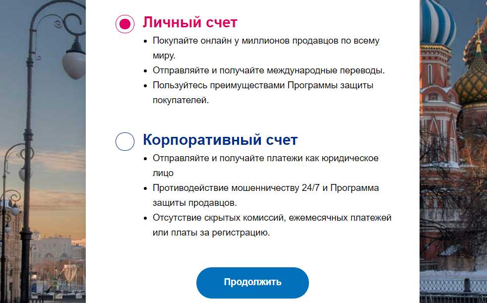

Шаг 2.1
Если вы выбрали корпоративный счёт, то далее необходимо указать адрес
электронной почты и сведения о компании.
48
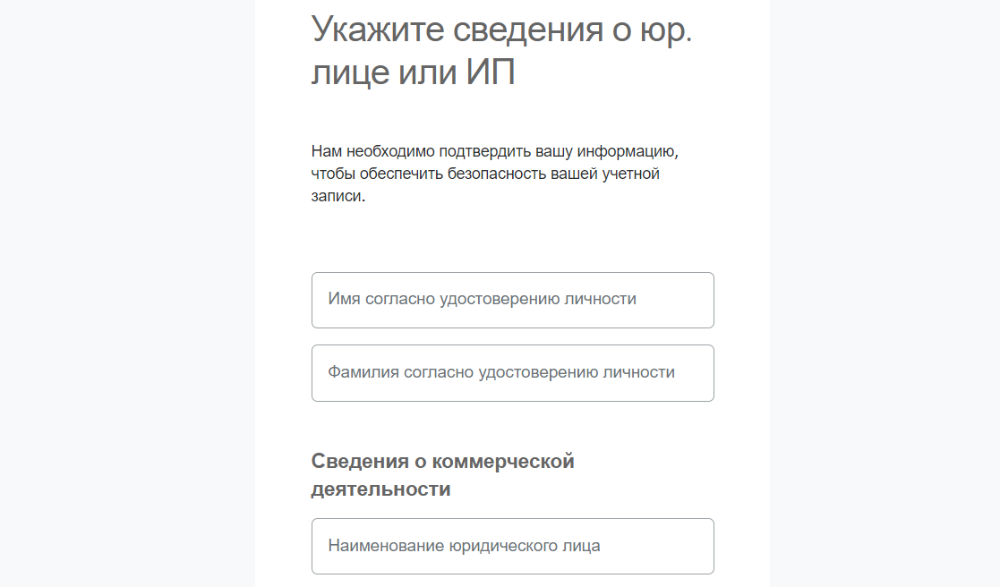

Шаг 3
Если на шаге 2 вы выбрали личный счёт, то далее введите номер телефона (и
проверочный код из СМС), адрес электронной почты, пароль к PayPal (поста-
райтесь, чтобы он был достаточно надёжным – всё-таки это ваш кошелёк с
деньгами).
Шаг 4 – персональные данные
49

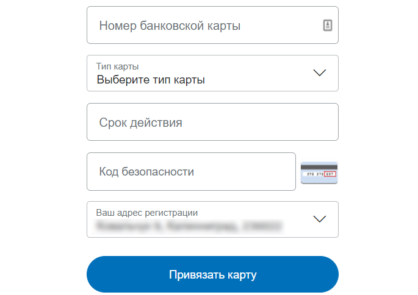
На этом этапе необходимо ввести достоверную информацию о себе, включая
данные паспорта и СНИЛС или ИНН, – это требование законодательства. Все
данные вводятся на русском языке.
Шаг 5 – данные карты
И последним шагом вам нужно ввести данные своей карты, чтобы совершать
платежи (оплачивать покупки или комиссии Etsy).
Карточка не должна быть пустая, так как PayPal спишет 1-3 доллара для про-
верки того, что вы указали верные данные. Но не стоит волноваться – через
пару дней вы получите их обратно.
50

Ниже приведена картинка, где объяснено, откуда с карты берутся нужные дан-
ные.
После ввода данных карты нажмите кнопку Привязать карту.
Затем перейдите в свой электронный ящик, найдите свежее письмо от ПайПал
и подтвердите создание аккаунта.
Всё, вы зарегистрировались в PayPal. Поздравляю!
Какой аккаунт Paypal выбрать: корпоративный или личный
Если у вас есть своя компания или вы зарегистрированы как индивидуальный
предприниматель, то выбирайте корпоративный счёт.
Если же вы просто хотите попробовать свои силы и начать продавать на Etsy, у
вас небольшие объёмы производства – то выбирайте личный счёт. В случае
необходимости, вы сможете зарегистрировать второй аккаунт — корпоратив-
ный.
51
Особенность корпоративного счёта ещё в том, что с него вы не можете оплачи-
вать счета Etsy (то есть делать переводы компаниям). Это можно сделать только
с личного счета или с карты. Также на него нельзя принимать оплаты от компа-
ний.
Можно ли принимать оплаты на личный аккаунт PayPal
Разные сотрудники службы поддержки Пайпал отвечают на этот вопрос по-раз-
ному.
Но у PayPal есть документ «Соглашение с пользователем», в котором написано:
«Вы также можете использовать личный счет для получения платежей за товары
и услуги, за исключением случаев осуществления коммерческой или предпри-
нимательской деятельности. Если Вы планируете использовать свой счет PayPal
преимущественно для продажи товаров, Вам необходимо создать корпоратив-
ный счет».
На деле большинство продавцов на Etsy, с кем мне удалось пообщаться, ведут
все операции именно через Личный аккаунт. Возможно, Пайпал под фразой
«предпринимательская деятельность» подразумевает операции с юридиче-
скими лицами. Или же просто «закрывает глаза» на слишком мелкие операции.
Но также будьте готовы к тому, что в какой-то момент PayPal может заморозить
ваш счёт (и деньги на нём) до тех пор, пока вы не откроете бизнес-аккаунт.
Поэтому, возможно, имеет смысл периодически выводить средства на свой бан-
ковский счет (чтобы не лишиться крупной суммы) или переводить их на ПайПал
кого-то из близких. При этом рекомендуем всегда оставлять некоторую сумму
долларов на случай, если придётся делать возвраты покупателям.
Можно ли открыть счёт ПайПал, если вам нет 18 лет
Нет, нельзя. Но можно зарегистрировать аккаунт на ваших родителей. Главное,
указывайте все данные правдиво – чтобы в случае, если PayPal запросит под-
тверждение документов, вы смогли их предоставить.
52
Какую карту можно/лучше привязать к PayPal
ПайПал позволяет привязать карту следующих платёжных систем: Visa,
MasterCard, American Express и Maestro. Выбирайте любую, какая у вас есть или
закажите в любом удобном для вас банке.
Также можно привязать виртуальную карту, которая доступна у различных пла-
тёжных электронных систем, например, Qiwi или Яндекс.Деньги.
Если у вас по какой-то причине не получается привязать одну карту, то просто
попробуйте другую.
Что лучше – использовать для Пайпал зарплатную карту или
завести новую
Я думаю, что лучше использовать новую. Никто не знает, как ваш банк отреаги-
рует на поступление средств с Пайпала на зарплатную карту. И если вдруг её
заблокируют, то вы останетесь без денег.
Поэтому рекомендую завести новую карту, которую вы будете использовать,
например, только для работы с PayPal и Etsy.
Можно ли привязать карту без денег
Для того, чтобы проверить, верно ли вы ввели данные карты, ПайПал спишет с
неё 1-3 доллара. Поэтому на вашей карте должно лежать необходимое количе-
ство денег в переводе на текущих счёт в вашей валюте (если, конечно, у вас не
долларовая карта).
Через 1-2 дня после этого деньги вернутся на вашу карту.
Если на PayPal добавить новую карту вместо старой, то нужно
ли уведомлять Etsy
Нет, Этси никак об этом уведомлять не нужно. Все платежи будут проходить как
и раньше.
53

Какая комиссия у PayPal
Комиссия за каждую транзакцию рассчитывается в зависимости от страны по-
купателя и его валюты. Комиссия накладывается на общую сумму перевода
(стоимость товара+стоимость доставки) и, например, для России равна 4,4% +
$0.30 USD (если оплата в долларах и покупатель из США).
Например, если покупатель из США перевел мне $20.90 (где стоимость товара
$17.90, а доставка $3), то комиссия с этой суммы равна $1.22 ($0.92+$0.30).
Подробнее о величине комиссии для России вы можете прочитать здесь
https://www.paypal.com/ru/webapps/mpp/ua/useragreement-full#misc
Как связаться с Paypal, если у вас возникли проблемы/во-
просы
Если вам что-то непонятно по работе с сервисом Пайпал, то вы в любой момент
можете обратиться в службу технической поддержки.
У ПайПал есть русскоязычная служба поддержки, поэтому и вопрос можно
написать по-русски.
Для этого нажмите кнопку Связаться с нами внизу страницы.
54

Если вопрос не очень срочный, то можно задать его письменно через форму
обратной связи, нажав на кнопку Напишите нам внизу открывшейся страницы.
Откроется онлайн-чат. Можно написать ключевые слова, которые вас интере-
суют – система сначала предложит несколько статей из справочного центра.
Если вы не найдёте там ответа, то можно нажать кнопку Нет, мне необходима
дополнительная помощь.
55


После этого PayPal предложит написать вопрос в техподдержку. Для этого
нажмите кнопку Да внизу.
Напишите ваше сообщение-вопрос.
После этого вам останется ждать ответа от службы поддержки. Для этого доста-
точно проверять электронную почту, которая привязана к ПайПал – туда при-
ходят уведомления о новых сообщениях.
Если же у вас вопрос, который требует быстрого решения, или же вам просто
удобнее общаться с компанией по телефону, вы можете позвонить.
56


Для этого выберите пункт Позвоните нам.
На следующей странице вы увидите номер телефона, а также одноразовый па-
роль, который нужно назвать специалисту ПэйПал.
Обращаю внимание, что этот пароль действует только 1 час. Если Вы отошли от
компьютера и забыли позвонить, то нужно обновить эту страницу, чтобы си-
стема выдала новый пароль.
Техподдержка работает с 10.00 до 20.30 по московскому времени (с понедель-
ника по пятницу).
Вам ответит русскоязычный специалист PayPal.
57
Как хранить деньги в PayPal, чтобы они не переводились в
рубли/гривны/местную валюту (а хранились в долларах)
По умолчанию, система PayPal переводит все деньги, которые поступают на
ваш счёт, в вашу местную валюту. Например, так как мы живем в России, все
оплаты на Etsy автоматически конвертируются в российские рубли.
В этом нет ничего плохого, если курс рубля к доллару стабилен – однако собы-
тия последних лет показали, что с этим могут быть проблемы. А потому деньги
лучше хранить в более надёжной и стабильной валюте.
Кроме того, курс вашей местной валюты к доллару каждый день хоть немного,
но меняется. И если покупатель захочет отменить заказ и вернуть свои деньги,
вы можете потерять некоторую сумму на двойной конвертации валют (из дол-
ларов в рубли, а потом из рублей обратно в доллары).
Для недорогих товаров (10-20 долларов) разница может составить, например,
10-50 рублей. А если вы продаёте более дорогие изделия (например, дороже
100 долларов), то эта разница комиссий может быть куда больше. И в резуль-
тате может так получиться, что у вас на счёте будет недостаточно денег для воз-
врата.
Та же самая проблема с двойной конвертацией будет и при оплате комиссий
Этси – их тоже нужно оплачивать в долларах (для жителей СНГ).
Чтобы избежать таких неприятностей, можно настроить ПайПал хранить все
пришедшие платежи в долларах США и не переводить их в вашу местную ва-
люту.
Шаг 1
Нажмите кнопку троеточия справа от Остаток на счёте PayPal – Управление
валютами, чтобы посмотреть, какие валюты у вас добавлены в систему. И какая
из них основная.
58


Вы увидите, сколько денег на каком счете у вас хранится.
Нажмите кнопку Добавьте валюту.
В новом окне вы увидите список валют, которые можно добавить в аккаунт.
59


Чтобы добавить доллары США, выберите её, а затем нажмите кнопку Добавить
валюту.
Чтобы назначить любую из валют основной, нужно нажать значок троеточия ря-
дом с ней, а затем нажать кнопку Сделать основной.
60

К сожалению, в PayPal нельзя переводить деньги между счетами. Поэтому не
получится, например, перевести накопления с рублёвого счёта на долларовый.
Шаг 2
Теперь необходимо пройти процедуру полной идентификации, то есть под-
тверждения личности.
Для этого перейдите на страницу https://www.paypal.com/policy/hub/kyc/
Нажмите Начать работу.
На открывшейся странице необходимо ввести данные своего паспорта и ИНН,
после чего загрузить сканы/фотографии паспорта.
61


После проверки этих данных (обычно на это уходит 2-3 дня) PayPal расширит
лимиты вашего аккаунта и позволит хранить деньги в разных валютах.
Шаг 3
Дополнительно можно проверить ещё одну настройку (если она вам доступна).
Перейдите в Настройки – Инструменты для продавца.
Появится таблица с различными настройками. Нам нужна строка Настройки по-
лучения платежей. Нажмите Обновить справа от неё.
62


В настройках приёма платежей в первой строке выберете пункт Да, принять и
конвертировать их в следующую валюту: Доллары США.
Как выводить деньги с PayPal
Шаг 1 – добавляем счёт
Данная инструкция подходит только для тех стран, где разрешён вывод средств
с ПайПал.
Деньги с PayPal можно вывести только на свой банковский счёт. На привязан-
ную карту вывести деньги нельзя. Однако, если у вас есть карта, то есть и счёт
в банке, к которому привязана эта карта. Если у вас нет реквизитов счёта, то
нужно сходить в свой банк и запросить их в виде выписки (или посмотреть в
онлайн-банке, если там есть такая возможность).
Для того, чтобы добавить в ПэйПал свой счёт, перейдите в раздел меню Счет.
63


На открывшейся странице нажмите кнопку Привязать банковский счет.
Далее укажите БИК банка (код банка) и номер вашего банковского счёта (20
цифр, начинается с 4-ки).
После ввода данных нажмите кнопку Согласиться и привязать. Счёт добавлен.
Осталось его подтвердить.
После этого PayPal отправит на ваш счёт 2 небольшие суммы – от 1 до 99 ко-
пеек (в случае с Россией). Они должны прийти в течение 2-4 рабочих дней.
Если у вас подключена услуга SMS-информирования, то вы узнаете об этом по
пришедшей смс. Если не подключена, то нужно зайти в свой интернет-банк и
посмотреть выписку по последним операциям. Или же сходить в банковское
отделение и запросить бумажную выписку.
Как только вы получите оба перевода от PayPal, снова заходите в раздел Бан-
ковские счета и карты, нажимайте на добавленный вами счёт (он будет в ста-
тусе Готово к подтверждению) и введите пришедшие на ваш счёт суммы.
64


Нажимайте кнопку Подтвердить – всё, счёт добавлен и подтверждён.
Чтобы в этом убедиться, кликните на ваш счёт в разделе Счет и убедитесь, что
там стоит статус Подтвержден.
Шаг 2 – выводим деньги
Переходим в раздел Счет и нажимаем Перевести средства.
65

На новой странице выбираем счёт, с которого хотим вывести деньги (в том слу-
чае, если они хранятся в разных валютах), и нажимаем Далее.
Затем указываем банковский счёт, на который хотим перевести деньги.
Наконец, указываем сумму, которую хотим вывести.
66

После чего нажимаем кнопку Далее и набираемся терпения, так как банковский
перевод может занять до 5 рабочих дней.
О поступлении средств вы узнаете из СМС или с помощью выписки по счёту.
Если карта привязана к счёту, то деньги автоматически будут и на карте.
Если принимать оплату в долларах, а выводить на рублёвую
карту – деньги будут конвертироваться
Да, по требованиям российского законодательства, Пэйпал может выводить
деньги только в рублях.
Когда можно вывести деньги с PayPal
Если вы привязали к Пэйпал банковский счёт, то деньги можно выводить в лю-
бой момент. Даже сразу после поступления.
Сколько времени занимает вывод денег со счёта PayPal на
банковский счёт
Обычно это занимает 2-5 рабочих дней. Всё зависит от расторопности банков.
67

Что делать, если на Etsy указал(а) неверный PayPal - товар
продан, деньги не пришли
Самый частый пример – опечатка в написании почтового ящика.
Если такое случилось, то первым делом проверьте, можете ли вы зарегистри-
ровать email с таким адресом.
1. Если да – то после регистрации почтового ящика зайдите в аккаунт PayPal и
перейдите в личный профиль (кнопка шестерёнки в правом верхнем углу).
На вкладке «Счёт» есть раздел «Электронный адрес». Нажмите на значок плюса,
чтобы добавить только что зарегистрированный email.
На данный email вам придёт письмо с подтверждением. Подтвердите адрес.
После этого деньги, которые клиент перевёл на неверный адрес, должны быть
зачислены на ваш Пайпал счёт.
2. Если адрес электронной почты уже кем-то занят, и вы не можете привязать
его к своему аккаунту Пайпал, то необходимо:
• связаться с покупателем
• попросить его обратиться в PayPal или в свой банк (смотря с помощью
чего он оплатил покупку) для отмены операции и возврата денег
От себя лично порекомендую извиниться перед покупателем. И, например,
предоставить скидку на покупку товара после того, как ему вернутся деньги.
Можно ли к Etsy привязать PayPal аккаунт родственника из
другой страны
Да, это не запрещено.
68
Есть ли приложение PayPal для телефонов
Да, конечно, у ПайПал есть приложение для Айфонов и Андроид-телефонов.
Google Play Market – https://play.google.com/store/apps/details?id=com.pay-
pal.android.p2pmobile&hl=en
App Store – https://apps.apple.com/ru/app/paypal/id283646709
Как принимать платежи продавцами из Украины и Беларуси
Если вы живёте в Украине или Беларуси, то на текущий момент не можете при-
нимать платежи и выводить деньги со счёта PayPal. Поэтому у вас есть всего
несколько вариантов, как начать работать на Etsy:
1) Попросить родственника в другой стране (например, России) открыть счёт
в ПайПал на себя и принимать деньги на этот аккаунт.
2) Воспользоваться услугами посредников, например, Seller-Online или
WesternBid.
В последнем случае вы регистрируетесь на сайте одного из посредников и по-
лучаете адрес PayPal аккаунта, который нужно указать на Этси для приёма пла-
тежей.
Полученные деньги посредник потом отправляет на ваш банковский счёт или
карту за вычетом комиссии за свою работу.
Как выставить счёт в PayPal
Иногда появляется необходимость выставить покупателю счет. Например, если
посылка пропала, вы вернули деньги – а потом она всё-таки дошла, и покупа-
тель захотел заплатить вам снова.
Для этого необходимо зайти в ваш аккаунт ПэйПал, перейти в раздел Отправка
и получение, вкладка Отправить и нажать кнопку Отправляйте счета на
оплату.
69

Здесь необходимо ввести:
Поле 1: периодичность. Оставьте однократно.
Поле 2: номер счёта. Формируется автоматически.
Поле 3: дата счёта. По умолчанию выставляется текущая.
Поле 4: можно не заполнять
Поле 5: период оплаты (до какого числа можно оплатить счёт)
Поле 6: адрес электронной почты покупателя, на которую придёт счёт
Поле 7: убрать/добавить поля к этой форме
Поле 8: валюта счёта
Поле 9: наименование товара (можно указать, как на Этси)
Поле 10: стоимость
70

Поле 11: добавить ещё одну строку, если у вас в заказе несколько позиций
Поле 12: стоимость доставки
Можно также указать комментарий к счёту, параметры возврата/отмены и при-
крепить файлы.
После того, как все данные указаны, нажмите кнопку Предварительный про-
смотр. Если вас всё устраивает – нажмите кнопку Отправить.
На электронную почту покупателя придёт созданный вами счёт.
71
Как пополнить счёт PayPal
Допустим, что вам пришёл заказ. Вы вывели все деньги с PayPal.
После этого покупатель пишет, что хочет отменить заказ и просит вернуть
деньги. Но на вашем PayPal-счёте уже ничего нет и возвращать нечего.
В этом случае можно пополнить PayPal в салонах «Евросеть» и «Связной» (в
России). Для пополнения нужно назвать оператору адрес электронной почты, к
которой привязан ваш PayPal-аккаунт.
Пополнить максимум можно на 15 000 рублей за раз (и 40 000 рублей в месяц).
Данная возможность существует только для личных аккаунтов PayPal.
72

3. Добавление товаров
Какие товары можно размещать на Etsy
Существуют 2 основных типа товаров – это физические и цифровые.
Первые – это украшения, куклы, сувениры, одежда и т.п. Всё, что можно потро-
гать и нужно отправить клиенту по почте. А цифровые – это то, что можно ска-
чать в виде файлов, например, шаблоны выкроек, принты картин и прочее.
Физические товары также делятся на современные (созданные вами) и винтаж-
ные (созданные 20 лет назад или раньше и которые вы нашли, например, на
«блошином» рынке или в закромах у себя на чердаке).
Также к физическим товарам относятся материалы для создания хендмейда,
например, пряжа, рабочие инструменты, камни и т.п. Их можно делать как са-
мостоятельно, так и перепродавать уже готовые.
Размещение листингов платное или бесплатное
Если вы регистрировали магазин не по партнёрской ссылке и у вас нет 40 бес-
платных листингов, то стоимость размещения каждого нового товара – 20 цен-
тов ($0.20).
Если у вас на балансе магазина есть бесплатные листинги, то за публикацию
нового товара спишется 1 бесплатный листинг.
Что такое Shop Manager
Так называется личный кабинет продавца. Его можно открыть по ссылке
https://www.etsy.com/your/shops/me/dashboard или кликнув на значок Shop
Manager в правом верхнем углу сайта.
73


Слева (цифра 1) – меню личного кабинета со ссылками на все разделы.
Цифра 2 – статистика просмотров, визитов, заказов и прибыли за выбранный
период времени
Цифра 3 – полезные подсказки Etsy о том, как вести бизнес и информация о
новых сервисах
Цифра 4 – количество необработанных заказов и число листингов. Под числом
новых заказов (Orders – new) видно, нет ли просроченных заказов (Overdue) или
неоплаченных (Not paid). А под числом активных листингов (Active Listings) нахо-
дится напоминание о том, у каких скоро закончится срок размещения (Expired)
и сколько продано без повторного выставления в магазине (Sold out).
Цифра 5 – недавняя активность в магазине (продажи, отзывы, фавориты мага-
зина или листингов)
Цифра 6 – список доступных каналов продаж. Например, если у вас есть сайт
Pattern – ссылка на него будет в этой области личного кабинета.
74


Как добавить листинг с физическим товаром
Шаг 1 – открыть страницу Shop Manager – Listings – Add a listing.
Шаг 2 – добавить фотографии и информацию о товаре
• Photos: вы можете добавить от 1 до 10 фотографий. И лучше использовать
этот раздел по максимуму, так как в интернете человек не может потро-
гать ваш товар и покрутить его в руках. Всё что ему остаётся – это смот-
реть на фотографии. Постарайтесь, чтобы они ответили на все возможные
вопросы клиента. Etsy советуют загружать фотографии не меньше 2000
пикселей по ширине. Но лучше, если они будут больше – чтобы покупа-
тели смогли в подробностях разглядеть ваш товар. Если размер фотогра-
фий большой, то Этси автоматически ужимает их до 3000 пикселей. Фо-
тографии должны быть в формате JPG, PNG или GIF.
75


• Video: видео листинга. Отличная возможность показать свой товар “вжи-
вую”. Вы можете загрузить видео длиной от 5 до 15 секунд, оно будет без
звука. Желательно, чтобы формат был таким же, как у заглавной фотогра-
фии – если первое фото горизонтальное, то и видео лучше снять горизон-
тально. Максимальный размер загружаемого файла – 100 Mb.
• Title: заголовок листинга. Это один и важнейших элементов карточки то-
вара, наряду с тэгами (о которых речь пойдёт ниже). От текста в заголовке
зависит то, будут ли находить вас через поиск Etsy и Google или нет. В
title нужно указать основные характеристики товара. Какие слова и фразы
люди вводят в поиске, чтобы найти такие же товары, как и ваш. Макси-
мальная длина заголовка – 140 символов с пробелами.
• About this listing: здесь есть 3 параметра
o Who made it? (кто это создал). Возможные варианты: я (I did), со-
трудник магазина (a member of my shop), другая компания или че-
ловек (another company or person). Последний вариант подходит,
если вы продаёте винтаж или материалы для творчества.
76

o What is it? (что это). Готовый товар (a finished product) или инстру-
менты/материалы для создания каких-то предметов (a supply or tool
to make things).
o When was it made? (когда это сделано). Здесь можно выбрать Made
to order, то есть товар ещё не готов, а показан образец, который
можно сделать, если покупатель попросит об этом. Остальные
варианты – это примерный год изготовления вашего товара.
• Category: нужно указать, к какой категории товаров можно отнести изде-
лие. Указать её можно двумя способами. Первый – ввести слово, которое
характеризует товар, и выбрать категорию, которую предлагает Etsy.
Второй способ – найти нужную категорию вручную. Для этого нажмите
ссылку You can also add them manually.
77


После этого укажите главную категорию и подкатегории товара.
• Далее идут атрибуты товара, которые вместе с заголовками и тэгами вли-
яют на результаты поиска Этси.
Часть атрибутов общие для всех категорий товаров, а часть появляется
только при выборе определенного типа изделия.
• Primary color: основной цвет изделия (выбирайте тот, который ближе всего
вам подходит. Например, здесь нет лимонного цвета, но есть жёлтый и
зелёный)
• Secondary color: второстепенный цвет изделия (если есть)
• Occasion: для какого события (например, годовщина или день рождения)
• Style: стиль изделия
78
• Holiday: для какого официального праздника (например, Рождество или
День независимости)
• Sock size: этот атрибут нужно указать, если вы продаёте, например, носки.
А если у вас браслеты, то здесь будет атрибут Длина браслета. Для обуви
– размер. И т.п. Для каких-то категорий дополнительных атрибутов нет
(например, рюкзаки).
Все атрибуты опциональны – их можно указывать, а можно и нет. Но
лучше указать то, что знаете.
• Renewal options: параметры обновления листинга. Добавленный товар
размещается на Этси в течение 4 месяцев. После этого (если его не купят)
он попадает в раздел неактивных. Вы можете снова выставить его на про-
дажу вручную (для этого выберите Manual) или автоматически (Automatic).
Новое размещение стоит также 20 центов.
• Type: тип товара. В нашем случае – физический (Physical).
• Description: описание товара. Далеко не все покупатели читают этот текст.
Но несмотря на это, стоит его заполнить максимально полезными сведе-
ниями, например, размеры изделия, вес (если это важно), цвет и т.п. Также
можно указать основные правила работы магазина: сроки отправки и до-
ставки, правила возврата/отмены заказа и т.п.
79


• Production partners: если часть работы по изготовлению ваших товаров вы-
полняет сторонняя кампания (специально для вас), то её необходимо ука-
зать в этом разделе. Подробнее об этом смотрите вопрос «Как указать
компанию, которая помогает производить товары?»
• Custom orders: поставьте здесь галочку, если хотите, чтобы покупатели
могли написать вам сообщение и попросить сделать точно такой же товар,
но с какими-то изменениями (например, в другом цвете). Чтобы эта
настройка появилась, нужно включить данную возможность в параметрах
магазина Shop Manager – Settings – Options – Enabled Request Custom Order.
• Section: укажите, в какой раздел/секцию вашего магазина поместить но-
вый товар. Если они у вас ещё не созданы, то выберите пункт Add a section.
• Tags: еще один параметр (наряду с заголовком и атрибутами), который
крайне важен для того, чтобы вас находили в поиске Etsy. Желательно,
чтобы тэги повторяли поисковые запросы людей и то, что у вас написано
в заголовке. Можно добавить 13 тэгов, каждый из которых может быть
длиной не более 20 символов с пробелами (для английского языка).
• Materials: материалы, из которых сделан ваш товар. Можно указать до 13
наименований.
80


• Price: цена на товар в долларах (или в той валюте, которую вы выбрали в
настройках).
• Quantity: количество товара в наличии.
• SKU: артикул товара (если он у вас есть; параметр видите только вы)
Далее вы можете добавить варианты изготовления вашего товара. Например,
для одежды это могут быть размеры (S, M, L), для колец – диаметр.
Таких вариаций (Variations) может быть максимум 2.
Чтобы добавить варианты товара, нажмите Add variations.
После того, как вы выбрали нужные параметры, следует добавить их значения.
Для каждого варианта можно указать его стоимость и количество.
81

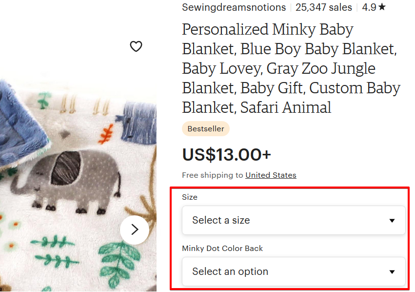
Если вы решите временно не показывать покупателю какой-либо из вариантов
товара, то передвиньте переключатель Visible в левое положение.
В результате на странице товара покупатели увидят примерно так:
Если у вас несколько вариаций товаров (например, разного цвета), то каждую
из них можно привязать к загруженной в листинг фотографии. И при выборе
нужной вариации при заказе товара Etsy покажет покупателю связанную с ней
фотографию.
Чтобы это сделать, нажмите кнопку Link photos.
82


Далее нужно выбрать вариацию, для которой вы хотите привязать фотографии.
И для любого из пунктов (или для всех) укажите фотографию, которая ему со-
ответствует.
Следующий пункт добавления товара – персонализация (Personalization).
Если вы можете нанести на свои товары какую-то уникальную информацию по-
купателя (дату рождения, имя, инициалы, памятную фразу и т.п.) – можно вклю-
чить этот пункт в настройках.
В этом случае также нужно указать:
83

• Instructions for buyers – инструкция для покупателей, что писать в поле
персонализации при заказе товара
• Personalization is optional – если отмечено, то поле персонализации поку-
пателю заполнять не обязательно
• Character limit – максимально количество символов, которое может вве-
сти покупатель
В вашем магазине покупатель увидит это следующим образом:
Далее необходимо разобраться со стоимостью доставки. Её нужно выставить
заранее для каждого товара.
• Shipping origin – страна, из которой вы отправляете товар
• Processing time – в течение скольких дней/недель вы отправите товар по-
сле получения заказа (т.е. это не срок доставки товара, а именно срок
подготовки товара к отправке).
84
• Fixed shipping prices: стоимость отправки внутри своей страны и в другие
страны.
Цену пересылки можно уточнить, например, на сайтах почтовых служб вашей
страны. Для примера, сайты Почты России и УкрПочты.
Для каждой страны можно указать свою стоимость отправления.
У Почты России, например, единая цена на мелкие пакеты для всех стран. По-
этому, чтобы не перечислять каждую страну по отдельности, можно выбрать ва-
риант Everywhere Else и указать единую цену на отправку во все страны (кроме
тех, что указаны отдельно).
Здесь нужно указать:
• служба доставки (Shipping carier) - по умолчанию оставьте вариант Other
• время доставки (Delivery time) - можно указать, если вы знаете, сколько
примерно может занять доставка (но не обязательно)
• стоимость доставки (What you'll charge)
В параметре What you'll charge по умолчанию стоит вариант Free shipping (бес-
платная доставка). Если вы хотите, чтобы за доставку покупатель платил допол-
нительно, то выберите пункт Fixed price.
85

Когда вы будете указывать стоимость доставки, то здесь есть 2 колонки:
• цена отправки при заказе только этого товара (One item)
• цена доставки, если товар заказали вместе с другим или их заказали не-
сколько штук (Additional item)
Если у вас включена реклама Etsy Ads, то на последнем шаге настроек в пункте
Marketing вы можете выбрать, отправить ли новый листинг в рекламу. По умол-
чанию выбран пункт Yes, advertise this listing (да, рекламировать этот листинг).
Если выбрать Maybe later, то листинг в рекламу не добавится.
После того, как вы выбрали все параметры, можете размещать листинг в мага-
зине. Для этого нажмите кнопку Publish.
Также можно сохранить листинг как черновик (Save as draft), если вы пока не
заполнили все поля (за это деньги не берутся) или с помощью кнопки предпро-
смотра оценить, как его увидят покупатели (Preview).
Как добавить листинг с цифровым товаром
Шаг 1 – открыть страницу Shop Manager – Listings – Add a listing.
86


Шаг 2 – добавить фотографии и информацию о товаре
• Photos: вы можете добавить от 1 до 10 фотографий. И лучше использовать
этот раздел по максимуму. Постарайтесь, чтобы они ответили на все воз-
можные вопросы клиента. Etsy советуют загружать фотографии не
меньше 2000 пикселей по ширине. Но лучше, если они будут больше –
чтобы покупатели смогли в подробностях разглядеть ваш товар. Если раз-
мер фотографий большой, то Этси автоматически ужимает их до 3000
пикселей. Фотографии должны быть в формате JPG, PNG или GIF.
87

• Video: видео листинга. Отличная возможно показать свой товар “вживую”.
Вы можете загрузить видео длиной от 5 до 15 секунд, оно будет без звука.
Желательно, чтобы формат был таким же, как у заглавной фотографии –
если первое фото горизонтальное, то и видео лучше снять горизонтально.
Максимальный размер загружаемого файла – 100 Mb.
• Title: заголовок листинга. Это один и важнейших элементов карточки то-
вара, наряду с тэгами (о которых речь пойдёт ниже). От текста в заголовке
зависит то, будут ли находить вас через поиск Etsy и Google или нет. В
title нужно указать основные характеристики товара. Какие слова и фразы
люди вводят в поиске, чтобы найти такие же товары, как и ваш. Макси-
мальная длина заголовка – 140 символов с пробелами.
• About this listing: здесь есть 3 параметра
o Who made it? (кто это создал). Возможные варианты: я (I did), со-
трудник магазина (a member of my shop), другая компания или че-
ловек (another company or person).
o What is it? (что это). Готовый товар (a finished product) или инстру-
менты/материалы для создания (a supply or tool to make things).
o When was it made? (когда это сделано). Здесь можно выбрать Made
to order, то есть товар ещё не готов, а показан образец, который
можно сделать, если покупатель попросит об этом. Остальные
варианты – это примерный год изготовления вашего товара.
88


• Category: нужно указать, к какой категории товаров можно отнести ваше
изделие. Например, товары для свадьбы (wedding), книги (books, movies
& music), товары для рукоделия (craft supplies & tools) или другое.
Хотя для цифровых товаров этот выбор не всегда очевиден, но всё же
постарайтесь указать категорию как можно точнее – от этого в том числе
зависит найдут ли вас покупатели через поиск на Этси. Основная катего-
рия, которую выбирают большинство продавцов и советуют Etsy – Craft
supplies & tools.
Указать категорию можно двумя способами. Первый – ввести слово, ко-
торое характеризует товар, и выбрать из вариантов Etsy.
Второй способ – найти нужную категорию вручную. Для этого нажмите
ссылку You can also add them manually.
89


После этого укажите главную категорию и подкатегории товара.
После выбора категории вам могут предложить указать до 5 типов ваших изде-
лий – например, для какой тематики он предназначен.
Часть атрибутов общие для всех категорий товаров, а часть появляется только
при выборе определенного типа изделия.
Первые 4 атрибута одинаковы для всех категорий.
• Primary color: основной цвет изделия (выбирайте тот, который ближе всего
вам подходит)
90


• Secondary color: второстепенный цвет изделия (если есть)
• Occasion: для какого события (например, годовщина или день рождения)
• Holiday: для какого официального праздника (например, Рождество или
Дня независимости)
• Style: стиль товара
У вас также могут быть другие атрибуты, в зависимости от выбранных подкате-
горий. Например:
Все атрибуты опциональны – их можно указывать, а можно и нет. Но лучше
указать то, что знаете.
• Renewal options: параметры обновления листинга. Добавленный товар
размещается на Этси в течение 4 месяцев. После этого (если его не купят)
он попадает в раздел неактивных. Вы можете снова выставить его на про-
дажу вручную (для этого выберите Manual) или автоматически (Automatic).
Обновление листинга стоит 20 центов.
• Type: тип товара. В нашем случае – цифровой (Digital).
91

• Description: описание товара. Далеко не все покупатели читают этот текст.
Но всё же стоит его заполнить максимально полезными сведениями,
например, размеры, типы файлов, количество страниц и т.п. Можно ука-
зать основные правила работы магазина.
• Custom orders: поставьте здесь галочку, если хотите, чтобы покупатели
могли написать вам сообщение и попросить сделать точно такой же товар,
но с какими-то изменениями (например, в другом цвете). Чтобы эта
настройка появилась, нужно включить данную возможность в параметрах
магазина Shop Manager – Settings – Options – Enabled Request Custom Order.
• Section: укажите, в какой раздел/секцию вашего магазина поместить но-
вый товар. Если они у вас ещё не созданы, то выберите пункт Add a section.
• Tags: еще один параметр (наряду с заголовком и атрибутами), который
крайне важен для того, чтобы вас находили в поиске Etsy. Желательно,
чтобы тэги повторяли поисковые запросы людей и то, что у вас написано
в заголовке. Можно добавить 13 тэгов, каждый из которых может быть
длиной не более 20 символов с пробелами.
• Materials: материалы, из которых сделан ваш товар. Можно написать до
13 наименований. Или не писать ничего.
92

Сложно придумать, что здесь указать для цифровых товаров. Кто-то из
продавцов указывает название программы, в которой был создан доку-
мент, кто-то пишет, какие файлы получит покупатель (2 PDF files).
• Price: цена на товар в долларах (или в той валюте, которую вы выбрали в
настройках).
• Quantity: количество товара в наличии. Лучше выставить здесь большое
число, например, 100 или 999, чтобы при продаже ваш товар оставался
активным и не исчезал из магазина.
• SKU: артикул товара (если он у вас есть; параметр видите только вы)
Следующий пункт добавления товара – персонализация (Personalization).
Если вы можете добавить к своим товарам какую-то уникальную информацию
покупателя (дату рождения, имя, инициалы, памятную фразу и т.п.) – можно
включить этот пункт в настройках.
93

В этом случае также нужно указать:
• Instructions for buyers – инструкция для покупателей, что писать в поле
персонализации при заказе товара
• Personalization is optional – если отмечено, то поле персонализации поку-
пателю заполнять не обязательно
• Character limit – максимально количество символов, которое может вве-
сти покупатель
В вашем магазине покупатель увидит это следующим образом:
Далее загрузите на Etsy ваши файлы. Они будут доступны покупателям сразу
после оплаты. Можно загрузить от 1 до 5 файлов. Максимальная длина назва-
ния файла – 70 символов. Этси не меняет название загруженного документа, а
покупатели видят его таким, как вы указали. Поэтому перед загрузкой про-
верьте, чтобы названия были понятными для покупателя.
94
Размер файла может быть не более 20Mb. Если ваш файл превышает указанный
размер, то можно поступить следующим образом: в данный листинг загрузить
pdf-файл, который будет содержать инструкции и ссылку на скачивание цифро-
вого товара, загруженного на файлообменник, например, Google Drive.
Типы файлов, которые поддерживаются Этси:
• Аудио: mpeg и mp3
• Изображения: gif, jpeg, png, tiff, bmp, pdf
• Текстовый: txt
Если у вас включена реклама Etsy Ads, то на последнем шаге настроек в пункте
Marketing вы можете выбрать, отправить ли новый листинг в рекламу. По умол-
чанию выбран пункт Yes, advertise this listing (да, рекламировать этот листинг).
Если выбрать Maybe later, то листинг в рекламу не добавится.
После того, как вы выбрали все параметры, можете размещать листинг в мага-
зине. Для этого нажмите кнопку Publish.
Также можно сохранить листинг как черновик (Save as draft), если вы пока не
заполнили все поля (за это деньги не берутся) или с помощью кнопки предпро-
смотра оценить, как его увидят покупатели (Preview).
95


Как создать черновик листинга
Если вы не хотите сразу выкладывать товар на витрину Etsy (например, нужно
внести правки в текст или загрузить фотографии), то можно сохранить листинг
в черновики.
Для этого внизу страницы создания листинга нажмите кнопку Save as draft.
После этого листинг попадёт в раздел Draft раздела Listings.
Вы в любой момент можете вернуться к его редактированию, а затем опубли-
ковать (кнопка Publish).
При сохранении листинга в Черновики (Draft) вы не платите 20 центов за раз-
мещение. Это происходит только в момент публикации.
96

Как отредактировать несколько листингов разом
Для этого перейдите в раздел Listings, выделите галочками нужные товары и
нажмите кнопку Editing options.
У вас откроется выпадающее меню, в котором для выбранных листингов можно
изменить следующие параметры:
• Edit titles – изменить заголовки (добавить фразу в начало или конец, за-
менить или удалить слово/фразу)
• Edit tags – добавить или удалить какой-то определенный тэг у всех ли-
стингов разом
• Edit descriptions – изменить описание товаров (добавить фразу в начало
или конец, заменить или удалить слово/фразу)
• Edit prices – изменить цены (увеличить или уменьшить на определенное
количество долларов или процентов, назначить всем товарам одну цену)
• Edit personalization – включить или выключить у товаров возможность
персонализации
• Change production partners – сменить партнёра по производству товаров
• Change renewal options – назначить ручное или автоматическое обнов-
ление товаров после 4 месяцев размещения
• Change shipping profiles – изменить профиль доставки
• Change section – изменить секцию
97
Почему цена моих цифровых товаров выше, чем я указал(а)
в настройках товара
Для покупателей из ряда стран Etsy автоматически добавляет к указанной вами
стоимости цифровых товаров VAT налог (НДС) этой страны.
К числу таких стран относятся Россия, Беларусь, Норвегия, Швейцария, Ислан-
дия, страны Евросоюза, Южная Корея, Индия, Австралия, Новая Зеландия, ЮАР,
Турция, ОАЭ, Тайвань.
Например, вы продавец из России и продаёте цифровые товары. Вы выставили
цену листинга 10 долларов. Если вы посмотрите на свой готовый листинг, то
увидите, что его стоимость равна 12 долларам.
Всё потому, что Этси автоматически считают вас покупателем из России, по-
этому они добавили к цене российский НДС – 20% (то есть $2 плюсом к 10
долларам). А, например, жители США видят и платят ту цену, которую выставили
вы – то есть 10 долларов.
Но это не значит, что вы будете зарабатывать больше благодаря покупателям
из этих стран. Эти “лишние” деньги нужно будет вернуть Etsy вместе со всеми
комиссиями за прошедший месяц (если вы принимаете оплаты на PayPal).
Почему на странице товара нет параметра Quantity
Когда вы добавляете листинг, то в пункте Quantity указываете, сколько единиц
товара у вас есть в наличии.
98

Если Quantity больше 1, то покупатель может купить несколько штук вашего
изделия.
Но у некоторых листингов, даже если Quantity в настройках указано больше 1,
этого выпадающего списка нет в параметрах товара.
Дело в том, что для товаров дороже 20 долларов Etsy решили не показывать
данную опцию.
Если клиент хочет несколько изделий, то он должен указать количество в кор-
зине.
99
Можно ли скопировать старый листинг и сделать на его ос-
нове новый
Да, на Etsy есть такая функция. Она очень полезна, когда у вас похожие товары
и в листинге есть несколько одинаковых полей, которые не хочется заполнять
раз за разом по новой.
Это можно сделать двумя способами.
Способ 1 – Listing Manager
Перейдите на страницу Shop Manager – Listings и возле нужного товара нажмите
на значок шестерёнки, а затем Copy.
Способ 2 – со страницы самого товара
Перейдите на страницу своего магазина и откройте страницу нужного товара.
Сверху над фотографиями будут ссылки, которые видны только вам. Нажмите
на ссылку Copy.
100

Если товар мало смотрят, можно ли вместо него выставить
другой
В правилах Этси раньше было прямо сказано, что данные действия запрещены,
поскольку это расценивается как уклонение от уплаты комиссии (20 центов за
размещение): «Examples of Fee Avoidance: editing a listing's information to
change it to an entirely different item».
На текущий момент такой формулировки в правилах нет – хотя параграф об
уклонении от уплаты комиссий остался (с другими примерами).
На деле ни разу не слышала, чтобы за это наказывали. Знаю, что многие про-
давцы редактируют листинги, размещая в них другие, похожие товары.
Можно ли создать два листинга для одного товара
Да, вы можете так сделать. Можно для одного листинга указать одни ключевые
фразы, а для другого – другие.
Чтобы не вводить в заблуждение покупателей, вы можете выставить разные за-
главные фотографии.
Какую категорию выбрать для товара
При добавлении нового товара обязательно нужно указать его категорию. Это
можно сделать вручную (нажав на ссылку You can also add them manually) или
воспользоваться подсказками Etsy.
101


От выбора правильной категории зависит в том числе вероятность быть найден-
ным на Etsy. Особенно это касается товаров, которые сложно отнести к какой-
то конкретной категории или же они подходят сразу под несколько. В послед-
нем случае можно попробовать поместить товар в другую категорию, если,
например, просмотров совсем мало, или создать дубликаты с другими фотогра-
фиями и текстом и поместить их во все подходящие разделы сайта.
Категории также важны для мобильного приложения Etsy. Там при нажатии на
строку поиска покупатель сразу видит список основных разделов на Этси.
В компьютерной версии Etsy список категорий доступен в верхней части сайта.
Если вы сомневаетесь, в какую категорию отнести товар, то найдите на Etsy по-
хожие изделия конкурентов и посмотрите их выбор. Категория и подкатегории
102
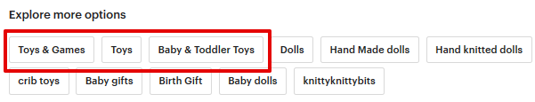
товара обычно показываются как первые теги внизу страницы (иногда бывает,
что главная категория показывается как первый тэг, а подкатегории – как по-
следние тэги).
Полный список доступных на Этси категорий вы можете найти на странице
https://www.etsy.com/help/categories/seller
Сколько времени проходит, прежде чем листинг попадает в
поиск Etsy
Обычно уже в течение часа после добавления вы можете найти свой листинг
через поиск Etsy. Однако в редких случаях этот срок может увеличиться до 24
часов.
В первые 2-5 суток практически по любым поисковым фразам он будет нахо-
диться на 10-й или более дальних страницах. А потом начнёт движение на бо-
лее-менее постоянные позиции.
Если и по прошествии этого времени товара нет в поиске (и вы не можете найти
его по ключевым словам даже в поиске по магазину) – стоит написать в тех-
поддержку Etsy.
Какие сроки размещения листингов
Каждый новый листинг активен и видим на Этси в течение 4 месяцев.
После этого он переходит в раздел Expired, и покупатели его больше не видят у
вас в магазине.
103
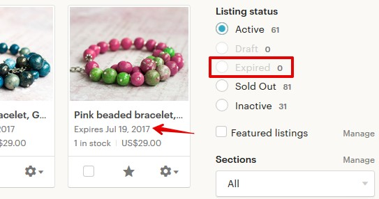

Можно ли размещать товар на Etsy дольше, чем 4 месяца
Да, нужно обновить истекший листинг (Renew). Для этого найдите нужный ли-
стинг в разделе Expired своего магазина, откройте его для редактирования,
нажмите кнопку Manage и выберите Renew.
То же самое можно сделать, не заходя в сам листинг, а нажав на значок шесте-
рёнки у нужного листинга.
104


Стоимость повторного размещения листинга – $0.20. Или 1 бесплатный ли-
стинг.
Также вы можете для каждого листинга выставить настройку, чтобы он автома-
тически продлялся по истечении 4 месяцев. Для этого в параметрах товара вы-
ставите опцию Renewal option как Automatic.
Это также будет стоить 20 центов или 1 бесплатный листинг.
Что такое обновление листингов (renew)
Вы можете обновить свои листинги до истечения срока в 4 месяца.
Зачем это нужно? Прежде всего потому, что дата размещения вашего товара
влияет на позиции листинга в поиске. Чем «новее» товар, тем выше он может
оказаться в поисковой выдаче Этси. Эффект может достигать даже нескольких
страниц.
Но в последнее время эффект роста позиций благодаря renew сильно снизился.
И этот фактор уже не так важен для позиций в поиске Etsy, как раньше. Есть
некоторые нюансы, которые правильнее всего проверять в конкретном мага-
зине и на конкретном поисковом запросе.
105
Стоимость обновления (ренью) листинга равна стоимости размещения товара –
$0.20. Или 1 бесплатный листинг, если они у вас есть.
Как часто нужно обновлять листинги
Это зависит только от вас. Попробуйте обновить листинг и понаблюдать за ре-
зультатами (изменение позиций, количество переходов). Также проследите, как
долго длится «эффект» от ренью, то есть сколько времени проходит, прежде
чем ваш листинг возвращается на прежние позиции. Так вы поймёте, как часто
в вашем случае стоит обновлять товар.
Для примера, мы проверяли влияние обновления листинга на позиции разных
листингов своего магазина. В одном случае по очень конкурентной фразе после
Renew товар поднялся с 11-й страницы результатов поиска на 3-ю. Но уже че-
рез 12 часов вернулся обратно на 11-ю страницу. В другом случае обновление
даты размещения листинга никак не сказывалось на позициях. А также была
ситуация, когда ренью позволило временно улучшить местоположение ли-
стинга в категориях.
Поэтому, повторюсь, всё индивидуально. Рекомендую проверять, как эта функ-
ция будет работать у вас при ваших исходных данных.
И не забывайте, что каждое обновление стоит 20 центов (или 1 бесплатный ли-
стинг). Учитывайте это при выставлении стоимости товара.
Как вычислить стоимость товара
На эту тему написано немало книг, но попробуем уместить это в двух кратких
вариантах.
Способ 1 – «снизу-вверх»
Первым делом нам нужно посчитать затраты на расходные материалы, напри-
мер, для физических товаров это может быть стоимость ткани, ниток, камней,
бусин, глины, деревянных заготовок и т.п.
Затем подсчитайте дополнительные расходы. Сюда относятся, например, стои-
мость оборудования, проезда до почты и в магазины с материалами, услуги фо-
тографа и модели, аренда мастерской. Просуммируйте эти затраты и разделите
106
на примерное количество товаров, которые вы планируете создать в год. Так
вы поймёте, сколько дополнительных затрат включено в стоимость товара.
Третье – трудозатраты. Подсчитайте, сколько времени уходит на создание 1
единицы товара. На упаковку и поездку на почту. Фотографирование и обра-
ботку снимков. На создание листинга и его рекламу в соцсетях. Подсчитайте,
сколько часов у вас уходит в сумме на 1 товар. И умножьте это на стоимость
вашего часа работы. Как его вычислить? Разделите ваш желаемый ежемесяч-
ный доход на количество рабочих часов – это и будет стоимость часа работы.
Например, при 40-часовой рабочей неделе в месяц получается примерно 160
рабочих часов. И если вы хотите зарабатывать 30 000 рублей, то стоимость ва-
шего часа получается около 185-190 рублей. Чем быстрее вы делаете товар,
тем он дешевле.
Это упражнение также позволяет понять, во сколько вам обходится сидение пе-
ред телевизором или в соцсетях :)
Теперь просуммируйте значения всех трёх категорий затрат – это и есть себе-
стоимость товара.
Учтите также и все комиссии:
• Etsy
o $0.20 за размещение листинга
o $0.20 за каждое обновление (ренью)
o 5% комиссия за продажу (от стоимости товара и доставки)
o VAT налог / НДС (если есть)
• Paypal
o 4.4% от полной стоимости листинга (товар + доставка)
o $0.30 фиксированная комиссия
• Комиссия посредника PayPal (если есть)
Всё это следует учитывать, если вы планируете относиться к магазину на Этси
как к серьезному и полноценному бизнесу. По крайней мере весь этот анализ
позволит понять, как можно снизить себестоимость производства ваших това-
ров. Например, стоит ездить на почту только 1-2 раза в неделю. Или делать
упаковочные коробки самому, а не покупать (или наоборот).
Способ 2 – «сверху-вниз»
107
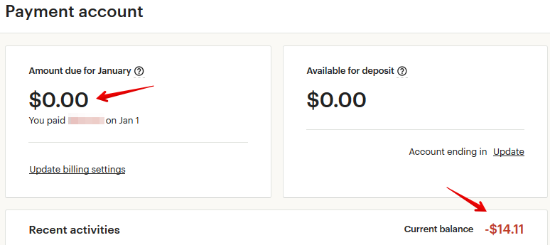
В этом случае следует проанализировать цены конкурентов на Etsy, чтобы при-
мерно понять, в какой ценовой категории предстоит работать. И как себестои-
мость ваших товаров соотносится с ценами рынка.
После этого подумайте о вашей целевой аудитории и предположите, ради ка-
ких целей они могут купить ваш товар, и сколько примерно они готовы за него
отдать. Например, люди часто тратят на подарки большие суммы, а на вещах
для себя экономят.
На основе этого выставите стоимость товара и посмотрите, как пойдут дела. По
результатам скорректируйте её в большую или меньшую сторону.
Когда оплачивать комиссии Etsy
Если у вас подключен PayPal, то комиссии за все размещенные и проданные
товары, обновления и рекламу вы платите на Этси не сразу «по факту», а с 1 по
20 число следующего месяца.
Например, если вы в сентябре разместили 5 товаров (по 20 центов каждый), то
комиссию за них (1 доллар) должны оплатить с 1 по 20 октября.
Раньше 1-го числа нового месяца кнопка оплаты (Pay now) не появляется.
Посмотреть, сколько вы должны Etsy, можно на странице Shop Manager –
Finances – Payment account в левой колонке Amount due for…
До конца месяца здесь будут стоять нули, а с 1-го числа и до момента оплаты –
сумма комиссий за прошлый месяц.
108

В графе Current balance показывается текущий долг перед Etsy, то есть сколько
нужно заплатить в следующем месяце.
Если у вас в магазине подключен Etsy Payments, то все комиссии автоматически
списываются с вашей прибыли/продаж. Если за текущий месяц продаж не было,
а комиссии накопились – оплатить их можно с банковской карты.
Как узнать, за что именно начислена комиссия Etsy
На странице Finances – Payment account есть таблица Recent activities со списком
всех начисленных комиссий.
Под названием листинга указано, за что взята комиссия (в данном случае, за
его обновление, renew). И размер комиссии – это графа Fee&Tax.
Перечислю основные варианты комиссий:
• renew – обновление листинга
• auto-renew sold – автообновление после продажи
• renew expired – обновление листинга, срок размещения которого истёк
• VAT – НДС (например, для российских продавцов)
• transaction – Etsy-комиссия за продажу (5%)
• shipping transaction — комиссия со стоимости доставки (5%)
• listing – комиссия за размещение нового товара
• multi-quantity – если один листинг купили в количестве нескольких штук
(например, 5 одинаковых тарелок), то за 2-й, 3-й и последующие единицы
товара удерживается комиссия 20 центов (как будто вы его разместили
вновь и его сразу же купили)
• sales tax – налог, который платят покупатели некоторых штатов США и
ряда других стран (нужно вернуть обратно Etsy)
• digital VAT – налог на цифровые товары, который платят покупатели из
ряда стран (например, Евросоюза) и который нужно вернуть обратно Etsy
109

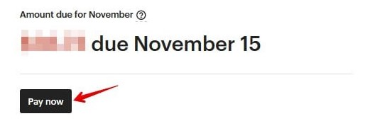
• gift wrap – комиссия 5% за подарочную упаковку
• Etsy Ads – комиссия за рекламу Etsy Ads (добавляется в счёт каждый день)
• Offsite Ads – комиссия за рекламу Offsite Ads
• credit – возврат на ваш баланс уже уплаченной комиссии (например, ко-
гда заказ отменён)
Как можно оплатить комиссии Etsy
Оплатить можно двумя способами – или с карты, или со счёта PayPal. Выби-
райте тот способ, который Вам удобнее.
Добавить реквизиты карты можно на странице Shop Manager – Finances – Pay-
ment settings – Billing – Add a new card.
Если у вас подключен PayPal, то оплатить комиссии можно только с 1-го числа
нового месяца. Раньше этого дня кнопка оплаты Pay now не появляется.
110
Можно ли оплачивать комиссии сразу, не дожидаясь первого
числа нового месяца
Раньше так можно было делать, но сейчас эта возможность исчезла.
Оплачивать комиссии на данный момент можно только с 1-го числа нового ме-
сяца.
Что будет, если вовремя не оплатить комиссию
Etsy могут ограничить действие вашей учётной записи, вплоть до закрытия ма-
газина. Поэтому старайтесь оплачивать всё в срок.
Можно ли выставить сумму доставки после оплаты покупа-
теля
Нет, стоимость доставки необходимо указать заранее. Покупатель сразу опла-
чивает единую сумму (стоимость товара и доставки).
Как заранее узнать стоимость доставки товара
Лучше всего обратиться за консультацией в почтовую службу своей страны или
посмотреть информацию на сайте. Например, для Почты России все расценки
можно посмотреть прямо на их сайте, а также уточнить у онлайн-консультанта.
https://www.pochta.ru/support/post-rules/tariffs
В настоящий момент у Почты России есть 2 варианта международных почтовых
отправлений для товаров – мелкий пакет (до 2 кг) и посылка (до 20 кг).
Максимальный размер мелкого пакета – сумма длины, ширины и высоты не
больше 90 см (самая длинная сторона не больше 60 см).
Максимальный размер посылки – сумма длины, ширины и высоты не больше
200 см (самая длинная сторона не больше 105 см).
В случае с мелким пакетом не важно, в какую страну вы отправляете товары –
цена зависит только от веса. Например, мелкий пакет до 100 грамм стоит 330
111
рублей. От 100 до 250 грамм – 450 рублей. Данные цены указаны при отправке
марками (без НДС) – обязательно попросите оператора в почтовом отделении
отправить именно так. Иначе стоимость отправки увеличится примерно на 30-
100 рублей (в зависимости от веса).
В случае посылок цена зависит и от страны назначения, и от веса. Так, напри-
мер, посылка весом 3 кг в США стоит 1180+383+383=1946 рублей, а в Австра-
лию – 1620+691+691=3002 рублей. Первая цифра – стоимость первого кило-
грамма, а последующие цифры – стоимость каждого следующего килограмма.
Пример указан для отправки марками. Но может так случиться, что в вашем
отделении не окажется марок такого номинала. Тогда придется оплачивать еще
бОльшую стоимость.
Если вы отправляете посылки, а не мелкие пакеты, стоимость доставки можно
указать для всех основных стран (например, США, Австралия, Канада, Велико-
британия), а для остальных выставить какую-то усреднённую стоимость.
Чтобы каждый раз не прописывать эти значения для новых листингов, удобно
использовать Shipping Profiles.
Можно ли сделать шаблон для цен на доставку (Shipping
Profiles)
Да, на Этси это называется Shipping Profiles. Вам нужно лишь 1 раз указать сто-
имость доставки для разных стран, а потом у каждого нового листинга выбрать
нужный профиль доставки.
И в случае, если цены на почтовые услуги изменятся, вам нужно будет внести
изменения лишь в этот профиль – и они автоматически применятся к листин-
гам, где вы указали данный профиль.
Например, у меня сделаны следующие профили:
• мелкий пакет до 100 грамм
• мелкий пакет от 101 до 250 грамм
• мелкий пакет от 251 до 500 грамм
И у каждого профиля своя цена доставки.
112

Как создать Shipping Profiles
Для этого перейдите в меню Shop Manager – Settings – Shipping settings – Ship-
ping profiles.
Здесь показан список текущих профилей. Чтобы добавить новый, нажмите
кнопку Add a shipping profile.
Здесь вы указываете:
• страну отправки (Shipping origin)
• сколько времени вам нужно, чтобы отправить заказ, считая с момента
оплаты (Processing time)
113

Далее необходимо указать стоимость отправки в различные страны:
• служба доставки (Shipping carier) - по умолчанию оставьте вариант Other
• время доставки (Delivery time) - можно указать, если вы примерно знаете,
сколько может занять доставка (не обязательно)
• стоимость доставки (What you'll charge)
114


Чтобы добавить новую страну в список, нажмите Add another location. А если
стоимость отправки во все страны одинаковая, то достаточно пункта Everywhere
Else.
В параметре What you'll charge по умолчанию стоит вариант Free shipping (бес-
платная доставка). Если вы хотите, чтобы за доставку покупатель платил допол-
нительно, то выберите пункт Fixed price.
• цена отправки при заказе только этого товара (One item)
• цена доставки, если товар заказали вместе с другим или их заказали не-
сколько штук (Additional item)
Теперь останется только придумать название профиля (Profile name) и нажать
кнопку Create profile.
Всё, теперь, добавляя новый листинг или редактируя существующий, останется
выбрать нужный профиль – и все параметры подставятся автоматически.
115

Как указать, что я отправляю по всему миру
Для этого в параметрах Fixed shipping costs нужно выбрать не конкретную
страну, а пункт Everywhere Else.
Стоимость доставки нужно указывать для каждой страны от-
дельно
Если стоимость доставки отличается для каждой страны, то необходимо выста-
вить её для всех нужных стран.
Если стоимость везде одинаковая, то укажите её в пункте Everywhere Else.
Укажите эти параметры один раз в Shipping Profiles – после этого останется в
нужном листинге лишь выбрать нужный профиля доставки.
Как сделать бесплатную доставку в США
С июля 2019 года на Etsy можно создать специальный профиль доставки для
жителей США. Если они закажут в вашем магазине товаров на сумму 35 долла-
ров или больше, то получат от вас бесплатную доставку.
“Взамен” товары и магазины, у которых включено такое условие, получали не-
большой приоритет в поисковой выдаче для покупателей из США (если товары
находились на 1-й странице поиска по какой-то фразе).
Но уже через несколько месяцев после этого приоритет в поиске практически
исчез для большинства фраз.
116


Если вы всё-таки хотите включить эту акцию в магазине, перейдите в раздел
Settings – Shipping settings - US free shipping guarantee.
После этого нажмите кнопку Get started.
В открывшемся окне нажмите кнопку Set free shipping now.
117


Если вы в какой-то момент решите выключить данную акцию, то на той же стра-
нице нажмите кнопку Yes, turn off guarantee в самом низу страницы.
Как уменьшить стоимость доставки на 2-й и последующие то-
вары
За это отвечает параметр Additional item. Если здесь ничего не указать, то стои-
мость доставки каждого добавленного в корзину товара будет браться из поля
One item.
Если в этом поле выставить значение 0, то доставка второго и последующих
товаров будет бесплатная. Порой это побуждает покупателей заказывать
больше.
Как указать разную цену доставки для разных вариаций
Допустим, что у вас есть товар в двух вариациях: маленький с весом 1 кг и боль-
шой с весом 2 кг. Покупатель выбирает, какой размер ему больше нравится.
При этом в настройках товара нельзя указать разную стоимость доставки в за-
висимости от выбранной вариации. Стоимость доставки всегда едина.
118

Единственное, что можно сделать – заложить разницу стоимости доставки в
цену товара второй вариаций.
Можно ли указать разные способы доставки (Shipping
Upgrades)
Вы можете предложить своим покупателям не только стандартный способ до-
ставки, но и ускоренный, например, EMS, DHL или т.п.
Для этого перейдите в меню Shop Manager – Settings – Shipping settings – Up-
grades.
Здесь нужно включить опцию Shipping Upgrades, выбрав Enabled.
Теперь переходите в созданный ранее Shipping Profiles, выбирайте нужный
профиль – и после стоимости отправки обычной почтой у вас будет пункт Ship-
ping Upgrades. Нажмите Add a shipping upgrade.
119


• Destination – местная или международная доставка (Domestic или
International)
• Name – название варианта доставки. Выберите из предложенных –
(Express, 1 Day, Economy) или напишите своё (Custom)
• Shipping carrier – оставьте по умолчанию Other
• Delivery time – сроки доставки (если знаете)
• One item – стоимость доставки отдельного товара
• Additional item – стоимость доставки, если товар заказывают вместе с ка-
ким-то другим
Учитывайте, что цены Shipping Upgrades плюсуются к цене стандартной от-
правки. То есть, если стоимость обычной отправки у вас 5 долларов, а ускорен-
ной – 15 долларов, то в Shipping Upgrades нужно выставить значение 10 дол-
ларов (15 минус 5).
После этого покупатели cмогут в корзине выбрать нужный вариант доставки –
стандартный или созданный вами.
120
Можно ли делать товары под заказ
Да, на Etsy есть такая возможность. Чтобы включить эту настройку, перейдите в
меню Shop Manager – Settings – Options.
Найдите там раздел Custom orders requests и включите опцию товаров на заказ,
выбрав Enabled.
Теперь на главной странице вашего магазина, под списком категорий, появится
кнопка Request Custom Order.
После этого вы можете добавить в магазин листинг для примера, которого пока
нет в наличии, но вы можете сделать его под заказ. Для этого при создании
листинга в разделе About this listing укажите параметр Made To Order.
121


Если покупатель захочет сделать индивидуальный заказ, он сможет сделать за-
прос через кнопки:
• Request a custom order на главной странице магазина
• Contact a shop owner на главной странице магазина
• Message на странице листинга
У покупателя откроется поле для ввода сообщения, где он сможет описать свои
пожелания.
Вы, как продавец, сможете преобразовать такой запрос в приватный заказ. В
переписке у вас появится кнопка Make this a custom order, после нажатия на
которую вы сможете создать персональный листинг.
122

Как брать оплату за товары на заказ
Прежде всего стоит отметить, что работать под заказ следует только после пол-
ной или частичной оплаты от покупателя. Делается это для того, чтобы у вас
обоих была уверенность друг в друге.
Вариант 1 – частичная предоплата
В этом случае вы можете создать листинг с изображением макета товара или
просто с надписью «Custom Order». В заголовке можно указать, что этот листинг
создан специально для данного покупателя. Например, «Custom order for Lily».
Стоимость листинга выставите ту, которую согласуете с клиентом – например,
50% от конечной цены.
В описании обязательно укажите, что за товар будет создан и с какими харак-
теристиками. А также укажите полную стоимость товара с пометкой, что данный
листинг – это частичная предоплата. Чтобы у вас обоих была четкая договорен-
ность – что именно заказано покупателем и за что взяты деньги.
Отправьте ссылку на листинг покупателю, чтобы он оплатил аванс.
После того, как вы сделаете заказ, и покупатель его утвердит, создайте второй
аналогичный листинг – указав в стоимости оставшуюся сумму. Дождитесь
оплаты – и отправляйте покупателю его изделие.
Вариант 2 – полная предоплата и приватный листинг
После того, как покупатель нажал кнопку Request a custom order и обговорил с
вами детали заказа, вы можете создать прямо из переписки листинг, который
будет виден только вам двоим (меню Messages – Custom Requests – Build the
custom order).
123


Загрузите фотографию эскиза, укажите заголовок, подробное описание товара,
полную стоимость, способ доставки и время изготовления. А затем нажмите
Publish. Покупателю на его электронную почту придет письмо со ссылкой на
этот листинг.
Данный товар будет находиться в разделе Private раздела Listings.
И не забудьте продумать вариант, если клиент в итоге решит вернуть такой за-
каз после получения. Или, например, не захочет оплачивать оставшуюся сумму.
Вы можете указать в правилах магазина, что не принимаете к возврату работы,
выполненные на заказ. И обязательно пропишите правила индивидуальной ра-
боты в самом листинге.
124
Можно ли выставить товар для примера (портфолио работ)
Такая возможность есть, например, на сайте Ярмарка Мастеров.
Но на Etsy не заложено такого функционала.
Вы можете выставить либо уже готовый товар, либо тот товар, который можете
сделать под заказ – но он должен быть точно таким, каким показан на фото.
Либо, если точная копия невозможна, обязательно расскажите об этом в опи-
сании.
Хотя некоторые продавцы делают следующее: заново публикуют проданный
товар, пишут на его заглавной фотографии слово Sold (продано), а цену выстав-
ляют очень высокую – чтобы никто даже не подумал купить.
Что писать в описании товара
Описание товара – крайне важная часть листинга. Всё, что вы не можете или не
показали с помощью фотографий, следует указать в описании. Но также следует
учесть, что далеко не все покупатели внимательно читают этот текст – а кто-то
делает покупки, совсем не глядя в него.
В описании обязательно следует указать следующую информацию:
• размеры/вес/цвет (для физических товаров)
• формат и размеры файлов (для цифровых товаров)
Если это цифровой товар, то можно дополнительно указать, что покупатель по-
лучит именно файлы, а не посылку по почте.
Также можете в описании указать основные правила магазина:
• срок отправки
• срок доставки
• правила возврата/обмена
О том, что писать в описании, вам также поможет бонусный файл «Главные во-
просы ваших покупателей».
Чтобы увеличить число просмотров вашего магазина (ведь чем больше товаров
посмотрят покупатели, тем больше шанс, что им что-то понравится), вы можете
125


добавить в описание ссылки на похожие товары (по цвету, по стилю) или до-
полняющие их (перчатки к шарфу, кольцо к серьгам).
Как вставить ссылку в описание товара
Чтобы добавить в описание товара ссылку, нужно просто вставить её текст в
нужное место.
В описании товаров активные ссылки (на которые можно кликнуть) будут только
те, что ведут на другую страницу Etsy (на главную страницу магазина, другой
товар, секцию и т.п.).
Ссылки на другие сайты, например, Instagram или Facebook, Этси показывает
как обычный текст.
Можно ли добавить ссылки в описание проданных товаров
Отредактировать описание проданного товара можно, если только вы снова
сделаете этот листинг активным. Обновленная информация не будет отобра-
жена в ранее проданном товаре.
126
Сколько добавить листингов для начала
Нет каких-либо требований к количеству товаров. Есть успешные магазины со
множеством продаж, у которых меньше 10 товаров. А есть и те, у кого больше
сотни листингов – а вот продаж совсем мало.
Здесь в большей степени всё зависит от уникальности товаров, уровня конку-
ренции и насколько хорошо у вас прописаны SEO параметры. Но в общем и
целом, чем больше товаров, тем больше ключевых слов вы можете охватить –
и, соответственно, тем больше посетителей.
Не запрещено ли вставлять ссылки на Youtube
Нет, это не запрещено правилами Etsy. Но учитывайте, что ваша ссылка будет
неактивна. Её можно скопировать, но на неё нельзя кликнуть.
127
4. Настройки магазина
Сколько раз можно менять информацию о магазине (Shop
title, icon, banner и т.п.)
Вы можете менять любые настройки магазина бесконечное число раз. Это бес-
платно.
Единственное исключение – название магазина. Самостоятельно его можно из-
менить не больше 5 раз. После этого – только через обращение в службу под-
держки Etsy.
Как изменить название магазина
До момента окончательного открытия магазина его название можно изменить
неограниченное число раз. А вот после того, как магазин уже зарегистрирован
– самостоятельно не больше 5 раз.
После 5-го раза изменение названия возможно только после рассмотрения ад-
министрацией Etsy.
Чтобы изменить название магазина, нужно зайти в раздел Shop Manager – Set-
tings – Info and appearance – Shop Name – Change.
128

Введите в строке New Shop Name ваше новое название и сохраните изменения.
После того, как название изменится, все активные ссылки на ваши листинги и
страницы будут по-прежнему работать. Ваше предыдущее название никто дру-
гой впоследствии использовать не сможет. Рядом с новым названием появится
синий значок
который в течении 45 дней будет говорить посетителям о
переименовании.
Те клиенты, которые совершали покупку в вашем магазине до переименования,
всегда будут видеть оба ваших названия.
Если вы хотите изменить только написание строчных или прописных букв ва-
шего текущего названия – это не будет считаться переименованием.
Почему Etsy не даёт изменить название магазина
Скорее всего данное название занято другим магазином – открытым или уже
закрытым.
Как редактировать основные разделы магазина
Чтобы отредактировать основные разделы магазина, нажмите кнопку Edit shop
на главной странице магазина – и вы попадете в режим редактирования (далее
будем писать «перейдите в режим редактирования магазина»).
129

Второй способ – нажать на значок карандаша справа от названия магазина в
Shop Manager.
Что именно можно изменить, находясь здесь:
• баннер и логотип магазина, личную фотографию/аватар
• заголовок магазина/Title
• местоположение магазина
• популярные листинги/Featured listings
• объявление магазина/Announcement
• расположение товаров
• информацию «О магазине»/About с описанием, фотографиями, участни-
ками магазина, ссылками на профили в соцсетях
• список местных ярмарок, в которых вы планируете участвовать
• правила магазина/Shop policies
• часто задаваемые вопросы/FAQ
Какие есть варианты баннера
Вы можете выбрать:
• большой баннер (Big Banner, минимальный размер 1200 х 300 пикселей,
рекомендуемый – 3360 x 840)
• узкий баннер (Mini Banner, минимальный размер 1200 х 160 пикселей)
• без баннера (None)
Отличие большого баннера от маленького в высоте изображения – оно зани-
мает в 2 раза больше места и более заметно.
130


В платной подписке Etsy Plus также есть возможность установить карусель
изображений (4 картинки, которые сменяют друг друга) или коллаж из 2-4 фо-
тографий товаров.
Все варианты баннера показываются как на компьютере, так и в мобильном
приложении.
Как добавить баннер
Нужно перейти в раздел редактирования магазина и нажать на значок каран-
даша в правой стороне экрана.
После этого в левом верхнем углу нажмите на кнопку Change layout.
131


Затем появится окно, в котором нужно выбрать необходимый элемент – боль-
шой баннер (Big banner) или маленький (Mini banner).
Если вы ещё ни разу не добавляли баннер, то нажмите кнопку Add an image и
загрузите картинку.
Если баннер у вас уже есть, но вы хотите его заменить – сначала нажмите на
значок корзины в правом верхнем углу текущего баннера, а затем кнопку Add
an image.
132

Чем отличаются логотип и аватар
Логотип расположен рядом с названием вашего магазина и относится к нему
напрямую. Вы можете разместить там логотип своего бренда, написать назва-
ние или просто вставить тематическую картинку. Размеры не более 10Mb, ре-
комендуемое разрешение 500px на 500px.
Аватар - это ваше личное фото, которое отображается в переписке с посетите-
лями площадки, в сообщениях форума, а также везде рядом с вашим именем (в
том числе в вашем личном профиле).
Я рекомендую загружать именно свою личную фотографию, чтобы у посетите-
лей сложилось впечатление, что вы живой человек, и тогда уровень доверия
станет выше.
Кто-то из продавцов предпочитает загружать фотографию товара. Тогда в пе-
реписке на форуме Этси все участники сразу поймут, какие товары вы продаёте.
Размер файла не должен превышать 10Mb, а разрешение 400px на 400px.
Как добавить логотип
Нужно перейти в режим редактирования магазина и нажать на значок фотоап-
парат в левой стороне экрана, рядом с названием магазина и его местоположе-
нием.
133


А затем загрузить файл, нажав кнопку Choose a file.
Как добавить аватар
Нужно перейти в режим редактирования магазина и нажать на значок фотоап-
парат в правой стороне экрана, рядом с вашим именем.
А затем загрузить файл, нажав кнопку Choose a file.
134


Не забывайте, что баннер/обложка, логотип и аватар - это элементы фирмен-
ного стиля магазина. С их помощью можно создать особое уникальное настро-
ение магазина, выделиться и быть узнаваемым среди конкурентов.
Как изменить заголовок магазина
Заголовок магазина, или Shop Title, содержит в себе самые основные ключевые
фразы, которые будут использовать поисковые системы (Google, Bing и Yahoo).
Разместите здесь те ключевые фразы, которые смогут лаконично и уникально
представить вашу специфику.
Представьте, что вы увидели в Google ссылку на ваш магазин, захочется ли вам
кликнуть на неё? Например,
Чтобы внести изменения, нужно перейти в режим редактирования и нажать
кнопку Edit.
135

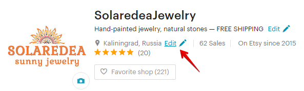
Введите заголовок в соответствующее поле. Внизу, в пункте Google search results
preview, вы увидите, как будет выглядеть ваш текст в Google.
Максимальная длина заголовка – 55 символов.
Как изменить страну и город магазина
Если вы переехали или часто путешествуете, то скорее всего захотите отразить
изменения своего местоположения. Для этого перейдите в режим редактиро-
вания магазина и нажмите кнопку Edit рядом с той страной, которая сейчас ука-
зана.
136

Начните вводить первые буквы вашего города, а затем система предложит вам
подходящие варианты. Не забудьте сохранить изменения.
Если вы изменили только город, без смены страны, тогда в условиях доставки
ничего менять не придется. Но если вдруг вы перемещаетесь между разными
странами, тогда вам нужно снова вернуться в раздел 3 и прочитать вопрос
«Можно ли сделать шаблон для цен на доставку (Shipping Profiles)». Вы можете
создать несколько профилей для каждой страны или внести изменения в поле
Shipping origin, указав в ней ту страну, в которой вы сейчас находитесь.
Стоит ли указывать местонахождение магазина США
Данный вопрос более актуален для магазинов цифровых товаров, так как у них
нет «доставки» товаров и можно выставить любую страну местоположения.
Для покупателей из США товары из американских магазинов показываются в
результатах поиска наравне с товарами из других стран.
Кроме того, американцы не платят дополнительных налогов за покупку элек-
тронных товаров из других стран.
Поэтому указать местонахождение магазина как США ничего не даст в плане
поискового продвижения.
Как сменить язык магазина
При регистрации магазина вы указывали, какой язык сделать основным для ва-
ших товаров. Если вы по ошибке выбрали, например, вместо английского рус-
ский, то очень маловероятно, что вас найдут посетители из США или Канады.
Но вот как это можно исправить.
137


Шаг 1
Добавить новый язык. Для этого перейдите на страницу Shop Manager – Settings
– Languages and translations. После чего нажмите кнопку Start translating your
shop.
У вас откроется окошко, где будет указано, какой язык выбран по умолчанию
(Default). В моём случае это английский, а у вас может быть другой.
Чтобы подключить другой язык, нужно кликнуть на переключатель в правой ко-
лонке (он станет оранжевым) и нажать кнопку Save changes.
138


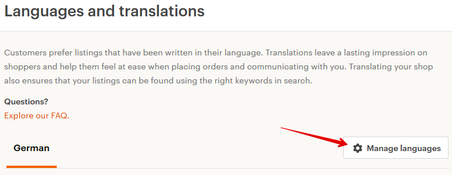
После этого страница перезагрузится и появится список настроек и текстов ма-
газина, которые нужно перевести на подключенный язык: заголовок магазина,
shop announcement, названия секций, сообщение покупателю, FAQ и т.д.
Чтобы вернуться к списку подключённых языков, нажмите кнопку Manage lan-
guages вверху страницы.
Помимо этого, в описании каждого товара добавится по 3 новых поля: заголо-
вок, описание и тэги на новом языке, которые будут показываться покупателям
из данного региона.
139


Шаг 2
После того, как вы продублировали всю информацию на новом языке, вы мо-
жете написать в техподдержку Etsy и попросить их сменить язык магазина с
текущего, например, на английский.
Для этого перейдите на страницу Community & Help – Contact us и выберите
категорию, которая больше всего вам подходит (например, Selling on Etsy –
Managing my shop and listings – Opening and setting up a shop – I still need help –
Email us).
140

После выбора этих пунктов появятся варианты обращения в техподдержку.
Например, это может быть онлайн-чат (Chat with us) или сообщение на Email
(Email us).
Обычно в течение нескольких дней админы Etsy без всяких расспросов меняют
язык магазина (но иногда это происходит дольше из-за большой загрузки тех-
поддержки).
Как сменить валюту магазина
Если вы хотите изменить основную валюту магазина, это можно сделать на
странице Finances – Payment Settings – Currency – Looking to change your shop
currency.
На момент выхода этой редакции книги на Etsy доступно 29 валют.
141

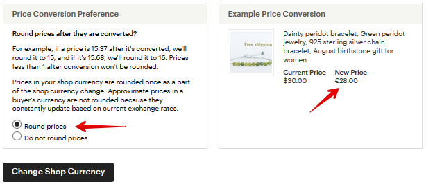
В пункте Price Conversion Preference отметьте, нужно ли округлять ваши текущие
цены до целых значений.
После выбора нужной валюты, нажмите кнопку Change Shop Currency.
В течение часа Etsy сконвертирует ваши цены в выбранную валюту.
Обратите внимание, что ранее созданные купоны по типу «закажи на N тугри-
ков – и получи скидку» больше не будут действовать. Их нужно создать заново.
142

Как округлять цены для покупателей из других стран
На Этси есть покупатели из разных стран. И они могут выбрать в настройках
сайта валюту, в которой им удобно смотреть цены товаров.
В итоге может получиться так, что в долларах изделие стоит ровно $100, а в
британских фунтах стерлингов это будет £78.68.
Etsy могут сделать из такой цифры более «красивую» - например, £79.00.
Чтобы включить такую настройку, перейдите в Settings – Options - Round your
prices for international buyers. И включите данную опцию – Enabled.
Теперь цены в других валютах будут округляться по следующим правилам:
• цены дешевле 1.00 не округляются (в расчёт берётся уже сконвертиро-
ванная цена для покупателя)
• от 1.00 до 4.99 - округляются до 10 центов (например, 1.02 станут 1.10)
• от 5.00 до 9.99 - округляются до .50 или .99 (например, 6.76 станут 6.99)
• цены от 10.00 до 49.99 округляются до .99 (например, 39.05 превратятся
в 39.99)
• цены выше 50 округляются до следующего целого числа (78.68 превра-
тятся в 79.00, как в примере выше)
Что такое популярные листинги (Featured items)
Фотографии товаров, которые располагаются в первой строке товаров мага-
зина, являются как бы ознакомительными, вступительными и призваны завлечь
143


покупателя. Этси предлагают разместить здесь самые популярные листинги, с
максимальным числом просмотров и фаворитов.
У магазинов с подпиской Etsy Plus этот раздел выглядит более заметно (как на
скриншоте ниже).
144
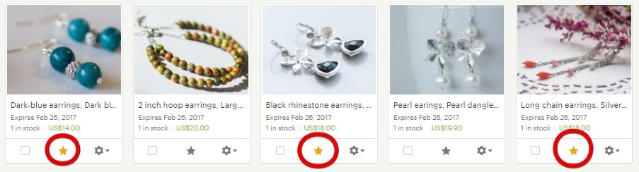

Какие листинги разместить – решать нам, продавцам. Можно периодически их
менять, чтобы внешний вид магазина всегда имел какую-то изюминку и посто-
янным посетителям было видно, что магазин живой, в нём есть активность.
В то же время вы можете не использовать этот раздел – в этом случае после
информации о магазине сразу пойдёт список обычных листингов.
Чтобы поместить товар в категорию Featured items, нужно зайти в меню Shop
Manager – Listings. А затем выбрать 3-4 листинга и нажать звездочку на каждом
из них.
Вы можете выбрать и больше листингов, например, 6 или 10. Те листинги, ко-
торые будут проданы, пропадут из категории Featured items и будут заменены
следующими по очереди.
Чтобы установить порядок показа листингов, нужно перейти в управление по-
пулярными листингами в колонке справа, нажав на ссылку Manage.
145


И перетащить вверх те листинги, которые должны отображаться в текущий мо-
мент (Featured), а внизу оставить запасные (Queued).
Как добавить в магазин секции
Секции – это группы листингов, которые объединены в общий раздел по ка-
кому-то признаку. В магазине они выглядят вот так.
146


Чтобы добавить секции или внести в них изменения, нужно зайти в Shop
Manager – Listings и нажать Sections – Manage.
Чтобы добавить секцию, нажмите Add Section. Чтобы внести изменения в назва-
ние, нажмите на нужную строку и введите новое название. А чтобы поменять
секции местами, возьмите мышкой за крестик и тяните вверх или вниз.
147


Максимальное количество секций – 20.
Секции, в которых нет товаров (стоит цифра 0), в магазине не показываются.
Если у вас есть товары на распродаже, то Etsy помещает их в дополнительную
секцию On sale. Она появляется автоматически, её никак не нужно подключать
(а также нельзя выключить).
148

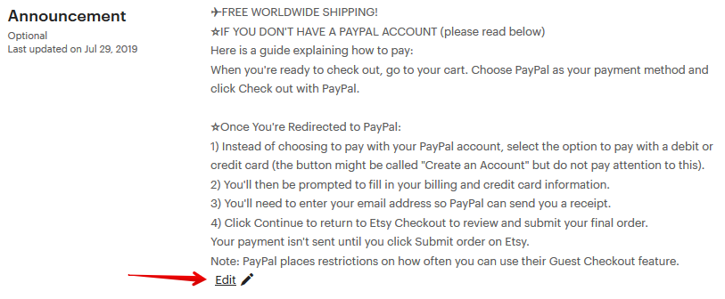
Как добавить объявление магазина (Announcement)
В разделе Announcement вы можете написать любой текст, начиная с краткой
информации о себе и заслугах магазина, заканчивая акциями или отзывами.
Данная информация видна всем посетителям магазина.
Я стараюсь отразить здесь ту информацию, которая будет полезна и интересна
покупателям. Например, код купона на скидку при покупке на определенную
сумму, предстоящие акции или что-то еще.
В самом начале Announcement можно написать что-то такое, что вызовет инте-
рес у посетителя, и он захочет развернуть объявление и прочитать его полно-
стью (Read more).
Как изменить расположение листингов в магазине
Сначала выберите пункт меню Shop Manager — Settings — Options. Выставите En-
abled в пункте Rearrange Your Shop.
149


Затем нужно перейти в раздел редактирования магазина. После чего восполь-
зуйтесь кнопкой Rearrange items над листингами и создайте нужную последова-
тельность – просто меняйте листинги местами или перемещайте их на другие
страницы.
Когда «витрина» создана, завершите изменения кнопкой Exit rearrange mode.
Заданные настройки положения листингов сохраняются независимо от того,
были обновлены листинги или нет.
150
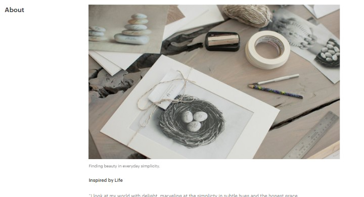
Как изменить раздел About
Администраторы Этси не раз упоминали в своих статьях, что наличие/напол-
ненность About положительным образом влияет на работу поискового алго-
ритма.
В одном из своих интервью разработчики так и сказали, что заполняя About и
Policies (о котором мы поговорим позже), вы получаете приоритет в поисковой
выдаче. Именно поэтому рекомендуем заполнить этот раздел от начала до
конца.
Как обычно, нужно перейти в режим редактирования магазина.
Фотографии и видео
У вас есть возможность загрузить 5 фотографий и 1 видео. К каждой фотогра-
фии вы можете сделать небольшую подпись и пояснить, что именно вы хотите
донести до посетителя. Рекомендую в этом разделе загружать фотографии ра-
бочего места, рабочего процесса, вас за работой. Пусть покупатель прикоснется
к таинству создания ваших изделий и заглянет в закулисье.
История
Обязательно расскажите о себе и о том, как вы пришли на Этси. О том, что вас
вдохновляет, где вы черпаете идеи для своих работ, как отдыхаете. Чем больше
151


информации вы предоставите, тем больший интерес появится у ваших покупа-
телей. Подойдите творчески к этому заданию, пусть эта история не будет ана-
логом резюме, которое мы готовим для собеседования на работу.
Ссылки на ваши профили в социальных сетях
Если вы ведете аккаунт в Инстаграм или Фейсбук или у вас есть свой личный
сайт или блог, где вы рассказываете любопытные вещи и публикуете фотогра-
фии своих работ – смело добавляйте ссылки в раздел Around the web.
У меня есть несколько магазинов, за которыми я слежу с огромным любопыт-
ством в Инстаграм. И именно благодаря этой соц.сети я прониклась их подхо-
дом до такой степени, что совершила покупки в их магазинах на Этси.
Команда
Обязательно укажите в разделе Shop members партнеров, фотографов, моделей
и других постоянных участников магазина, с кем вы сотрудничаете. Загрузите
личное фото каждого, а также расскажите несколько фактов о них. Например,
152

ваш фотограф самый веселый и на каждой фотосессии рассказывает по не-
сколько новых анекдотов.
Местные ярмарки
Если в ближайшее время вы планируете стать участником ярмарок или выста-
вок, можете добавить об этом информацию в разделе Local. Вдруг кто-то из ва-
ших будущих покупателей захочет прийти к вам в гости за покупкой.
Если вы не нашли это мероприятие на карте, добавьте его сами, нажав кнопку
Create an Event.
А затем введите вручную название, даты, адрес и описание.
153

Мне кажется, что такая социальная активность магазина выгодно подчеркивает
его преимущества в глазах посетителей и клиентов.
Как заполнить Shop policies
Правила магазина – один из самых важных разделов магазина. Чем понятнее
вы расскажите о своих правилах и условиях работы, тем меньше вопросов воз-
никнет у покупателя.
У всех продавцов есть возможность заполнить стандартную форму правил, вос-
пользовавшись настройками по умолчанию.
Например, вы можете указать примерные сроки доставки в различные страны
или части света.
154


Для покупателей цифровых товаров указана информация по умолчанию – файл
для скачивания будет доступен сразу после оплаты.
В разделе Payment options у вас будут указаны те способы оплаты, которые до-
ступны именно в вашем магазине.
Я из России и мне доступен только PayPal.
155


Если в вашем магазине есть способ приема оплаты Etsy Payments, то у вас будут
дополнительные иконки.
Отмена заказов и возвраты
Вы можете выставить с помощью переключателей те возможности, которые до-
ступны в вашем магазине (Return – возвраты, Exchanges – обмен товара), а
также установить нужный период времени.
Я выставила 5 дней с момента получения заказа, чтобы покупатель со мной свя-
зался, 14 дней на возврат (именно такой срок установлен Евросоюзом в дерек-
тиве 2011/83/EU о правах потребителя для своих покупателей) и 12 часов —
чтобы покупатель мог отменить свой заказ после оплаты.
Товары, которые не подлежат возврату The following items can’t be returned or
exchanged также остаются на ваше усмотрение.
156
Privacy Policy – конфиденциальность личных данных
Необходимо заполнить данный раздел, если вы продаёте товары жителям Ев-
росоюза (или сами живёте в одной из стран ЕС). Это обязательное требование
в связи с введением GDPR – регламента о защите персональных данных жите-
лей Евросоюза.
Текст для данного раздела вы можете найти в бонусном файле «Пример Privacy
Policy GDPR для Etsy».
После того, как вы ввели все параметры, сохраните изменения кнопкой Save
policies.
Если при сохранении правил Etsy показывает ошибку – попробуйте сначала
сохранить их с незаполненным разделом Privacy Policy. Если всё получится –
отредактируйте его и внесите нужный текст.
Можно ли написать свой текст в Policies
Магазины, открытые до 5 апреля 2016 года, имеют возможность публикации не
только стандартных, автоматических правил, но и расширенных, подробных.
Чтобы переключиться на них, вам нужно спуститься в самый низ Shop policies (в
режиме редактирования правил) и нажать на ссылку Use previous policies.
157

Затем у вас скорее всего появится вот такое диалоговое окно, в котором нужно
нажать кнопку Ok.
И теперь перепроверьте, какой формат у вас стал отображаться. Я вижу у себя
расширенные правила.
Если вы регистрировали магазин после 5 апреля 2016 года, тогда вам доступен
только стандартный, автоматический формат.
158

Как заполнить раздел часто задаваемых вопросов (FAQs)
Еще один раздел, который относится к Policies, но в тоже время является само-
стоятельным и отображается под описанием каждого листинга – часто задава-
емые вопросы (Frequently asked questions или FAQs).
Если вы хотите рассказать покупателям о дополнительных возможностях и пра-
вилах вашего магазина, внесите эту информацию в раздел More information.
Вы можете использовать стандартные вопросы или создать базу своих. Для
этого нажмите +Add an FAQ и выберите в выпадающем списке нужный вопрос,
а в появившемся поле напишите ответ.
Пункт Custom в нижней строке выпадающего меню означает, что вы самостоя-
тельно вводите как вопрос, так и ответ.
159


Как создать шаблоны сообщений для покупателей
Чем больше заказов становится, тем чаще мы общаемся с покупателями. Но,
обычно, это какие-то стандартные фразы: заказ отправлен, получен ли заказ,
понравился ли товар и т.п.
На Etsy можно упростить переписку с клиентами и сохранить часто используе-
мые фразы как шаблоны.
Чтобы создать шаблон для личной переписки (раздел Messages), откройте лю-
бой диалог, прокрутите страницу вниз, напишите текст сообщения и нажмите
левую нижнюю кнопку All Saved Replies.
После этого вы можете выбрать один из готовых шаблонов ответов, которые
подготовили Etsy, или создать свой собственный (для этого нажмите Add new –
Saved Reply).
После этого введите название шаблона, текст сообщения и категорию, к кото-
рой хотите отнести данный ответ.
160


Теперь, когда вам понадобится быстро написать сообщение покупателю, снова
нажмите кнопку All Saved Replies и выберите нужный ответ – он подставится в
то место текста, где стоит курсор.
Здесь же будут показываться часто используемые шаблоны ответов, на которые
можно кликнуть сразу.
Чтобы отредактировать какой-то шаблон, снова перейдите к списку готовых от-
ветов с помощью кнопки All Saved Replies. Если вы хотите удалить шаблон, то
нажмите на иконку с корзиной. А чтобы изменить текст или название – клик-
ните на значок карандаша.
161
Как создать автоответчик для сообщений покупателей
В магазине можно настроить автоматическое сообщение, которое посетители
получат в ответ на своё новое сообщение вам. Удобно использовать эту
настройку в ночное время или в период, когда вы находитесь в поездке и не
можете быть на связи.
Для этого перейдите в раздел Messages и нажмите кнопку Auto-reply в правом
верхнем углу.
В открывшемся окне вы можете:
• включить (On) и выключить (Off) автоответчик
• написать текст сообщения, которое получит потенциальный покупатель
• указать в часах, как долго будет работать автоответчик
Автоответчик можно включить максимум на 5 дней.
162

Как заполнить личный профиль
Личный профиль – это почти тоже самое, что и раздел About, но только лично
о вас. Чтобы сразу понять, о чем идет речь, перейдем в меню You – View profile
– Edit profile.
В этом разделе вы можете изменить ваш аватар, имя, местоположение, дату
рождения и личную историю.
Здесь же вы можете включить или отключить возможность отображения разде-
лов Shop, Favorite items, Favorite shops, Treasury lists, Teams на странице профиля,
поставив или убрав галки.
Также вы можете прописать любимые материалы, которые используете в со-
здании ваших товаров.
163

Все эти разделы имеют активные ссылки. Именно поэтому, как вы видите, они
у меня не заполнены. Я сделала это умышленно, чтобы исключить ситуацию,
когда покупатель заходит в мой личный профиль, переходит в какой-то из раз-
делов и затем покидает мой магазин, т.к. увлёкся моими избранными товарами
или избранными магазинами.
Вот так отображается профиль, в котором есть только одна активная ссылка –
на собственный магазин (справа).
А вот так выглядит магазин, в котором все ссылки активны.
Как использовать Shop Updates
В данном разделе можно публиковать записи пользуясь специальным прило-
жением для мобильных устройств. Скачать его можно здесь:
164


Android https://play.google.com/store/apps/details?id=com.etsy.android.soe
iOS https://itunes.apple.com/us/app/sell-on-etsy/id860815329?mt=8
После того, как вы установили приложение, авторизуйтесь и выберите пункт
More – Marketing – Social Media – Shop Updates.
Нажмите на значок фотоаппарата в правом верхнем углу.
Затем сделайте фото или загрузите существующее.
Теперь кликните на сфотографированный товар и привяжите к нему любой ак-
тивный листинг в вашем магазине (листинг должен быть добавлен заранее).
165

Затем разместите на картинке оранжевый ярлык, чтобы было понятно, что
именно вы рекламируете.
А после добавьте описание. Нажмите Done, а затем Share on Etsy.
После этого вы можете опубликовать новость в любой социальной сети, прило-
жение которой установлено на вашем мобильном устройстве.
Если вы хотите удалить какое-то обновление, вам нужно кликнуть на него в ва-
шем телефоне и выбрать Delete.
После этого на всякий случай проверьте, было ли оно удалено.
166

Что такое Etsy gift card
Подарочные карты, или Etsy Gift Cards — это подарочные сертификаты, которые
можно приобрести вместо конкретного товара. А человек уже сам решает, на
что ему потратить этот сертификат среди всех тех магазинов, которые прини-
мают эту услугу.
К сожалению, принимать подарочные карты могут только магазины, у которых
подключена система приема платежей Etsy Payments. Те магазины, которые
принимают подарочные карты, имеют в своих Policies вот такой значок:
Подарочную карту можно приобрести только в пяти валютах: евро, фунты стер-
лингов, американские, канадские или австралийские доллары.
Для того, чтобы приобрести карту, нужно перейти по ссылке
https://www.etsy.com/giftcards и в соответствующих графах ввести нужные дан-
ные получателя.
Подарочные сертификаты бывают только 4-х номиналов, например, $25, $50,
$100 и $250.
167

Если покупатель приобрел товар, стоимость которого ниже, чем номинал пода-
рочной карты, то остаток баланса будет находиться на карте для будущих по-
купок. Если же стоимость товара выше — то разницу в цене нужно доплатить
самостоятельно (при помощи Etsy Payments).
Подарочной картой нельзя оплачивать счета/комиссии Etsy, приобрести за её
счет другую подарочную карту или совершить покупку в магазине, который не
принимает к расчету Etsy Gift cards.
Что такое Taxpayer ID в настройках магазина
В феврале 2017 года у российских продавцов (а с марта 2018 также у беларус-
ких) в настройках магазина появилась настройка VAT ID (Finances – Legal and
tax information).
Это аналог ИНН (индивидуальный номер налогоплательщика). Раньше его тре-
бовалось указывать только жителям Евросоюза.
Суть в том, что если вы работаете как юридическое лицо и отчисляете в нало-
говую службу НДС (налог на добавленную стоимость), то здесь необходимо ука-
зать свой ИНН.
Если же вы не отчисляете этот налог (или же не имеете юридической регистра-
ции), то Etsy взымают НДС с комиссий, которые вы им платите, и сами перечис-
ляют его в налоговую службу вашей страны.
Для России и Беларуси НДС составляет 20%.
Что это означает на деле. Если вы платите 20 центов за размещение листинга,
то дополнительно должны заплатить ещё 4 цента НДС (20% от 20 центов). Если
168

комиссия с продажи товара составила 1 доллар, то дополнительно нужно пере-
числить Этси ещё 20 центов (20% от 1 доллара).
С 2019 года НДС-налог для россиян взымается вне зависимости от того, указан
ИНН на Etsy или нет.
Можно ли привязать магазин к другому PayPal-аккаунту
Да, это можно сделать в настройках магазина Finances – Payment Settings – Pay-
ment methods.
Как указать, что в магазине есть сотрудники/помощники
Если у вас есть сотрудники или партнёры, которые помогают с магазином, то их
необходимо добавить как членов команды.
Для этого перейдите на главную страницу магазина и нажмите кнопку Edit shop.
После этого прокрутите страницу до пункта Shop Members.
169


Чтобы добавить нового члена команды, нажмите кнопку Add another shop
member bio.
После этого в открывшемся окне загрузите фотографию человека, укажите его
имя, роль в магазине, текстовое описание.
Какие роли могут быть у членов команды
Для своих партнёров/помощников вам необходимо указать роль, которую они
выполняют в магазине.
Etsy предлагает следующие варианты:
• Owner – владелец магазина. Он должен сам участвовать в процессе со-
здания товаров. Он отвечает за весь магазин.
170
• Assistant – помощник. Помогает с производством товаров или ведением
магазина.
• Curator – куратор выбирает товары, которые продаются в магазине. Эта
роль доступна для магазинов винтажа или материалов для рукоделия.
• Customer Service – человек, который помогает владельцу общаться с по-
купателями.
• Designer – дизайнер товаров. Ключевая роль для handmade-товаров.
• Maker – тот, кто физически создаёт товары.
• Marketer – маркетолог помогает рекламировать магазин.
• Photographer – фотограф.
• Shipper – человек, который помогает упаковывать и отправлять товары.
• Add Custom – если ничто из вышеперечисленного вам не подходит, то
придумайте роль самостоятельно.
В этом разделе можно не указывать фрилансеров, то есть людей, которые вы-
полняют какую-то работу от случая к случаю.
Например, если вы попросили знакомого фотографа сделать снимки ваших но-
вых товаров, то его не нужно указывать как члена команды. Но если это ваш
штатный фотограф, то добавьте его в раздел Shop members.
Может ли в магазине быть несколько владельцев (owner)
Технически нескольким членам команды можно назначить роль Owner.
На Etsy есть статья, в которой указано, что владельцев магазина может быть
несколько. Каждый должен быть продавцом и быть дизайнером или создателем
handmade-товаров.
Но вот как однажды прокомментировал этот вопрос один из админов Этси: «В
настоящий момент Etsy не разрешает совместное владение магазином. Это про-
тив правил площадки. Авторство и дизайн всех товаров в магазине должны при-
надлежать только одному человеку».
171

Можно ли добавить помощника, который будет заходить со
своего компьютера
Вам необходимо добавить помощника в список членов команды магазина Shop
members, указав его имя и фотографию, а также роль, которую он будет выпол-
нять (например, Customer Service). После этого он сможет заходить в магазин
из-под вашего аккаунта (на Etsy заходить в магазин можно только из под акка-
унта владельца).
Если помощника не указать в настройках, то есть вероятность, что Этси может
заблокировать магазин.
Сколько может быть членов команды в магазине
На Etsy нет ограничений на количество сотрудников магазина. Можете доба-
вить как одного, так и двадцать участников.
Как указать компанию, которая помогает производить то-
вары
На Etsy можно указать не только членов команды, но и компании, которые по-
могают в производстве товаров.
Эти компании делают что-то по вашему заказу. Например, печатают, отшивают,
режут на станке и т.п. в соответствии с вашим дизайном. Если вы покупаете в
магазине готовые материалы (например, ткань, нитки, бусины), то это не парт-
нёр по производству.
Добавить партнёра можно при добавлении/редактировании листинга.
172

Далее необходимо указать информацию о компании: название, местоположе-
ние и описание той помощи, которую вам эта компания оказывает.
Если выключить оранжевый переключатель, то покупатели не увидят название
партнёра. Вместо этого вы можете написать лишь общее описание, например,
«Швейная фабрика».
Чуть ниже нужно указать данные о партнёрстве, которые видят только сотруд-
ники Etsy.
173
Why are you working with this partner? (Почему вы работаете с этим партнёром):
• I don’t have the technical ability or equipment to make it entirely by myself
(у меня нет технической возможности или оборудования, чтобы делать
всё самостоятельно)
• I have outgrown my current production space (я перерос размеры своей
студии/мастерской)
• I need help meeting demand for this product (мне нужна помощь, чтобы
удовлетворить спрос на этот товар)
• Other (другое)
What is your role in the design process? (Какова ваша роль в процессе дизайна
товара):
• I design everything myself (дизайн целиком мой)
• I design everything, but get technical help (дизайн целиком мой, но мне
нужна техническая помощь)
• I collaborate with my shop members to design my products (мы делаем ди-
зайн вместе с членами команды)
• I have an idea, and work with independent designers to realize it (у меня
есть идеи, над которыми мы работаем с независимыми дизайнерами)
• I collaborate with my production partner to design my products (мы делаем
дизайн в сотрудничестве с партнёром)
• I contract with independent designers and have rights to their work (я за-
ключаю договор с независимыми дизайнерами, все права принадлежат
мне)
174
What is this partner’s role in the production process? (Какова роль вашего парт-
нёра в процессе производства):
• They make a component of my product, and I do the rest (они производят
часть товара, остальное делаю я)
• They create a finished product that I then alter/customize (они делают го-
товый товар, который я потом видоизменяю)
• They create a finished product, then I add branding and packaging (они про-
изводят готовый товар, а я его упаковываю и добавляю элементы бренда)
• They do everything for me (они всё делают сами)
После выбора всех полей нажимаем Save partner и сохраняем партнёра.
Теперь при добавлении/редактировании листинга вы увидите список добав-
ленных партнёров. Отметьте галочкой тех, кто участвовал в создании выбран-
ного товара.
Отредактировать или удалить партнёра можно на странице Shop Manager —
Settings — Production partners.
Как изменить часовой пояс магазина
Если вы хотите, чтобы графики посещаемости в магазине показывали инфор-
мацию не по времени США, а по вашему часовому поясу, то нужно изменить
временную зону.
Для этого зайдите на страницу Settings – Options и выберите страну и город.
175


После этого все графики перестроятся на новый часовой пояс.
Как отправить магазин в отпуск
Если ваш отпуск краткосрочный (например, несколько дней или неделя), то вы
можете увеличить время на отправку в Shipping Profile и дополнительно сооб-
щить, например, в Announcement, что сможете отправить заказы после такой-то
даты.
Если же вы уезжаете надолго (2 недели, месяц), то можно перевести свой мага-
зин в режим отпуска. Для этого перейдите в меню Shop Manager – Settings –
Options.
Далее выберите вкладку Vacation Mode и выставите значение On в первом па-
раметре.
Чуть ниже стоит написать текст (Vacation Announcement), который увидят посе-
тители вашего магазина (например, что вы в отпуске и вернётесь в такой-то
день).
176


И второе поле Messages Auto-Reply – автоответчик, то есть сообщение, которое
получат люди, написавшие вам личное сообщение.
Нажимайте кнопку Save – и всё, магазин «на каникулах».
Теперь, при переходе в него вы увидите текст из поля Vacation Announcement и
кнопку Email me when they're back (уведомить, когда магазин снова откроется).
А если зайти в любой листинг (например, при переходе из Favorites), то он будет
выглядеть так: сверху видна фотография товара и его заголовок, а снизу
надпись о том, что магазин взял небольшой перерыв. Кнопка Sign up for Updates
перебросит посетителя на главную страницу магазина.
177

По возвращению из отпуска не забудьте вернуть параметр Vacation Mode в ре-
жим Off.
Обращаю внимание, что в настоящее время отправка магазина в отпуск может
негативно сказаться на рейтинге листингов – скорее всего они потеряют пози-
ции в поиске, так как не будут показываться в поисковой выдаче в это время.
Как закрыть магазин
Если вы решили закрыть магазин, то для этого перейдите в меню Shop Manager
– Settings – Options и откройте вкладку Close Shop.
Если у вас есть неоплаченные счета или открытые кейсы, то Etsy не даст вам
закрыться.
Если же всё в порядке, то Этси задаст несколько вопросов о причинах закрытия
– и в течение 30 минут магазин пропадёт с радаров поиска и покупателей.
178

Если вы спустя какое-то время решите снова открыть магазин, то для этого пе-
рейдите в раздел меню You – Account settings – Your Closed Shop и выберите
Reopen Shop.
Вся информация и листинги останутся в том же виде, как вы их оставили.
Как сменить email магазина
Если вы хотите изменить электронную почту магазина, то перейдите на стра-
ницу You - Account Information/Account Settings.
Здесь в разделе Email вы увидите:
• Текущую почту (Current email)
• Статус почты (Status) – подтверждено (confirmed) или нет
• Затем дважды введите адрес новой почты – в поле New Email и Confirm
New Email
• И последнее – необходимо ввести текущий пароль от магазина (Your Etsy
Password)
После этого нажмите кнопку Change Email.
179


После этого зайдите в свою почту и проверьте письмо от Etsy. Там нужно будет
нажать на кнопку Confirm your email – подтвердить новый электронный адрес.
Как сменить пароль от магазина
Чтобы сменить пароль для входа в магазин, перейдите на страницу You - Account
Information/Account Settings.
Введите свой текущий пароль (Current Password), и дважды напишите новый
(New Password и Confirm New Password). После этого нажмите кнопку Change
Password.
180

Что делать, если забыл(а) пароль от магазина
Если вы забыли пароль, но у вас есть доступ к электронной почте, к которой
привязан магазин, то можно сделать следующее.
Перейдите по следующей ссылке:
https://www.etsy.com/forgot_password.php
На этой странице введите электронную почту магазина. Туда придёт письмо со
ссылкой для сброса пароля. После чего откроется страница, где нужно ввести
новый пароль.
После этого снова проверьте электронную почту и с помощью нового письма
подтвердите изменение пароля.
Как защитить аккаунт магазина
Для многих Etsy-магазин – это основной источник дохода. Поэтому важно за-
щитить его от возможного взлома или кражи паролей.
Для этого перейдите на страницу You - Account Information/Account Settings – Se-
curity.
Здесь вы можете настроить двухфакторную аутентификацию – кроме ввода ло-
гина-пароля для входа в магазин понадобится сделать ещё одно действие.
• получать специальный код в мобильном приложении Etsy (Authenticator
App)
• получить СМС-код (SMS)
• получить код с помощью звонка на телефон (Phone)
181


Кроме того, вы можете сохранить себе на компьютер (или в другое безопасное
место) бэкап-коды (Backup Codes), которые можно будет ввести, если вы поте-
ряете доступ к устройству, куда приходят спецкоды для аутентификации.
Выберите среди этого тот вариант, который вам больше всего удобен.
Также на этой странице вы можете включить оповещение на email при каждом
входе в ваш Etsy-аккаунт (Security Settings). И если это будете не вы, то сразу
можно быстро отреагировать и, например, сменить пароль или написать Etsy.
А ещё чуть ниже – список последних авторизаций (Sign In History) и устройств,
с которых заходили в магазин (Device History).
182
5. Основы Etsy SEO (продви-
жение магазина)
Как работает поиск Etsy (Etsy SEO). Что влияет на позиции
Точные правила, по которым работает поиск Этси, известны только админи-
страции площадки. Продавцам остаётся лишь строить догадки и внимать под-
сказкам, которые сообщают представители площадки.
В настоящий момент Etsy заявляет, что на позиции вашего товара в поиске вли-
яют следующие факторы:
• заголовок
• тэги
• атрибуты
• дата добавления/обновления листинга
• цена товара
• условия доставки
• рейтинг магазина
• рейтинг листинга
• жалобы на магазин
• страна магазина (в некоторых случаях)
• возраст магазина/листинга (в некоторых случаях)
Вся проблема в том, что никто не знает, как сильно и в какой степени влияют
каждый из этих параметров на позиции.
Заголовок и тэги должны быть релевантны поисковому запросу покупателя. То
есть, если человек ищет «красный вязаный шарф», то в заголовке и тэгах ли-
стинга должна присутствовать эта фраза – иначе ваш листинг окажется далеко
позади конкурентов (стоит учесть, что этот момент также зависит от количества
конкурентов по искомой фразе).
Атрибуты товара – дополнительные параметры листинга, которые работают
примерно как тэги. Например, если покупатель ищет в поиске «синий шарф»,
183
то в поиск попадут в том числе товары, у которых атрибут «Цвет товара» будет
указан как «синий».
Чем новее ваш листинг, тем больше шансов, что он окажется выше конкурентов.
Поэтому имеет смысл периодически обновлять ваши товары (делать Renew).
Нередко бывает, что чем дороже товар (относительно листингов конкурентов),
тем он дальше в поиске. Отчасти это может быть из-за того, что более дешевые
товары чаще покупают, а потому их показывают выше.
Со слов Etsy, положительно сказывается на позициях наличие бесплатной до-
ставки товара.
С 30 июля 2019 года, если у товаров была бесплатная доставка в США (сразу
или при заказе от 35 долларов и выше), то изделия получали небольшой прио-
ритет в поисковой выдаче для жителей США. Правда через несколько месяцев
после этого нововведения для большинства поисковых запросов приоритет пе-
рестал работать.
Чем выше средняя оценка отзывов в магазине, тем лучше позиции листингов.
Это и логично – Этси старается показывать покупателям только проверенные и
заслуживающие доверия магазины.
Под рейтингом листинга админы подразумевают количество просмотров, до-
бавление в избранное (фавориты) и покупки товаров. Например, если ваш то-
вар часто покупают – значит он качественный и отвечает запросам покупате-
лей. А, следовательно, его стоит показать повыше.
Если покупатели недавно открывали споры с вами и вашим магазином, а также
на вас жаловались за нарушение авторских прав – то это может негативно ска-
заться на ваших позициях.
Для покупателей из Канады, Австралии, Великобритании, Германии и Франции
(а также некоторых других стран Евросоюза, например, Голландии) по некото-
рым фразам чуть выше показываются товары из их местных магазинов.
Также Etsy подтвердждали, что на короткое время поднимают в результатах
поиска новые магазины (их листинги), чтобы дать им шанс совершить первые
продажи. А затем «возвращают» их на то место, которое они «должны» зани-
мать.
184
На позиции может также повлиять степень «заполненности» вашего магазина
– есть ли у вас Policies, раздел About и т.п.
Так как никто достоверно не знает, что именно и в какой степени влияет на
позиции, остаётся только планомерно и постепенно улучшать все составляю-
щие Etsy SEO.
Как писать заголовки листингов
Самое главное правило, которое нужно учесть при составлении заголовков
(title) листингов – в них должны быть фразы, которые вводят в поисковой
строке покупатели Etsy. Например, если вы продаёте кошачьи домики из шер-
сти, то в названии желательно прописать фразу «wool cat bed» или «cat bed
wool».
Обращаю внимание, что для части поисковых запросов (чаще всего популяр-
ных) порядок слов также имеет значение. Выше (при условии, что другие пара-
метры равны) чаще всего будет тот листинг, у которого фраза содержится в за-
головке точно так, как покупатель её написал в строке поиска.
Также Etsy советует основной поисковый запрос писать ближе к началу заго-
ловка листинга.
Постарайтесь при помощи мозгового штурма или других техник придумать мак-
симум фраз, которые люди могут вводить в строку поиска:
• цвет изделия
• размер
• повод (свадьба, день рождения)
• материал
• и т.п. (бонусный файл «Чек-лист поиска фраз для заголовков и тэгов»)
Максимальная длина заголовка – 140 символов.
Как писать тэги листингов
Для тэгов действует то же самое правило, что и для заголовков листинга – в них
должны быть фразы, которые покупатели вводят в поиск. И выше в поиске чаще
185
всего будут именно те листинги, где фраза присутствует как в заголовке, так и
в тэгах (особенно важно для популярных запросов).
То есть, если и в заголовке, и в тэгах будет фраза «cat bed wool», то ваш листинг
по этому поисковому запросу должен быть достаточно высоко в поиске.
Вы можете добавить для каждого листинга 13 тэгов. Рекомендую заполнять их
все – чтобы увеличить шансы быть найденным.
В идеале, поисковый запрос должен содержаться в тэге целиком. Но тэг не мо-
жет быть длиннее 20 символов (для английского языка).
Соответственно, если ваш поисковый запрос не умещается в эту длину, попро-
буйте разбить его на несколько тэгов. Например, фразу «dark blue dangle ear-
rings» можно разбить на тэги «dark blue earrings», «blue dangle earrings» и т.п.
Постарайтесь, чтобы тэги были в 2-3 слова. Это лучше, чем будет 4 тэга по 1-му
слову «dark», «blue», «dangle» и «earrings».
Влияет ли страна магазина на позиции в поиске
На данный момент есть минимум 6 стран, покупателям которых в результатах
поиска в приоритете показываются товары из их страны, а потом – все осталь-
ные. Это Канада, Австралия, Великобритания, Германия, Франция и Голландия.
Для покупателей из других регионов поисковые результаты одинаковы.
Это касается физических товаров.
Если же у вас цифровой товар, то результаты поиска одинаковы для всех стран.
То есть цифровые товары из Германии не будут показаны выше для немцев.
Почему я не могу найти свой листинг в поиске
Для начала нужно понять, не наложены ли на ваш магазин какие-либо «санк-
ции» со стороны Этси. Для этого введите в строку поиска целиком название
вашего листинга (или большую его часть). Если листинг нашёлся – значит с ним
всё в порядке.
186

Причина 1 – высокая конкуренция
Теперь важно понять, почему вы не можете найти свой листинг в поиске. Чаще
всего причина в том, что он находится на очень дальних страницах. Например,
вы вводите фразу «red dress» и надеетесь, что ваш свежедобавленный товар
будет где-то наверху. Но давайте посмотрим, сколько у вас конкурентов по
этому запросу.
170 000 конкурентов! И это не всё. Обратите внимание на параметры поиска
слева. По умолчанию, Etsy показывает вам только те товары, которые могут
быть отправлены в вашу страну.
Если учесть, что основная часть покупателей живёт в США, то для чистоты экс-
перимента стоит указать здесь United States и посмотреть, что произойдёт с
числом конкурентов.
187

Их стало ещё больше. Вы конкурируете со 223 000 товаров со всего света! Не
удивительно, что ваш листинг может находится далеко от первых страниц ре-
зультатов поиска.
Чтобы избежать такой ситуации, следует продвигаться по менее конкурентным
запросам. Например, «long red dress» (38 000 конкурентов) или «red long sleeve
dress» (26 000 конкурентов). Да, такие запросы ищут не так часто. Зато и конку-
рентов у вас куда меньше.
Причина 2 – плохие заголовки и тэги
Ещё одна причина может быть в том, что у вас плохо составлены заголовки и
тэги. Например, листинг с красным платьем у вас озаглавлен «Christmas dress».
Да, оно красное и подходит для Рождества. Но если вы хотите, чтобы платье
находили по запросу «red dress» или «long red dress», то именно эти фразы
должны быть в заголовке вашего товара.
То же самое касается и тэгов. Не стоит писать их отдельными словами «red»,
«dress» и «long» - сделайте тэги из 2-3 слов («red dress» и/или «long red dress»).
Причина 3 – русский язык магазина
Также очень частая проблема. Вроде и заголовки составлены хорошо, и тэги
идеальны – но товар всё равно никак не находится и просмотров нет. Всему
виной – язык магазина, который вы выбрали при регистрации. Если вы указали
там не английский – просмотры из поиска будут незначительными.
188


Как понять, ваш ли это случай? Перейдите в раздел Shop Manager – Settings –
Languages and translations. Нажмите кнопку Start translating your shop.
Перед вами откроется список языков, включеных в вашем магазине. Посмот-
рите, у какого из них указано Default (по умолчанию).
Если это не английский English, то вам нужно:
1) добавить в магазин дополнительный язык (английский) и продублировать
все свои тексты на нём
2) написать админам Etsy и попросить поменять основной язык вашего ма-
газина на английский – обычно спустя пару дней сотрудники Etsy выпол-
няют эту просьбу.
Можно и не писать админам, а просто подключить английский язык в магазине
(как второй, дополнительный). После этого при добавлении/редактировании
каждого листинга у вас появится 3 новых поля: English title, English description и
English Tags. Скопируйте сюда текст из соответствующих «оригинальных» полей
(для удобства Etsy приводит их справа).
189

Сохраняйте листинг – и можете проверять поиск. Теперь ваши товары смогут
найти англоязычные покупатели!
Почему я не могу найти свой магазин в поиске
Если вы не можете найти через поиск Этси не только свои листинги, но и мага-
зин целиком, то дело может быть в том, что Etsy сомневается в оригинальности
ваших товаров (т.е. в том, что их делаете именно вы).
Чтобы это исправить, свяжитесь с ними через раздел Help и расскажите о том,
что вашего магазина нет в поиске, спросите, в чём может быть проблема.
Если дело именно в вышеописанной причине, то админы попросят вас прислать
доказательства того, что вы – автор товаров. Например, они могут попросить
прислать фотографии процесса работы, ваше рабочее место и т.п. Если у вас
всё в порядке с этим, то вскоре ваш магазин появится в поиске.
Хочу отметить, что каждый новый магазин проходит проверку на соответствие
всем правилам. Поэтому важно уже с самого начала не допускать ошибок.
190

Как узнать, показывает ли Etsy мой магазин покупателям
Это проще всего проверить, если ввести в поиске Etsy название магазина и
нажать «find shop names containing».
Кроме этого, можно ввести в поиск заголовок недавно добавленных листингов.
Можно даже не в глобальный поиск по всему Etsy, а в строке поиска по мага-
зину. Если товар не найден (а с момента добавления прошло уже несколько
дней) – значит, скорее всего, ваш магазин попал под «санкции» Etsy.
Необходимо связаться с админами Etsy и уточнить причину, почему ваши то-
вары или весь магазин не показываются в поиске.
Как узнать позиции своего листинга
Позиции ваших листингов по нужным запросам можно узнать с помощью сто-
ронних сайтов и сервисов. Но с ними есть проблема – позиции в них могут
отличаться от реальных (иногда очень сильно). Поэтому полученные результаты
будут приблизительны.
К тому же, на Etsy работает персонализированный поиск. Он подстраивается
под конкретного посетителя, и поэтому позиции товаров могут отличать от че-
ловека к человеку.
Есть несколько сервисов, которые помогают отслеживать позиции листингов. Я
чаще всего использую сайты EtsyGadget http://etsygadget.com/en/search/ и
eRank https://erank.com/
191
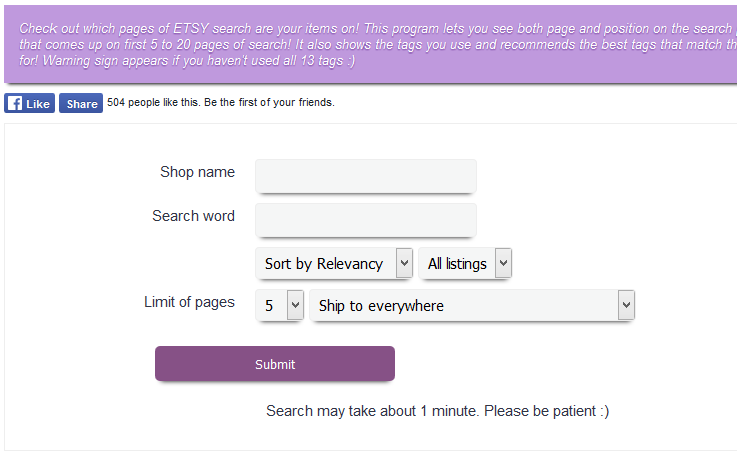

Например, в EtsyGadget нужно ввести следующие данные:
• название магазина (Shop Name)
• поисковый запрос (Search word)
• выбрать стандартную на Этси сортировку по релевантности (Sort by Rele-
vancy)
• выбрать количество страниц результатов поиска, которые проанализи-
рует система – от 5 до 20 (Limit of pages).
• и страну доставки (United States)
После этого нажимаем кнопку Submit и терпеливо ждём. Чем больше страниц
выбрано для анализа, тем дольше ждать.
Если EtsyGadget не найдёт ни одного вашего листинга, то он покажет подобный
текст.
192

А в случае успеха вы увидите список ваших товаров и информацию о том, на
какой странице и позиции они находятся.
Чтобы перепроверить позиции найденного листинга, можно нажать на указан-
ный справа номер страницы (в данном случае Page# 1) и вы будете перенаправ-
лены на сайт Этси.
Обратите внимание: если на указанной EtsyGadget странице нет вашего ли-
стинга, тогда стоит проверить соседние.
Как узнать фразы, которые люди вводят в поиске
В настоящий момент у Etsy нет собственного сервиса статистики ключевых
фраз, поэтому подбирать фразы для заголовков приходится множеством спо-
собов. Опишем те, которыми пользуемся сами.
Вариант 1 – поисковые подсказки Etsy
Когда вы начинаете что-то писать в строку поиска Etsy, система предлагаем вам
подсказки. Это фразы, которые чаще всего ищут покупатели Этси в последнее
время. Чем выше фраза – тем более популярен запрос.
И в зависимости от того, что вы вводите, меняются и сами подсказки.
193


Вариант 2 – поисковые подсказки Google
Также подсказки можно искать через строку поиска Google. Но предлагается
слишком мало вариантов за раз. Поэтому лучше использовать сторонние сер-
висы, которые уже заранее собрали такие подсказки у Google. Например, сайт
https://keywordtool.io/ из варианта 3.
Вариант 3 – сайт keywordtool.io
Суть этого сайта в том, что он перебирает все возможные подсказки в поиско-
вой строке Google и выдаётся вам сразу все результаты. Причём ещё подстав-
ляет перед и после вашей фразы все буквы алфавита и смотрит, что Гугл пред-
ложит на это.
194


Вариант 4 - Google Adwords Keyword Planner (Планировщик ключевых слов)
Этот полезнейший инструмент находится здесь:
https://ads.google.com/intl/ru_ru/home/tools/keyword-planner/
Причём вы можете не только найти идеи для новых фраз, но и узнать их стати-
стику – как часто люди вбивают эти слова в поиск Google.
Вы можете выписать все найденные ключевые фразы, а потом проверить, какие
из них наиболее популярны (и менее конкурентны).
195
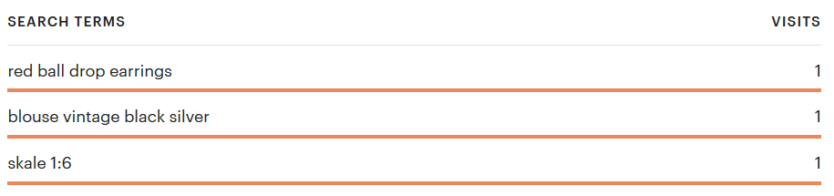
Вариант 5 – анализ листингов конкурентов
Это тоже хороший способ, если вы хотите найти новые запросы для своих то-
варов. Особенно полезно это упражнение для тех, кто плохо знаком с англий-
ским языком и специфичными терминами, которые описывают ваш товар.
Например, русскоязычный человек знает, что шапка по-английски – это «hat».
Но, посмотрев листинги конкурентов, можно наткнуться на такие слова, как
«beanie», «cap» и т.п.
Ищите такие слова и фразы в заголовках листинга, а также в тэгах и описании
товаров.
Вариант 6 – реклама в Etsy Ads
Когда вы запускаете на Этси рекламную кампания (Etsy Ads), то постепенно у
вас накапливается статистика фраз, вводя которые люди видели ваши листинги.
Этот вариант не очень удобен, по сравнению со всеми остальными, потому что:
• на сбор данных может уйти довольно много дней и даже недель
• Etsy показывает только те запросы, по которым было больше 5 показов
ваших листингов
• поисковые фразы основываются на заголовках, которые у вас есть сейчас
– поэтому вы вряд ли получите очень много новых идей
Вариант 7 – статистика ключевых слов магазина
Если ваш магазин работает уже какое-то время и у вас есть просмотры листин-
гов, то вы можете посмотреть статистику ключевых слов, по которым к вам за-
ходили.
Они также основаны на тех ключевых фразах, которые уже у вас прописаны в
заголовках и тэгах. Но иногда попадаются и полезные идеи.
196

Вариант 8 – инструмент Search Analytics
В разделе Marketing – Search Analytics вы можете посмотреть все фразы, по ко-
торым покупатели на Etsy видели ваши товары в поиске.
Здесь можно найти довольно много фраз, о которых вы раньше не задумыва-
лись.
Как в итоге выбрать подходящие поисковые фразы
Я основываюсь на двух параметрах:
• число запросов фразы в месяц (по данным Google или других сайтов)
• число товаров в поиске Этси по этой фразе
Соответственно, первый параметр – это спрос. А второй – предложение. Наша
задача – найти их идеальное соотношение. То есть найти поисковые запросы,
где мало конкурентов, но при этом их ищут достаточно часто.
Чем меньше конкурентов, тем проще пробиться на первые страницы результа-
тов поиска.
Например, если у вас 50 000 конкурирующих листингов, то ваш товар может
затеряться где-то на 7-8 странице или дальше. Не очень многие покупатели
дойдут до этой страницы. И ещё меньше заметят ваш товар среди остальных.
Чаще всего, если по запросу Etsy находит меньше 10 000 товаров, то довольно
просто оказаться на 1-3 страницах поиска. А если меньше 5 000 – то и в самом
верху первой страницы. Хотя, повторюсь, что каждый запрос и каждая ситуация
уникальны. Это лишь общий вывод из моей практики.
197
И второй важный параметр –как часто данную фразу вводят в поиске покупа-
тели. Этси не показывают нам свою статистику – и мы точно не знаем, как часто
ищут ту или иную фразу на этой площадке. Единственное, что мы можем – это
брать статистику из Google. При этом понимая, что если там написано 1000, то
это вовсе не значит, что и на Etsy фразу ищут 1000 раз в месяц. Скорее всего,
многократно меньше.
Ещё один приблизительный способ понять, как часто ищут фразу на Etsy – ис-
пользовать сервисы eRank или Marmalead.
Старайтесь соблюдать баланс и выбирать фразы не сильно конкурентные и при
этом довольно популярные. Это особенно актуально для новых магазинов и ли-
стингов, у которых «в глазах» Этси ещё нет положительного рейтинга в виде
продаж, просмотров и лайков.
Отличаются ли результаты поиска для разных людей
По себе я не раз замечала, что порой (но не всегда) результаты одного и того
же поиска для меня и для других людей отличаются. То есть меняется порядок
листингов в поисковых результатах.
Кроме того, сами Этси говорили, что они стараются учитывать историю про-
смотров покупателей и в следующий раз предлагать им те товары, которые с
большей вероятностью их заинтересуют.
Поэтому, чтобы посмотреть позиции своего листинга для «нового» покупателя,
перейдите в режим инкогнито любого браузера (например, Chrome или Opera)
и попробуйте сделать поиск там. Так вы получите объективные результаты по
позициям. Насколько это возможно при постоянно меняющемся поисковом ал-
горитме Этси.
Стоит ли делать отдельные листинги для неанглоязычных по-
купателей
Etsy позволяет дублировать информацию о ваших товарах на другие языки. Для
этого необходимо перейти в меню Shop Manager - Settings – Languages and trans-
lations – Start translation your shop и подключить нужный вам язык.
198


После этого в описании листингов появится 3 новых поля: заголовок, описание
и тэги на новом языке, которые увидят покупатели из данного региона.
Подробнее о добавлении дополнительного языка магазина читайте в разделе
4, вопрос «Как сменить язык магазина?».
С другой стороны, если покупатель, например, из Франции ищет что-то на
французском, то Etsy переводит англоязычные заголовки и тоже показывает их
в поиске. Это подтверждает тот факт, что порой в статистике ключевых слов, по
которым заходили в магазин, можно найти фразы на языках, отличных от ан-
глийского.
Поэтому если у вас есть время и желание, то можете подключить дополнитель-
ные языки и дублировать заголовки, описание и теги на них.
199
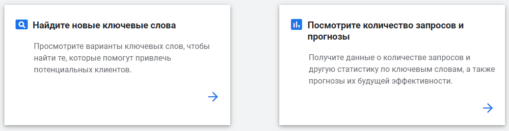

Как пользоваться Google Ads Keyword Planner (Планировщик
ключевых слов)
C помощью этого инструмента можно получить идеи для новых ключевых слов,
а также статистику запросов (сколько раз в месяц эту фразу ищут в поиске
Google).
https://ads.google.com/intl/ru_ru/home/tools/keyword-planner/
До лета 2016 года Google показывал точную статистику по всем запросам, что
вы ввели. Например, были видно, что фразу «red dangle earrings» искали при-
мерно 500 раз. А сейчас точную статистику могут получить только те, кто посто-
янно вкладывает деньги в рекламные кампании Google – причём немалые. А
все остальные видят диапазон значений, например, от 100 до 1 000.
Если перейти с вкладки Прежние показатели на вкладку Прогнозы, то можно
узнать, сколько примерно раз ту или иную фразу будут искать в следующем ме-
сяце (Google прогнозирует эту цифру на основе данных за прошлые месяцы и
годы).
200


Чтобы добавить новые ключевые фразы, нажмите синюю круглую кнопку Плюс.
Лучше всего все ваши фразы писать в кавычках – чтобы Google показывал ста-
тистику только лишь по ним самим. Так как по умолчанию (когда кавычки не
стоят), сюда попадает также статистика по фразам вроде «red dangle earrings
ebay», «long red dangle earrings» - то есть все те, где есть наша ключевая фраза.
Но нам интересен только наш конкретный поисковый запрос – поэтому добав-
ляем кавычки и смотрим на результат.
Получилось в 2 раза меньше. Вот эти данные уже можно взять для анализа фраз.
201

Как зарегистрироваться в Google Ads без данных карты и
оплаты
Примерно с лета 2016 года Google не позволяет работать с инструментом «Пла-
нировщик ключевых слов», если вы не внесли деньги и не начали рекламную
кампанию.
Но есть вариант обойти это препятствие.
Если вы ещё не начинали регистрироваться в Google Ads, то перейдите по
ссылке https://ads.google.com/home/
Войдите в сервис под своим аккаунтом Google и на самом первом шаге нажмите
на ссылку «Вы опытный пользователь Google Рекламы», а на следующей стра-
нице – «Создать аккаунт без кампании».
Это позволит получить доступ к Планировщику ключевых слов без внесения
денег на счёт.
Как лучше разобраться в продвижении товаров / Etsy SEO?
Если вы хотите лучше разобраться в том, как работает поиск Etsy и как с его
помощью продвигать свои товары, то рекомендую пройти Базовый курс по Etsy
SEO. Бесплатное продвижение товаров на Etsy.
В ходе данного видеокурса вы узнаете:
• об основных причинах, почему вас могут не находить в поиске 99% поку-
пателей
202
• почему одни товары выше в поиске Etsy, а другие - ниже
• как с помощью мозгового штурма составить фразы для ваших товаров
• 12 способов найти хорошие фразы, которые покупатели вводят в поиске
• как из всех фраз выбрать лучшие
• 3 стратегии составления заголовков и тэгов из отобранных фраз
Также вас ждут 4 бонуса, которые помогут найти дополнительные и отсортиро-
вать лишние фразы.
Всего в курсе 34 урока в видео и текстовом формате.
Подробнее о курсе читайте здесь: https://courses.proetsy.ru/etsy-seo/
Бонус для читателей книги – скидка 20% по промокоду ETSYBOOK
203
6. Фотографии товаров
Технические требования к фотографиям товаров
К каждому листингу вы можете добавить от 1 до 10 фотографий. Постарайтесь
загрузить хотя бы 5, а лучше все 10.
Etsy советуют загружать фотографии размером от 2000 пикселей по ширине.
Максимальное разрешение – 3000 пикселей. Если ваше фото будет больше, то
Etsy ужмёт его до размера 3000 пикселей.
Фотографии должны быть в формате JPG, PNG или GIF.
Особенности фотографий физических товаров
Если вы продаёте физические товары, то фотографии – это ваш главный ин-
струмент продаж. От них зависит:
• обратят ли покупатели внимание на ваш листинг в общей ленте результа-
тов поиска
• а если обратят и зайдут посмотреть – захотят ли купить
Первая часть проблемы целиком зависит от первой фотографии вашего ли-
стинга. Поэтому постарайтесь, чтобы она выгодно выделялась на фоне других
товаров. Для этого, просматривая результаты поиска по важным запросам, об-
ратите внимание, как ваши листинги смотрится на фоне других. Сделайте это
как на компьютере, так и на телефоне.
Возможно, стоит слегка изменить ракурс или масштаб фото, чтобы оно выгля-
дело выигрышнее.
Фотографии со второй по десятую видно уже только при заходе в листинг. Зна-
чит ваш товар уже чем-то заинтересовал потенциального покупателя. Осталось
только ответить на все его вопросы.
Именно для этого и служат дополнительные фотографии в интернет-магазинах
– они должны отвечать на вопросы покупателей, так как те не могут потрогать
ваш товар или примерить его на себе.
204
Каждая фотография должна давать какую-то новую информацию: о размере,
рисунке, качестве исполнения товара. Подумайте, какие мысли проносятся в
голове у человека, который хочет купить ваш товар. И не найдетесь на то, что
он начнёт читать описание листинга – далеко не все вспоминают о нём. Многие
просто закрывают страницу и переходят к следующей. Ваши конкуренты всего
в одном клике от вас.
Особенности фотографий цифровых товаров
Если цифровые товары предполагают распечатку и дальнейшее использование
в обычной жизни (например, принты картин, схемы-выкройки), то крайне важно
показать товар «живьём». Так, как его увидит покупатель. Ведь он покупает не
файл, а, например, картину в свою гостиную.
Поэтому покажите ему, как ваш принт будет смотреться в рамке над диваном
(для этого существуют mock-up, или сцены/макеты).
Что можно разместить на фото помимо товара
Не обязательно все 10 изображений листинга отводить под фотографии товара.
Можно использовать несколько фото для подачи важной информации. Напри-
мер, вы можете:
• написать основные правила магазина (срок отправки, возвраты и т.п.)
• написать, в чём ваша уникальность – почему купить должны именно у вас
• привести цитаты лучших отзывов ваших клиентов
• дать ссылки на ваши соцсети
• попросить добавить товар в избранное
• добавить информацию о себе, чтобы расположить клиента
• разместить фото похожего товара или того, который дополнит текущий (а
ссылки на них привести в описании товара)
• акции магазина
205


Настройка первой фотографии
Первая фотография листинга – это именно то, что видят в поиске Этси покупа-
тели. Или не видят – и проходят мимо. Поэтому важно, чтобы ваше изображе-
ние отличалось от конкурентов и бросалось в глаза.
Если затруднительно перефотографировать товар, то можно попробовать изме-
нить ракурс с помощью инструмента Adjust thumbnail при редактировании ли-
стинга.
Там вы можете увеличить фотографию и сместить акцент на какую-то деталь.
Тем самым можно вызвать интерес покупателей, который заметит ваше не-
обычное фото в поисковой ленте.
206
Как сделать хорошую фотографию
Главный залог хорошей фотографии – это свет. Да, именно он, а не хороший
фотоаппарат. Если у вас будет плохой свет (например, дома от обычной лам-
почки), то фото получатся невзрачными. А покупателю очень сложно отличить
качество фотографии от качества товара. По сути, человек покупает ваши фо-
тографии, а не товар. Поэтому то, как вы покажете своё изделие, и повлияет на
шансы его продать.
Самый простой и дешевый способ сделать хорошие снимки – это дневной сол-
нечный свет. Лучше всего рассеянный (когда он светит через облака). Вы мо-
жете выйти на улицу и сделать там несколько снимков или воспользоваться
своим подоконником.
Также можно купить или соорудить самостоятельно лайтбокс – специальную
«коробку», на стенки которой можно направить источники света. О том, как сде-
лать лайтбокс самостоятельно вы можете прочитать, например, в моей статье
https://proetsy.ru/kak-sdelat-laytboks-ili-svetovoy-kub/
Помимо этого, настоятельно рекомендую постоянно просматривать листинги на
Этси и сохранять себе понравившиеся фотографии (например, в Pinterest). Про-
анализируйте их, попробуйте понять, что именно вам в них нравится – воз-
можно необычный ракурс (угол, под которым сделан снимок), крупный мас-
штаб, реквизит, цветовое сочетание и т.п.
Чем больше хороших и красивых фотографий вы увидите, тем легче вам будет
сделать нечто похожее. Вам нужно накопить на подкорочке мозга достаточное
количество «красоты», чтобы начать делать то же самое.
В каких программах обрабатывать фотографии
Я крайне не рекомендую загружать фотографии своих товаров сражу же после
съёмки. Их необходимо обрабатывать в программах, чтобы сделать привлека-
тельнее. Это как фото моделей в глянцевых журналах – если бы их не обраба-
тывали специалисты, то вряд ли кто-то бы покупал эти издания.
Lightroom
207
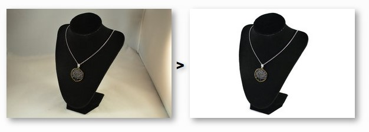
Я сама практически всю работу провожу в программе Adobe Lightroom. Она
предназначена для редактирования файлов RAW, которые получаются с помо-
щью зеркалок. Но в ней можно также обрабатывать и обычные JPG файлы.
С её помощью можно «вытянуть» снимки с довольно плохим светом, подкор-
ректировать тени, насыщенность цветов, кадрировать и т.п.
Вот небольшой и далеко не идеальный пример того, что можно сделать в этой
программе.
Fotofuze
Также в самом начале я часто пользовалась сервисом Fotofuze
(https://fotofuze.com/), который довольно просто, в пару кликов, позволяет сде-
лать фон у ваших фотографий белым – как будто вы снимали в профессиональ-
ной фотостудии.
Минус, который есть у данного сервиса – бесплатная версия позволяет сохра-
нить файлы небольшого размера.
208
О других программах и сайтах вы можете почитать в моей статье
https://proetsy.ru/5-servisov-dlya-obrabotki-fotografiy/
А для смартфонов читайте обзор сервисов здесь
https://proetsy.ru/10-servisov-dlya-obrabotki-fotografiy-chast-2/
Можно ли использовать водяные знаки на своих фото
Несмотря на то, что Этси не запрещают использовать водяные знаки, они не
рекомендуют их использовать. Аргументируя это тем, что фотографии с водя-
ными знаками не включаются в подборки для почтовых рассылок или в специ-
альные рекламные кампании.
Вместо того, чтобы использовать водяной знак на всё изображение, по их мне-
нию, лучше добавить логотип компании или название магазина фирменным
шрифтом где-то в уголке фотографии.
209

7. Случилась продажа
Как узнать, что у вас продажа
Вся информация о важных «происшествиях» в магазине находится на странице
Shop Manager – Dashboard.
Узнать о продаже можно с помощью оранжевого круга с цифрой внутри в левом
блоке меню в пункте Orders & Shipping.
Если у вас стоит мобильное приложение для продавцов Sell on Etsy, то о про-
даже вы узнаете с помощью звукового уведомления.
Ещё один способ узнать о покупке – уведомление на почту от Etsy и PayPal
(если вы принимаете платежи через эту платёжную систему). Так как оплата на
ваш кошелёк поступает мгновенно, то и письма приходят сразу после поступ-
ления денег.
В вашем почтовом ящике должно быть вот такое письмо от PayPal.
210
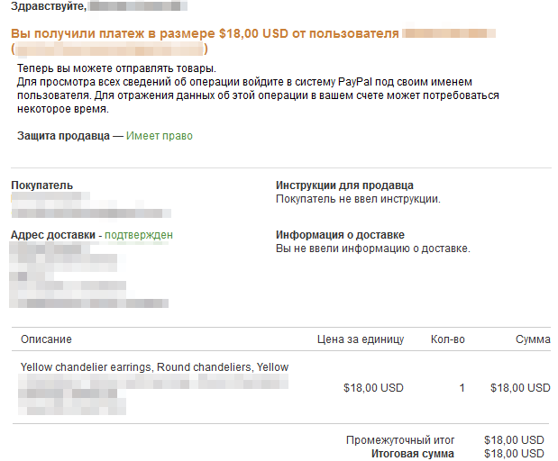
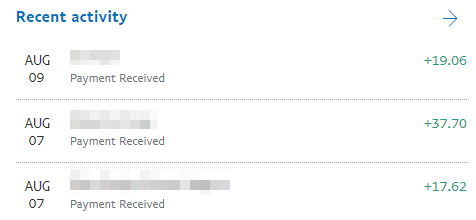
Как узнать, что оплата покупателя прошла
Для этого зайдите в свой Paypal аккаунт. На главной странице в разделе Recent
activity будет список последних операций по кошельку – включая все оплаты.
Они обозначаются знаком плюс и суммой оплаты (уже за вычетом комиссии
Пайпал).
211


Что означает Payment is pending
Если вы видите в заказе надпись Payment is pending, это означает, что покупа-
тель оплатил ваш товар, но деньги на PayPal ещё не поступили. Такое бывает,
например, в том случае, если оплата была напрямую с банковского счёта.
В Пайпале такие платежи попадают в категорию Pending и находятся вверху
страницы истории платежей. Деньги обычно зачисляются в течение 3-5 дней
рабочих дней.
И PayPal, и Etsy советуют не отправлять заказ, пока деньги не поступят на счёт.
Как только это произойдёт, заказ автоматически отметится, как оплаченный.
И не забудьте написать покупателю о сложившейся ситуации, так как он может
ждать отправку в указанные вами сроки, а вы пока этого сделать не можете.
212


Что означает надпись Marked as gift
В некоторых заказах под адресом клиента может стоять отметка Marked as gift.
Это означает, что покупатель просит не указывать в инвойсе (который можно
распечатать и вложить в посылку) стоимость товаров.
А вот упаковывать товар «по-праздничному» не нужно, для этого существует
отдельный пункт.
Как предложить покупателям подарочную упаковку
Вы можете предоставить покупателю дополнительную опцию – упаковать заказ
в подарочную упаковку за дополнительную плату.
Чтобы включить эту настройку, перейдите в раздел Settings – Options, пункт Offer
gift wrapping и выберите вариант Enabled.
213


Здесь можно указать стоимость подарочной упаковки (от 1 до 5 долларов) и
текстовое описание для покупателей (как это будет выглядеть). Также вы мо-
жете загрузить фотографию готовой подарочной упаковки.
Обращаю внимание, что стоимость упаковки указывается за весь заказ, а не за
каждый товар в заказе. Если у вас заказали, например, 3 товара за раз, а стои-
мость подарочной упаковки равна 2 долларам, то клиент сверх стоимости то-
варов заплатит только 2 доллара, а не 6 (три раза по два доллара).
Также нельзя сделать разную стоимость подарочной упаковки для разных то-
варов (например, крупногабаритных и маленьких).
На подарочную упаковку также распространяется 5% комиссия Etsy с продажи.
Чуть ниже пункта Offer gift wrapping есть ещё одна настройка для подарочных
заказов – Offer gift message.
По умолчанию она включена и означает, что покупатель может попросить вас
написать специальный текст в поздравительной записке. Эта услуга бесплатна
для покупателей. Записку можно распечатать с сайта Этси или написать вруч-
ную (как вам удобнее).
Заказ, в котором покупатель попросил празднично упаковать заказ, выглядит
следующим образом:
214
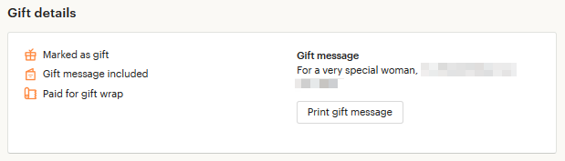


• Marked as gift – не указывать цену в инвойсе
• Gift message included – указан текст записки
• Paid for gift wrap – покупатель заплатил за подарочную упаковку
Чтобы увидеть текст поздравительной записки, нужно нажать на заказ – справа
откроется колонка с дополнительной информацией. Прокрутите её вниз до
блока Gift details. Текст записки написан под фразой Gift message.
Каков порядок действий после оплаты
Если вы продаёте цифровые товары, то после оплаты ничего дополнительно
делать не нужно – файлы будут автоматически доступны покупателю.
Если же у вас физические товары, то ваша работа только начинается.
Этап 1 – смотрим детали заказа
Переходим в раздел Shop Manager – Orders & Shipping и находим новый заказ.
Поле 1: новые заказы (New)
В этой вкладке находятся все заказы, которые ещё вами не обработаны.
215

Поле 2: выполненные заказы (Completed)
В этой вкладке хранится список всех выполненных заказов (которые вы уже
отправили покупателям).
Помимо этих двух вкладок вы можете создать дополнительные, если нажать на
значок карандаша справа от Completed. Например, можно создать вкладку “В
работе”, куда вы перенесёте заказы из New, выполнение которых уже начали.
Поле 3: список заказанных листингов
Здесь можно посмотреть все товары, которые у вас купили, их количество, а
также общую сумму заказа.
Поле 4: даты заказа и отправки
Вспомнить, в какой день заказали товар, можно по строке Ordered. А день, до
которого нужно отправить заказ, находится в строке Ship by. В моём примере
заказали 19 июля, а нужно отправить до 24 июля (включительно).
Поле 5: адрес доставки
Здесь указано имя и фамилия получателя посылки, а также его почтовый адрес.
Если вы нажмёте в любом месте на заказ, то справа откроется окно с дополни-
тельной информацией.
216


Поле 6: действия с заказом
Здесь можно перенести его в другую вкладку/статус (то есть выбрать вместо
New что-то другое), а также выполнить ряд других действий (More actions):
• Print – распечатать инвойс
• Update ship by date – изменить дату отправки
• Mark as a gift – отметить как подарок (чтобы в инвойсе не было цен)
• Mark as not paid –отметить, как неоплаченный
• Cancel — отменить заказ
Поле 7: информация о покупателе
Здесь указано имя клиента, а также его никнейм на Etsy.
Если нажать на стрелочку, направленную вниз, то откроется дополнительная
информация. Здесь можно посмотреть электронную почту покупателя.
Под именем покупателя есть ссылка Order history — с её помощью можно быстро
найти все заказы данного клиента.
О том, что это повторный клиент, указывает значок звёздочки справа от ник-
нейма.
Поле 8: общение с покупателем
Если нажать кнопку Message buyer, то можно начать диалог с покупателем.
Например, сказать, что его заказ отправлен или задать уточняющие вопросы.
217
Поле 9: заметки о заказе
Если вы хотите сделать какие-то пометки к этому заказу, то напишите их здесь.
Покупатель их не увидит – они будут доступны только вам. Для создания за-
метки нажмите кнопку Add a private note.
Этап 2 – упаковка товара
Так как вашей посылке предстоит долгий перелёт со многими остановочными
пунктами (сортировки, таможни и т.п.), то упаковать всё стоит понадёжнее. Так,
чтобы защитить товар от возможных повреждений.
Для этих целей я покупаю в строительном магазине пузырчатую пленку, кото-
рой обворачиваю коробку с товаром. Только учтите, что на почте иногда попро-
сят показать содержимое посылки – поэтому не упаковывайте всё дома.
Не забывайте и о сроках отправки – Processing time. Они указываются у каждого
листинга отдельно (или в нужном Shipping Profile).
Этап 3 – подготовка коробки/конверта
Лучше всего заранее купить почтовую коробку или пластиковый пакет в своём
отделении почты, что спокойно подписать их дома.
Также можно поискать в вашем городе фирмы и интернет-магазины, которые
продают почтовые упаковки – нередко бывает, что у них они стоят даже де-
шевле, чем на самой почте.
Обращаю внимание, что на Почте России можно отправлять посылку только в
коробке, на которой нет никаких надписей (кроме адреса). А также отсутствуют
остатки канцелярского скотча. Мне обосновали это тем, что так коробку можно
легко и незаметно вскрыть (просто отклеить почтовый скотч от обычного, а за-
тем приклеить снова).
По поводы работы сотрудников почтовых служб и их требований – тут как по-
везёт. «Правила» в каждом почтовом отделении могут слегка отличаться. Порой
они разнятся даже у разных смен в одном отделении. Поэтому я в своё время
решила ходить в конкретное отделение, где требования ко мне были примерно
одинаковыми – чтобы каждый раз не нервничать по этому поводу.
218
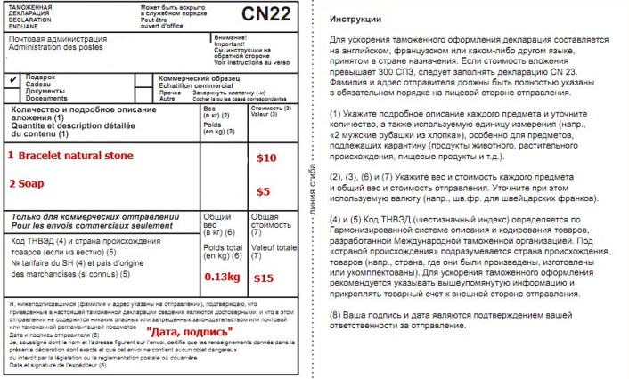
Что касается Почты России (так как я живу в России, то опыт у меня есть только
от взаимодействия с этой почтовой службой). Для отправки вам нужно будет
заполнить небольшой бланк таможенной декларации CN22. В ней указывается
всё содержимое отправления, вес каждого товара (чаще всего сотрудники по-
чты заполняют это сами), ценность, а также тип отправления (подарок, коммер-
ческие образец, документ). Тип отправления я чаще всего указываю «подарок».
Если объявленная ценность больше 300 СПЗ (международная почтовая денеж-
ная единица, примерно 430 долларов), то также необходимо заполнить декла-
рацию CN23. Однако многие сотрудники почты об этом не знают и требуют эту
декларацию в любом случае.
219

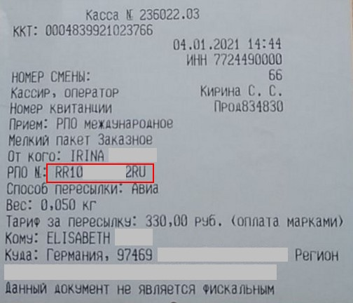
Бланки деклараций можно скачать с сайта Почты России или попросить в вашем
почтовом отделении.
https://www.pochta.ru/support/parcels/small-package
Этап 4 – получаем квитанцию об оплате с трек-номером
На чеке от оператора уже проставлен трек-номер, который необходимо сооб-
щить вашему клиенту.
220
Этап 5 – отмечаем заказ как отправленный
Теперь снова заходим в магазин на Etsy в раздел Orders & Shipping. Находим
нужный заказ, нажимаем кнопку Update progress, а затем Mark complete.
В открывшемся окне нужно указать:
• дату отправки (Ship Date)
• сообщение покупателю (Note to buyer) по желанию. Например, что по-
сылка отправлена с пожеланием скорейшего её получения. Нажмите Save
note
• трек-номер для отслеживания отправления — введите код (цифры и
буквы) с почтовой квитанции. Его можно не указывать.
• по желанию включить переключатель Email me a copy of this notification,
чтобы на вашу электронную почту прислали копию уведомления, которое
получит покупатель
221

Всё. Осталось нажать кнопку Mark 1 order(s) complete. И ваша работа над отправ-
кой посылки окончена!
Заказ автоматически перейдёт в статус Completed.
Здесь в поле 1 показывается текущий статус отправления. В данном случае, In
transit означает, что посылка в пути. К сожалению, Etsy не всегда верно опре-
деляют этот статус, и порой уже доставленная посылка всё ещё стоит со стату-
сом In transit.
В поле 2 указан трек-номер посылки, а также дата отправки (Shipped on).
222

Что означает Guest рядом с именем покупателя
Покупать на Etsy могут как зарегистрированные пользователи, так и люди без
аккаунта (Guest). Если вы увидели рядом с именем надпись Guest – значит у
покупателя нет учётной записи на сайте Etsy.
Но это точно такой же заказ, как и все остальные. Для продавцов работа с ним
такая же, как и с заказами зарегистрированных пользователей.
При этом Guest не может оставить отзыв на свой заказ и не может открыть по
нему кейс. Чтобы это сделать, ему придётся создать аккаунт после заказа и при-
вязать к нему совершенную транзакцию.
Как отредактировать трек-номер
Если вы ошиблись в написании трек-номера, то его можно отредактировать в
течение 3 дней после пометки заказа выполненным (Completed).
Для этого раскройте подробную информацию о заказе и нажмите Edit tracking.
Введите верный трек-номер и нажмите кнопку Save.
Как создать шаблон сообщения об отправке
Когда вы нажали кнопку Mark complete, то там можно написать покупателю со-
общение. Например, что его заказ отправлен, и он может отследить его по та-
кому-то трек-номер.
Этот текст можно сохранить как шаблон и затем подставлять в поле Note to
buyer.
223


Для этого нужно написать текст сообщения, потом нажать кнопку облачка и вы-
брать пункт Save as a new snippet:
В открывшемся окне введите название шаблона (Name the snippet) и нажмите
Save.
Чтобы подставить нужный шаблон в поле Note to buyer(s), нужно нажать на его
название. А чтобы его удалить – перейти к списку сниппетов (Manage snippets),
а затем нажать на значок корзины справа от нужного названия.
Здесь же можно отредактировать текст ранее созданного шаблона. Для этого
нажмите на значок карандаша.
Также вы можете нажать кнопку Set default note, чтобы это сообщение автома-
тически подставлялось для каждого заказа.
224

Покупатель просит изменить адрес доставки
Многие продавцы переживают, когда покупатель просит выслать товар по дру-
гому адресу, чем он указал в своём заказе. Сразу возникает мысль: нет ли тут
какого-то подвоха?
На самом деле ситуации бывают разными, но чаще всего здесь нет ничего про-
тивозаконного. Сами Этси советуют в своих статьях, что если покупатель пере-
путал адрес, то первым делом ему нужно связаться с продавцом, чтобы узнать,
есть ли возможность оформить доставку по другому адресу.
Я видела в Policies некоторых магазинов, что они не меняют адрес доставки и
отправляют только по тому адресу, что указан в PayPal. Это выбор каждого. Но
я не вижу ничего страшного в том, чтобы пойти на встречу покупателю.
Итак, вы можете отправить посылку по другому адресу, если возникла такая
необходимость. В любом случае, если в дальнейшем и возникнет какая-то про-
блема, у вас будут доказательства в виде переписки, что вы сделали это по
просьбе покупателя.
Я лишь добавлю собственную рекомендацию – сделайте фото конверта/ко-
робки посылки для подстраховки. Его вы тоже можете предоставить потом в
качестве доказательства, если возникнет такая необходимость.
Что написать в автоматическом сообщении покупателю
Вы можете написать сообщение, которое Etsy покажет покупателю сразу после
его оплаты. Можно написать разные сообщения для цифровых товаров и физи-
ческих.
Для редактирования текста перейдите в меню Shop Manager – Settings – Info and
appearance.
225


Внизу открывшейся страницы вы увидите 2 поля: Message to Buyers и Message to
Buyers for Digital Items.
Текст, размещенный в Message to Buyers будет отправлен покупателям как циф-
ровых, так и физических товаров. Тогда как сообщение в поле Message to Buyers
for Digital Items будет отображаться только на странице скачивания цифрового
файла.
Зачем здесь что-то писать? Главным образом для того, чтобы покупатель не чув-
ствовал себя потерянным после того, как расстался со своими деньгами. Дайте
понять, что вам не всё равно и вас заботит судьба этого человека.
Что здесь можно написать:
226

• благодарность за совершенную покупку
• в течение какого срока вы отправите заказ
• код скидочного купона на следующую покупку
• ссылки на ваши профили в соцсетях
Покупатель видит это следующим образом:
Как отслеживать посылку/отправление
При отправке вашего заказа вы можете выбрать, высылать его с трек-номером
или без (например, у Почты России это называется, соответственно, заказное
или обычное).
Если вы отправляете товар с трек-номером, то отследить его можно:
• на Etsy
• на сайте почтовой службы
• на сторонних сервисах/сайтах
Вариант 1 – Etsy
Чтобы посмотреть статус вашего отправления на Этси, необходимо зайти в раз-
дел Orders & Shipping и кликнуть на трек-номер нужного вам заказа.
227

Справа у вас откроется окно с дополнительной информацией о заказе. Прокру-
тите до середины, чтобы посмотреть последние статусы посылки.
Вариант 2 – сайт почтовой службы
Отправления Почты России https://pochta.ru
Отправления Укрпочты - https://track.ukrposhta.ua/tracking_UA.html
Вариант 3 - сторонние сайты
Большинство отправлений можно отследить через сторонние сайты, например:
• https://gdeposylka.ru/
• https://www.17track.net/ru
При этом нужно учесть, что почтовые службы некоторых стран не отслеживают
международные мелкие пакеты (например, Канада, Австралия).
Особенности отправки товаров Почтой России
Международные отправления с вложением товаров бывают двух типов: мелкий
пакет и посылка.
Мелким пакетом считаются отправления до 2 кг и суммой сторон (высота +
длина + ширина) до 90 см. Посылкой можно выслать отправление до 20 кг.
228
Стоимость
Стоимость отправки мелкого пакета или посылки можно рассчитать прямо на
сайте почты с помощью калькулятора https://www.pochta.ru/parcels
А также задав вопрос онлайн-консультанту.
Стоимость отправления мелких пакетов едина для всех стран мира (т.е. не
важно, отправляете вы в США или Австралию). Всё зависит только от веса от-
правления.
Стоимость посылки, в свою очередь, зависит как от веса, так и от страны назна-
чения.
Страховка
Также вы можете застраховать отправление, чтобы в случае потери вам возме-
стили заявленную вами сумму (но за такую страховку вы платите почте плюсом
к основной стоимости отправки).
Страховать можно только посылки.
Оплата марками
Далеко не все сотрудники почты знают, что вы можете оплатить отправку мел-
ких пакетов марками. Поэтому у меня нередко были случаи, когда я пыталась
доказать в почтовом отделении, что марками отсылать можно - на что мне ка-
тегорично отказывали. Тут можно или покричать и вызвать начальника отделе-
ния, или пойти в другое отделение и найти более осведомленного в правилах
сотрудника.
Оплата марками обойдётся на 60-390 рублей дешевле обычного отправления.
В тарифах Почты России, которые есть у них на сайте, это называется без НДС
(марками) и с НДС (деньгами).
Онлайн оформление посылок
Почта России запустила сервис для зарегистрированных пользователей.
Теперь можно оформлять и оплачивать посылки онлайн, не выходя из дома.
Подробнее об этой возможности читайте у нас на сайте.
229

Покупатель оставил адрес на арабском/китайском и т.п.
Первый делом необходимо написать покупателю личное сообщение и попро-
сить указать адрес на английском языке. Можно сразу же продублировать со-
общение на электронную почту, которая указана в заказе.
Если в течение 3-4 дней покупатель так и не выйдет на связь – то просто отме-
ните заказ, описав в причине произошедшую ситуацию.
Ещё один вариант – распечатать адрес «как есть» и приклеить на посылку/кон-
верт. Но обязательно подписать страну назначения на своём языке (для сотруд-
ников Почты).
Покупатель оплатил заказ, но не отвечает на уточняющие со-
общения, без которых я не могу отправить заказ
Если вы отправляли личные сообщения на сайте Etsy, то попробуйте написать
на электронную почту. У меня были случаи, когда клиент отвечал именно на
емэйл-сообщения.
Электронную почту клиента можно найти в информации о заказе.
Если же клиент и так не отвечает – подождите несколько дней и отмените заказ.
230

Что будет, если вовремя не отправить заказ
В этом случае покупатель может открыть спор (кейс) на Этси и потребовать воз-
врата денег. Это может негативно сказаться на позициях вашего магазина.
Ещё один вариант – покупатель промолчит, но потом может оставить плохой
отзыв.
Поэтому, если у вас возник форс-мажор и вы по какой-то причине не можете
отправить посылку в нужный срок – свяжитесь с покупателем, объясните ситу-
ацию, спросите, сможет ли он немного подождать.
Если вам не удастся прийти к согласию – просто отмените заказ и верните
оплату. Репутация стоит дороже.
Как изменить дату отправки заказа
Если покупатель согласится увеличить срок подготовки заказа, найдите его в
разделе Orders & Shipping, нажмите кнопку More actions и выберите пункт Update
ship by date.
Укажите в открывшемся окне новую дату отправки и сообщение покупателю.
Изменить дату можно только до указанного Etsy дня (в данном случае, до 14
августа). Новая дата должна быть не позднее, чем 3 недели от первоначальной
даты отправки.
231
Как долго идёт посылка в США и другие страны
Так как я отправляю свои товары Почтой России, то все цифры приведу из сво-
его опыта.
В среднем, от момента отправки в моём почтовом отделении до выпуска та-
можней России проходит от 3 до 6 дней (все отправления идут через Москву
или Санкт-Петербург). То есть на нашей стороне Почта России работает очень
быстро.
Далее обычно дней через 5-7 посылка прибывает на таможню страны назначе-
ния (но бывает, что и через 1-2 дня). И ещё около недели на то, чтобы дойти до
адресата.
То есть в общем на всё уходит около 14-20 дней. Самая быстрая доставка пока
была в Великобританию и США – в обоих случаях всего 8 дней.
В связи с коронавирусом многие авиарейсы отменены, поэтому заказы могут
идти очень долго, иногда по 2-3 месяца. Летом 2020 года часть посылок Почта
России отправляла морем вместо авиа.
Чем можно отправить посылку, кроме Почты России и EMS
Что касается России, то можно воспользоваться услугами, например, следую-
щих компаний:
232
• DHL
• CDEK
• FedEx
• UPS
• Spring
• Space-Express
Платят ли покупатели какие-то пошлины и налоги
В разных странах действуют свои ограничения.
США. Посылки из других стран ценностью до 800 долларов проходят без со-
ставления дополнительных бумаг на таможне.
Канада. Не облагаются пошлинами товары до 20 канадских долларов (около 15
долларов США) и подарки до 60 канадских долларов (около 45 долларов США).
Страны Евросоюза. Таможенная пошлина взымается на посылки свыше 150
евро.
Помимо этого, в большинстве стран VAT-налогом не облагаются посылки до 22
евро. Но, например, в Дании эта граница около 10 евро; в Болгарии – 15; а во
Франции абсолютно все посылки облагаются VAT налогом.
У посылок, обозначенных как «подарок», чаще всего стоит беспошлинное огра-
ничение для VAT-налога в 45 евро.
С 1 июля 2020 года беспошлинный ввоз на посылки до 22 евро должен быть
отменён – со всех будут брать VAT. Правила для «подарков» при этом не изме-
нятся.
Великобритания. Таможенный сбор не берётся на товары до 135 фунтов стер-
лингов (180 долларов). VAT-налогом не облагаются подарки до 39 фунтов стер-
лингов (около 50 долларов США). Если стоимость посылки больше 135 фунтов
– с 1 января 2021 года Etsy собирают VAT-налог в момент покупки.
Австралия. Не облагаются налогом товары до 1000 австралийских долларов
(около 750 долларов США).
233
Сколько товаров можно отправить в посылке
В таможенной декларации CN22 для описи товаров мало места. Но никаких
ограничений по количеству товаров нет. Если вы отправляете много вещей, то
просто пишите мельче – именно такой совет я получила в отделении почты.
Если сделали 2 заказа на 1 адрес – можно ли их отправить
одной посылкой
Можно. Порой бывает, что покупатель купил что-то в магазине. А потом спустя
несколько минут нашёл что-то ещё – и снова оформил заказ.
После отправки посылки укажите трек-номер в обоих заказах.
Стоит ли писать что-то покупателю после отправки товара
Здесь всё на ваше усмотрение. Первое сообщение я пишу в тот момент, когда
отправляю трек-номер и помечаю заказ отправленным. Затем я обычно пишу
покупателю, когда вижу по трек-номеру, что посылка пришла в его страну.
Чтобы он не забывал про свой заказ и про меня :) А также связываюсь, когда
вижу, что появился статус «Неудачная попытка вручения».
Что делать, если посылка пропала в пути
Прежде всего необходимо позвонить в службу поддержки вашей почтовой
службы и попытаться узнать судьбу отправления (здесь вам также поможет
трек-номер заказа).
В некоторых странах (например, Канада и Австралия) мелкие пакеты из Рос-
сии/Украины не отслеживаются.
Возможно, вам потребуется написать заявление на розыск отправления в своей
почтовой компании.
Обязательно напишите покупателю и сообщите ему, что вы пытаетесь выяснить
судьбу его заказа. Самое главное – держать клиента в курсе. Пусть новостей не
будет – но хотя бы вы сами не пропадаете, а ему так будет куда спокойнее.
234
Если сроки доставки превышают заявленные значения в Policies вашего мага-
зина, то можно предложить покупателю вернуть деньги.
Пропажа посылок – это неизбежная реальность, с которой приходится счи-
таться. Вы только можете застраховывать отправления или закладывать некий
процент на такие потери в цену каждого товара.
Как застраховать отправление
Это можно сделать при отправке заказа в почтовом отделении. Вам необхо-
димо указать ценность отправления.
Например, Почта России от этой суммы возьмёт комиссию 4%. Если вы отправ-
ляете EMS, то сумма страховки составит 1% от ценности посылки.
Страховать можно только посылки.
К сожалению, у меня нет информации о стоимости страховки в других странах.
Покупатель говорит, что не получал товар, хотя по трек-но-
меру видно, что он доставлен
Некоторые продавцы из США утверждают, что такое периодически случается у
их почты USPS. Например, посылку доставили по другому адресу. Тогда они
просят поспрашивать у соседей – не приходила ли им по ошибке посылка. Если
покупатель говорит, что ничего не нашлось, то в таких случаях продавцы чаще
всего доверяют покупателям и возвращают им деньги.
Но я также встречала истории о покупателях, которые систематически «грешат»
подобным поведением, пытаясь обмануть продавца.
В каждом конкретном случае решать только вам – доверять покупателю или же
нет. Невозможно дать единый и универсальный совет в подобной ситуации.
Просто знайте, что такое бывает.
235
Посылка находится в почтовом отделении покупателя, но он
отказывается её получать и просит вернуть деньги
Если по трек-номеру видно, что посылка находится в почтовом отделении кли-
ента – то это ваше главное доказательство в случае открытия кейса.
Если покупатель так и не заберёт посылку, и она вернётся к вам, то вы можете
вернуть ему стоимость товара за вычетом расходов на доставку.
Посылка не пришла покупателю. Я вернул(а) деньги. После
этого посылка всё-таки пришла, и покупатель хочет вернуть
деньги обратно
Можно поступить следующим образом:
1. Создать на Этси цифровой товар со стоимостью равной цене заказанного то-
вара. И отправить ссылку на него клиенту, чтобы он его оплатил.
2. Выставить счёт на PayPal. О том, как это сделать, читайте вопрос «Как отме-
нить неоплаченный заказ физических или цифровых товаров?»
Покупатель хочет дополнить оплаченный заказ. Как взять с
него доплату
1. Вы можете добавить новый листинг специально для покупателя и указать в
нем стоимость — разницу доплаты. А стоимость доставки поставить 0. В описа-
нии листинга указать, что будет изменено и за что доплачивает покупатель.
2. Отменить данный заказ, вернуть покупателю деньги, добавить новый листинг
с учетом изменений, и попросить покупателя оплатить его снова.
Какие комиссии нужно заплатить с продажи
С каждого проданного товара вы платите Этси 5% комиссии. Например, при
стоимости товара в 20 долларов Etsy получает 1 доллар. Комиссия берётся как
со стоимости товара, так и со стоимости доставки.
236
Также свои комиссии берёт и платёжная система.
Например, если вы живёте в России и получаете платежи через PayPal, то эта
система автоматически снимает с вас 4.4% + $0.30 с общей стоимости заказа
(товар + доставка). То есть с 20 долларов вы заплатите 1 доллар и 18 центов.
Если вы принимаете оплату через Etsy Payments, то размер комиссий примерно
схож с Пайпалом. Для каждой из стран, где доступен EP, размер комиссии
можно посмотреть на странице
https://help.etsy.com/hc/en-us/articles/115015628847
Помимо этого, если вы живёте в стране Евросоюза и у вас подключен Etsy Pay-
ments, то Этси принудительно будет взымать с вас местный VAT-налог (если у
вас нет зарегистрированного юрлица).
Также 2.5% Этси берёт за конвертацию валют при оплате через Etsy Payments
(если валюта счёта в вашем банке отличается от той, в которой вы продаёте
товары в Etsy магазине).
Продавцы из России и Беларуси также оплачивают НДС 20% от комиссий Etsy
(подробнее об этом читайте в вопросе «Что такое VAT ID в настройках мага-
зина?»).
Учитывайте эти комиссии, когда рассчитываете стоимость товаров.
Если мой цифровой товар купил покупатель из Евросоюза, то
кто платит VAT-налог
Платит покупатель. При выставлении счёта на оплату Etsy автоматически при-
плюсовывает к цене размер VAT-налога, который должен заплатить покупатель.
То есть Etsy сами «собирают налоги», вам не нужно об этом беспокоиться. И на
вашу прибыль никак не повлияет, что товар купил житель Евросоюза.
Будет ли проданный листинг доступен снова для продажи
Если вы хотите, чтобы после продажи товара он снова был доступен в магазине,
то это можно сделать двумя способами.
Способ 1 – выставить количество товаров больше 1
237

В этом случае после продажи значение этого параметра уменьшится на 1, а то-
вар будет по-прежнему доступен для покупки. Это особенно актуально для циф-
ровых товаров, которые можно продавать постоянно.
Способ 2 – сделать неактивный листинг активным.
Если же количество товаров в данном листинге у вас было «1», то после про-
дажи он перейдёт в категорию Sold Out раздела Listings. Поэтому вам нужно
обновить его, то есть cделать Renew.
В обоих случаях вам нужно заплатить $0.20 после каждой продажи (за «новое»
размещение товара).
Можно ли вместо проданного товара поставить другой в тот
же листинг, заменив фото и описание
Да, вы можете просто отредактировать проданный листинг, заменив описа-
ние/фото/тэги и т.п.
Теоретически это должно положительно сказаться на его судьбе, так как у этого
листинга уже будет положительный «рейтинг» за счёт прошедшей продажи. Но,
возможно, поисковый алгоритм Этси как-то может вычислить (по новым фото
или заголовку), что товар вы всё-таки был изменен. Точно этого никто не знает.
И не забудьте сделать Renew проданного листинга – чтобы он снова появился
в магазине (если у вас была указана 1 шт).
Товар продан оффлайн - как его перенести в раздел продан-
ных
Перенести товар в категорию «продано» (Sold Out) нельзя. Там он может ока-
заться только тогда, когда его купят через Etsy.
238
Но вы можете сделать следующее:
• изменить листинг этого товара и поставить вместо него другой товар (за-
менив фото и описание) – так вам не придётся платить 20 центов за раз-
мещение нового товара (обратите внимание на раздел 3, вопрос «Если
товар не пользуется спросом, можно ли заменить фотографии, описание
и выставить другой товар?»)
• можно сделать листинг неактивным (Inactive) – только вы будете его ви-
деть
• можно указать, что товар выставлен для примера (Made to Order), и вы мо-
жете сделать его на заказ – конечно, если есть такая возможность.
Как провести на Этси оффлайн продажу
Раньше это можно было сделать с помощью метода оплаты Other.
Но осенью 2020 года Etsy отключили данный способ. Поэтому продажи можно
проводить только через PayPal или Etsy Payments.
Как указать, что я отправляю только в определенные страны
К сожалению, на Etsy нельзя исключить какие-то страны из общего списка –
можно лишь указать те, куда вы отправляете.
Удобнее всего это сделать через Shipping Profiles (Settings – Shipping settings),
чтобы не пришлось это делать всякий раз при создании очередного листинга.
239

Нужно ли вкладывать инвойс в посылку
Инвойс иначе ещё называют упаковочной квитанцией. Это список заказанных
товаров, распечатанный на специальном бланке.
Его можно распечатать на сайте Etsy.
Почему стоит вложить его в посылку:
• если покупатель заказал несколько товаров, то может сверить, что вы всё
вложили в посылку
• на инвойсе печатается название вашего магазина и ссылка на него
• в инвойс можно автоматически включить код купона со скидкой на сле-
дующую покупку
• можно написать сообщение покупателю (например, как вернуть товар или
инструкцию по использованию)
• его может затребовать таможня страны клиента
240
Как распечатать инвойс
Чтобы распечатать инвойс, перейдите на страницу заказа и нажмите кнопку
More actions — Print.
Etsy предлагает распечатать два документа: для покупателя (Packing slips) и для
продавца (Order receipt). Нам нужно первое.
Нажимаем Customize options, чтобы открыть настройки печати.
241
Здесь есть множество параметров. Каждый из них влияет на конечный вид ин-
войса.
• Shop icon/Order receipt banner/None – что будет напечатано вверху ин-
войса (иконка, баннер магазина или ничего)
• Ships from – печатать город и страну вашего магазина
• Buyer notes – комментарий к заказу, который оставил покупатель
• Listings photos – в инвойс попадёт небольшая первая фотография товара
• Private notes – включить в инвойс сообщения, которые мы написали к дан-
ному заказу
• Cost breakdown — указывать в инвойсе цену изделий (стоит отключить,
если отправляете как подарок)
• Add coupon code – прикрепить скидочный купон
• Add a personalized note – сообщение покупателю
После этого нажмите Print order(s), чтобы Etsy создал готовый PDF-документ, ко-
торый вы сможете распечатать.
242
У меня уникальные товары, а покупатель из Китая. Стоит ли
бояться
Порой китайцы заказывают товары, чтобы потом сделать копии и продавать их
у себя в стране или на сайтах вроде Alibaba и Aliexpress.
Поэтому, если у вас есть какие-либо опасения, вы можете отменить заказ и вер-
нуть покупателю деньги.
Я никак не могу сделать первую продажу
Да, пожалуй, ожидание первой продажи – это самое тяжелое для новичка на
Этси. И так радостно, когда это событие наконец случается.
Но если в графе продаж у вас стоит ноль, то многие покупатели зачастую пред-
почтут выбрать более «надёжный» с их точки зрения магазин, где уже есть про-
дажи и отзывы, нежели ваш. Такая вот психология поведения.
Но если гора не идёт к Магомеду, то Магомед сам идёт к горе. Что это означает
для вас? У вас наверняка есть друзья, родные, знакомые, кому нравятся ваши
работы, и кто уже купил или хочет их купить. Попросите кого-нибудь из них
сделать заказ в вашем магазине на Этси.
Только учтите, что покупатель из России не сможет ничего купить у продавца
из России – система PayPal не пропустит такой платёж.
Главное – не покупайте сами у себя, то есть не создавайте покупательский ак-
каунт на своём же компьютере. Это против правил Etsy – и за это ваш магазин
могут заблокировать.
243

8. Отзывы покупателей
Что такое отзывы покупателей
После того, как клиент купил ваш товар, он может оставить на него отзыв. По
сути, отзыв оставляется не только на товар, но и на магазин – то есть на вас.
Покупатель может оставить отзыв по пятибальной шкале – от 1 до 5 звёзд.
Также он может оставить комментарий к своей оценке – но это не обязательно.
Все отзывы, которые оставили вам и вашему магазину, вы можете посмотреть
на главной странице магазина в разделе Reviews.
Поле 1: средняя оценка магазина на основе отзывов за последние 12 месяцев
Поле 2: сортировка отзывов в порядке рекомендаций или по дате
Поле 3: фильтр отзывов (quality – качество, shipping – доставка, customer
service – обслуживание клиентов)
Поле 4: автор отзыва и дата
Поле 5: оценка покупателя и текст отзыва
Поле 6: написать покупателю личное сообщение (например, поблагодарить за
отзыв)
Поле 7: листинг, на который покупатель оставляет отзыв
244

Поле 8: вы можете пожаловаться Etsy на данный отзыв, если посчитаете, что он
не соответствует действительности
На что влияют отзывы
Самое главное – это социальная «валюта», по которой другие покупатели могут
оценить, стоит ли иметь дело с вашим магазином.
Помимо этого, Этси учитывает рейтинг магазина (среднее значение отзывов за
последние 12 месяцев) при ранжировании листингов в своём поиске. Чем хуже
отзывы – тем ниже позиции товаров. Это и логично – админы хотят, чтобы по-
купатели имели дело только с качественными магазинами.
Как узнать, что мне оставили отзыв
В Shop Manager отзывы можно найти внизу страницы Dashboard среди списка
последних действий в магазине.
Если у вас установлено мобильное приложение Etsy для продавцов, то там
также приходят уведомления о новых отзывах.
Когда покупатель может оставить отзыв
Если вы продаёте цифровые товары, то ваш клиент может оставить отзыв в те-
чение 100 дней после первого скачивания файлов.
Если же у вас физические товары, то покупатель может поставить вам оценку в
течение 100 дней после предполагаемого срока доставки, который вычисляется
так: дата покупки + время обработки заказа + время доставки.
245

То есть может так получиться, что покупатель получил свой заказ очень быстро,
но Этси не разрешает оставить отзыв.
Ещё один вариант – когда статус доставки на Etsy сменился на Delivered (до-
ставлено). Но иногда на Etsy бывают проблемы с обновлением статусов.
Если после этой даты прошло более 100 дней, то отзыв оставить уже нельзя.
Может ли покупатель отредактировать отзыв
Да, он может это сделать сколько угодно раз в течение 100 дней после:
• предполагаемой даты доставки или появления статуса Delivered
• первого скачивания файлов – для цифровых товаров
Если вы оставили комментарий к отзыву покупателя, то он уже не сможет его
отредактировать.
Если покупатель также открыл кейс на заказ, к которому оставил отзыв – то
пока кейс открыт, отредактировать отзыв он не сможет.
Может ли покупатель прикрепить фотографию к отзыву
Да, может – но только, если отзыв на 5 звёзд. И только с мобильного приложе-
ния Etsy.
Можно ли скрыть фотографию в отзыве
Можно. Если в отзыве есть фотография, то под текстом появится кнопка Hide
this photo from buyers. Нажмите на неё – и фото скроется.
246


Можно ли оставить отзыв покупателю
Нет, такой возможности на Этси нет. Отзывы могут оставлять только покупатели.
Можно ли удалить отзыв покупателя
Нет, продавец не может удалить отзыв покупателя. Это может сделать только
администрация сайта.
Если вы считаете, что покупатель нарушил правила площадки в тексте отзыва,
то можете пожаловаться администрации с помощью кнопки Report this review.
Можно ли заблокировать покупателя, чтобы он не мог поку-
пать и оставлять отзывы
На Etsy нельзя блокировать покупателей. Это могут сделать только сами адми-
нистраторы Etsy.
247

Поэтому, если у вас появился неадекватный клиент, рекомендуем обратиться к
админам Etsy и рассказать о своей ситуации.
Мне несколько раз писали продавцы, которым оставляли необоснованные
негативные отзывы — после жалобы в Etsy администрация удалила эти отзывы.
Но даже если администрация заблокирует пользователя, не стоит забывать, что
на Etsy можно сделать заказ как Гость, то есть без создания аккаунта. Но оста-
вить отзыв на такой заказ покупатель не сможет.
Что означает кнопка Block this person
На странице профиля пользователя внизу есть кнопка Block this person.
Если её нажать, то человек не сможет следить за тем, что вы добавляете себе в
избранное. То есть это действие не блокирует возможность совершать у вас
покупки, видеть ваш магазин или писать вам сообщения.
Какую ссылку отправить покупателю, чтобы он оставил отзыв
Бывают клиенты, которые плохо ориентируются на Этси (возможно, ваш заказ
для них первый). Поэтому они может и хотят, но не знают, где оставить отзыв
на свою покупку. В этом случае вы можете помочь им, рассказав, как это делать.
Чтобы написать отзыв, необходимо зайти в меню You – Purchases and reviews
или перейти по ссылке https://www.etsy.com/your/purchases
248

После этого клиент увидит список всех своих покупок. Пусть он найдёт заказ из
вашего магазина (бывают клиенты, которые могут перепутать магазины – осо-
бенно, если много заказывают на Этси – и отзыв в итоге достанется не вам).
Здесь он может сразу поставить нужное количество звездочек и написать текст
сообщения (в компьютерной версии нужно оставить минимум 5 слов).
Можно ли оставить комментарий к отзыву
Вы можете прокомментировать только негативные отзывы, то есть в 3, 2 или 1
звезду. Положительные отзывы (4-5 звёзд) нельзя прокомментировать.
Но учтите, что после вашего комментария покупатель уже не сможет отредак-
тировать текст и изменить свою оценку.
249
Как реагировать на отрицательный отзыв
Самое главное – постарайтесь не расстраиваться и попробуйте извлечь выгоду
из ситуации.
Для начала определите, насколько этот отзыв объективен. Если написано всё
«по делу», то это отлично! Покупатель дал вам возможность улучшить свой ма-
газин и свой сервис – он рассказал, что его не устроило.
Например, вы старались сделать красивые фотографии и совсем забыли пока-
зать своё изделие с обратной стороны (а она как раз и не устроила покупателя).
Учтите эти моменты в будущем.
Если из текста отзыва не понятно, чем же именно не доволен покупатель (или
вообще нет текста) – то напишите клиенту личное сообщение и постарайтесь
выяснить, в чём же дело. Постарайтесь принять его точку зрения и взглянуть на
проблему с его стороны.
Вы можете также постараться загладить свою вину, предложив, например, за-
менить изделие, дать скидку или сделать нечто подобное (что будет уместно в
конкретной ситуации).
Если ваше общение пойдёт гладко, и клиент увидит, что вы готовы из кожи вон
лезть, чтобы загладить свою вину – он может изменить свою оценку. Именно
поэтому не стоит сразу комментировать отрицательные отзывы!
Я также встречала советы продавцов, которые просили в личном общении с
клиентом изменить оценку, так как бизнес на Этси – это их основной источник
дохода, а плохие отзывы напрямую влияют на него.
Делать ли вам также – решайте сами. Я сама лично не давлю на покупателя,
если вижу, что он не очень-то хочет менять свой отзыв.
Если же покупатель не согласился изменить свой отзыв – то тогда следует оста-
вить комментарий. Имейте ввиду – вы пишите свой ответ не для этого человека.
Вы пишите его для своих будущих клиентов! Именно они прочитают ваш ответ,
который повлияет на их решение о покупке у вас.
250

Поэтому постарайтесь написать содержательный и вежливый ответ, который
докажет, что вы очень опечалены случившимся и сделаете всё возможное,
чтобы этого не повторилось.
Например, как этот:
Покупатель: «Была вынуждена вернуть заказ, потому что товары пришли поло-
манными».
Ответ продавца: «Мне очень жаль, что вы получили кольца в таком состоянии.
Вижу, что вы получили посылку полностью раздавленную, хотя я отправляла её
в отличном состоянии. К сожалению, я не могу контролировать работу почты. Я
предложила вам отправить новые кольца, но вы предпочли полный возврат
оплаты – который вы получили».
Оставить комментарий можно в течение 100 дней после даты последнего ре-
дактирования покупателем своего отзыва (или 100 дней с момента его написа-
ния, если он его не редактировал после этого).
Удалить свой комментарий к отзыву вы можете в любой момент.
251

Если же вы уверены, что клиент привирает и в его отзыве нет ни грамма правды,
то можете пожаловаться на него Etsy. Предоставьте им доказательства того, что
вы всё сделали верно (например, выдержки из правил магазина или переписку
с клиентом). В этом случае есть шанс, что Этси удалит неправомерный отзыв.
Как быть, если покупатель оставил отрицательный отзыв на
потерянную посылку и просит вернуть деньги
Самое главное — не комментировать данный отзыв, так как после этого поку-
патель не сможет его изменить.
По правилам Etsy, в отзыве нельзя «жаловаться» на действия третьих лиц,
например, почтовые службы. Можно оставлять отзыв только о работе конкрет-
ного магазина.
Поэтому, вы можете пожаловаться Etsy и попросить удалить отзыв, который
нарушает правила площадки. Для этого возле нужного отзыва нажмите кнопку
Report this review.
В открывшемся окне выберите пункт Review is about Etsy or third party и напи-
шите сообщение админам площадки.
252
Пожаловаться на отзыв можно в течение 100 дней после предполагаемой даты
доставки.
Если по какой-то причине Etsy откажутся удалять отзыв, то свяжитесь с покупа-
телем и попробуйте договориться о том, чтобы он изменил отзыв. Укажите, что
для вас крайне важен ваш магазин и его репутация.
Если договориться не получится, то оставьте вежливый комментарий на отзыв,
указав, что вы очень сожалеете о случившейся проблеме в работе почты и что
произвели полный возврат оплаты (если решите это сделать).
По сути, этот комментарий уже для будущих покупателей — поэтому постарай-
тесь, чтобы, прочитав его, они с ещё большим желанием захотели купить у вас.
Как отображаются отзывы на странице листинга
На странице каждого листинга под фотографиями товара показываются отзывы
ваших клиентов. Они разделены на 2 группы-вкладки: отзывы на текущее изде-
лие и общий список отзывов магазина.
253

Помимо количества звёзд и текста отзыва также показывается вариация ли-
стинга, на которую оставлен отзыв.
Как увеличить количество отзывов
Если с вашими товарами всё хорошо, и вы уверены, что покупатель остался до-
волен, то можно попросить его оставить отзыв.
Зачем просить? Потому что он может забыть о том, где именно покупал товар,
забыть вообще про Этси, замотаться с рутинными домашними делами и т.п.
Как можно напомнить покупателю о возможности оставить отзыв:
• попросить об этом в сопроводительной записке к посылке
• написать личное сообщение и поинтересоваться, всё ли хорошо, доволен
ли он покупкой. Если доволен – то не мог бы он написать пару слов в виде
отзыва.
Главное, будьте тактичны и ненавязчивы.
Стоит ли благодарить покупателя за покупку/отзыв
Здесь нет каких-либо правил, но я считаю, что это стоит делать.
254

Немногие отвечают на сообщения. Но главное, что покупатель доверился и сде-
лал покупку в моём магазине. Поэтому я считаю, что должна поблагодарить его
за это.
Что делать, если покупатель открыл кейс (спор)
Покупатель может открыть кейс, если он не получил заказ или считает, что он
не соответствует тому, что заявлено в листинге. Вы должны ответить на его пре-
тензию в течение 3 дней.
Изначально кейс – это переписка вас и клиента. Но если покупатель считает,
что у вас не получается прийти к согласию, то он может привлечь к разбира-
тельству админов Этси.
Список своих кейсов доступен на странице Shop Manager – Community and Help
– Cases.
Также
к
этой
странице
можно
перейти
по
ссылке
https://www.etsy.com/your/cases/shop/open
Здесь показан список кейсов, которые открыты вами и те, что открыли в отно-
шении вашего магазина.
Предоставьте в комментариях к кейсу всю необходимую информацию, которая
у вас есть – например трек-номер (если клиент пожаловался, что не получил
заказ), фото чека об отправке, фото посылки и т.п.
Кейс может быть закрыт:
• автоматически, если вы вернули оплату через Etsy Payments
• покупателем, если он удовлетворён решением, которое вы предложили
255
• если вы добавили трек-номер, который подтверждает, что товар достав-
лен адресату.
Как покупатель может закрыть открытый им кейс
Для этого покупателю необходимо:
1. Перейти на страницу You — Account settings — Cases reported by you.
2. Кликнуть на открытый кейс.
3. В открывшемся кейсе нажать кнопку Close case.
Что такое ODR и Service Level Standards
В конце 2019 года Etsy ввели рейтинг ODR - Order Dissatisfaction Rate.
Он показывал, насколько покупатели в последнее время довольны или недо-
вольны магазином.
Чем ниже рейтинг, тем лучше. В идеале - 0%.
Если рейтинг превышал 1%, то Etsy отправляли магазину предупреждение о
том, что нужно исправлять “качество обслуживания”. После двух предупрежде-
ний магазин могли временно или постоянно заблокировать.
С началом пандемии в 2020 году Etsy сказали, что не будут учитывать этот рей-
тинг, так как из-за массовой отмены авиарейсов и введения различных ограни-
чений сроки доставки посылок по всему миру сильно увеличились.
А примерно осенью 2020 в личном кабинете продавца пропала страница с ODR
рейтингом. Также удалена страница об ODR из справочной информации для
продавцов.
По всей видимости, ODR в том виде, котором он действовал, уже не существует.
По крайней мере до конца пандемии.
Но у Etsy есть другая формулировка требований к продавцам - Service Level
Standards.
В ней сказано, что Etsy следят за тем:
• вовремя ли отправляются заказы в магазине
256
• как продавец общается с покупателями
• есть ли негативные отзывы и открытые кейсы
• по силам ли продавцу справиться с большим объёмом заказов, которые к
нему недавно пришли
Если Etsy посчитают, что магазин работает некачественно или есть большой
риск негативных отзывов от клиентов (например, когда продавцу приходит
очень много заказов и есть риск просрочить их отправку), то они могут ограни-
257

чить видимость листингов или всего магазина в поиске, а также временно за-
блокировать
его.
258
Если со временем ситуация не изменится – то магазин могут заблокировать
навсегда.
Молодые магазины с плохим обслуживанием могут заблокировать сразу и без
предупреждений.
259
9. Отмена заказа
В каких случаях можно отменить заказ на Etsy
Возникают самые разные ситуации, когда требуется отменить заказ, оформить
полный или частичный возврат средств покупателю. В каких случаях это не бу-
дет противоречить правилам Этси?
• если покупатель не оплатил покупку, то продавец может отменить заказ
• если и покупатель, и продавец договорились о том, что транзакция будет
отменена, а деньги возвращены (например, до отправки посылки) – вы
можете смело отменять заказ
• продавец решил отказаться работать с покупателем и, если он уже опла-
тил, то нужно вернуть всю сумму (стоимость товара и доставки) и отменить
заказ
• если покупатель не получил заказ и запросил возврат оплаты, несмотря
на то, что продавец предоставили всю информацию об отправке, стои-
мость товара возместить необходимо. Возврат расходов за отправку — на
усмотрение каждого продавца. Но об этом следует прописать в правилах.
Если же оплата произошла через Etsy Payments, то необходимо возме-
стить полную сумму
• если покупатель получил товар, но он его не устроил. Вы можете отменить
покупку по обоюдному согласию. Вы возвращаете деньги, а он — товар.
Как отменить заказ
Бывают другие ситуации, когда заказ оплачен, но покупатель хочет вернуть
средства. В первую очередь обратите внимание на правила своего магазина.
Бывают магазины, которые прописывают в Policies и FAQ, что все продажи
окончательны и не подлежат отмене. А деньги возвращаются лишь в том случае,
если в течение оговоренного срока посылка не добралась до покупателя.
Итак, предположим, что политика вашего магазина такова, что вы идете
навстречу любому покупателю и отменяете заказы не только до отправки, но и
в том случае, если покупателя не устроил товар.
260


Шаг 1
На первом этапе вам нужно вернуть денежные средства на покупательский
счет. Войдите в свой аккаунт ПайПал, выберите соответствующую транзакцию
и нажмите кнопку Возместить этот платеж.
После этого откроется новая страница Отправить возмещение.
Можете изменить сумму возмещения на меньшую, если вы договорились о ча-
стичном возврате. Затем нажмите кнопку Продолжить.
261


Перепроверьте все данные и нажмите кнопку Отправить возмещение.
Шаг 2
Зайдите на страницу заказов Orders & Shipping, выберите нужный заказ среди
всего списка и нажмите More options — Cancel.
262

В новом окне откроется подтверждение отмены заказа, в котором вы должны
выбрать причину отмены и написать сообщение покупателю.
Я указываю здесь следующую информацию:
• покупатель и продавец согласны на отмену заказа
• да, покупатель оплатил заказ
• да, я отправляла сообщение покупателю
• да, я получали ответ от покупателя
В поле Message to Buyer я пишу покупателю, по какой причине отменяю заказ.
После того, как все поля заполнены, необходимо нажать кнопку Submit
Cancellation. Готово, транзакция отменена.
Листинг не будет автоматом восстановлен для повторной продажи, это нужно
сделать вручную и заплатить 20 центов.
Если вы продаете цифровой товар, то делать возврат средств или нет, решать,
разумеется, вам. Большинство продавцов не идут на уступки, а покупатели в
знак обиды иногда оставляют негативные отзывы. Я рекомендую подходить к
каждому покупателю индивидуально, ведь порой рейтинг магазина важнее, чем
несколько долларов. К тому же покупатель может отблагодарить вас в другой
раз, вернувшись за повторной покупкой.
Также имейте ввиду, в течение 48 часов после отмены заказа покупатель может
оставить на него отзыв.
263


Что делать, если не хватает средств для возмещения оплаты
Если в момент возмещения оплаты у вас возникла следующая ошибка «Сумма
возмещения не должна превышать текущий остаток. Если у вас есть средства
на других валютных счетах, их можно использовать для перевода средств», вам
необходимо выяснить причину:
• на вашем счете недостаточно средств (вы уже вывели деньги на свой бан-
ковский счет). Чтобы избавиться от этой причины, вам нужно пополнить
свой ПайПал счет
• в настройках счета привязано 2 валюты, доллары США и рубли, а также
установлена автоматическая конвертация (т.е. на долларовом счете нет
средств). В данном случае, чтобы избавиться от этой ошибки, нужно уда-
лить Доллары из списка валют.
Чтобы устранить вторую причину, зайдите на главную страницу своего ПайПал
аккаунта, а затем нажмите кнопку Счет в верхнем меню.
После этого нажмите кнопку троеточия в строке USD и затем Удалить валюту.
264
После этого вернитесь в свою транзакцию и снова нажмите на Возместить
этот платеж. А теперь проведите все манипуляции, о которых мы говорили
выше, в вопросе «Как отменить заказ?».
Возвращаются ли комиссии PayPal и Etsy за отмененный за-
каз
После отмены заказа на Etsy площадка должна вернуть вам все комиссии (эти
операции обозначаются словом credit).
В том числе Etsy должны вернуть стоимость размещения листинга (20 центов).
Хотя иногда этого не случается. В таком случае необходимо написать в техпод-
держку и уточнить, почему этого не произошло.
Возобновлять размещение листинга придется вручную за свой счет.
А вот PayPal не возвращает свои комиссии при возмещении оплаты.
Как вернуть деньги только за 1 товар из Х купленных
Если покупатель хочет отменить покупку только одного или нескольких това-
ров, в этом случае ваши действия будут идентичными тем, что описаны в во-
просе «Как отменить заказ?».
Но на последнем шаге, где вы указываете причину отмены заказа, вам нужно
выбрать галками те товары, за которые вы вернули деньги своему покупателю.
265

В свою очередь при возврате платежа в PayPal в строке Сумма возмещения ука-
жите то значение, о котором вы договорились с покупателем.
Остальные этапы и шаги будут такими же.
Можно ли восстановить листинг после отмены заказа
Как только вы отменили транзакцию на Etsy, вы можете восстановить листинг,
чтобы он снова был доступен для покупателей в магазине.
Для этого перейдите в Shop Manager – Listings, раздел проданных товаров Sold
Out. Найдите нужный товар и обновите его (Renew).
Как быть, если деньги ещё не пришли на PayPal, а покупатель
хочет отменить заказ
Такое возможно, если покупатель оплачивал с банковского счёта, а не с карты.
В этом случае оплата может прийти только через несколько дней.
Объясните это клиенту, а как только деньги придут – сделайте возврат.
Сможет ли покупатель цифрового товара скачать файлы по-
сле отмены заказа
После отмены заказа у покупателя пропадёт из списка купленных товаров ваш
листинг. Поэтому он не сможет скачать файл.
266

10. Платная реклама
Какие есть варианты платной рекламы на Etsy
Платная реклама – это хороший способ получить дополнительных посетителей
в магазин.
На Etsy вы можете рекламировать свои товары двумя способами: Etsy Ads (ре-
клама внутри площадки) и Offsite Ads (реклама на других сайтах).
Что такое Etsy Ads
Etsy Ads – это рекламный инструмент Etsy, который показывает рекламу това-
ров внутри площадки.
Внутри Etsy каждый рекламируемый листинг помечается значком Ad by слева
от названия магазина. Обычно на одной странице поиска при просмотре с ком-
пьютера размещается 3-4 ряда таких листингов: в самом начале поисковой вы-
дачи, в середине и ближе к концу.
Похожим образом реклама показывается внизу на страницах листингов.
267

Сколько денег уходит на рекламу Etsy Ads
Прежде чем начать рекламировать свой магазин и свои товары, вы должны
знать, что плата происходит не за размещение рекламного листинга, а за клик
по нему.
Например, ваш листинг 100 раз показали посетителям сайта, но никто на него
ни разу не кликнул – значит вам ничего не придётся платить за это.
Соответственно, платите вы только за клики по вашим объявлениям.
Цена клика определяется Etsy. Она варьируется в зависимости от рекламируе-
мого листинга, поисковой фразы и других параметров.
Как включить Etsy Ads
Для этого перейдите в раздел Marketing– Etsy Ads, укажите величину дневного
рекламного бюджета и нажмите кнопку Get started.
Сколько указать дневной бюджет для рекламы
Величина дневного бюджета – это то, сколько максимум в день Etsy сможет
потратить денег на рекламу ваших листингов.
Минимальный дневной бюджет – 1 доллар.
Как только рекламный бюджет исчерпан (благодаря кликам по рекламе потен-
циальных покупателей) – реклама перестаёт показываться до следующего дня.
268


Чем выше дневной бюджет, тем большую цену клика может поставить Etsy в
рекламе для ваших товаров. А чем дороже клик, тем, чаще всего, более заметно
ваше объявление среди конкурентов (оно находится выше остальных).
Если вы никогда ранее не запускали рекламу, то рекомендуем выставить днев-
ной бюджет с минимальным значением – 1 доллар.
При этом может получаться, что вы будете тратить значительно меньше. Всё
зависит от того, насколько качественно Etsy сможет показывать вашу рекламу.
И насколько охотно на неё будут кликать люди.
Изменить величину дневного бюджета можно в любой момент, если зайти в
настройку Manage your budget.
Укажите новое значение и нажмите кнопку Save changes.
Тут же Etsy напишет, какое максимальное значение вы можете указать (в дан-
ном случае, 50 долларов).
269


Порядок
сортировки
рекламных
листингов
(какие
выше/ниже)
Рекламные листинги, которые подходят под поисковый запрос на Etsy и у кото-
рых стоимость клика выше, находятся вверху поисковой выдачи.
Чем меньше стоимость клика, тем ниже позиции листинга относительно ре-
кламы конкурентов.
Стоимость клика Etsy рассчитывают исходя из вашего рекламного бюджета.
Как рекламировать отдельные листинги
Чтобы указать, какие листинги вы хотите рекламировать, нажмите кнопку Man-
age advertised listings.
Отметьте галочками товары, которые вы добавите в рекламу. После чего
нажмите кнопку Update.
270

Как понять, купили ли у меня рекламируемый листинг
То, насколько эффективна реклама, вы можете посмотреть с помощью данных
на странице Marketing – Etsy Ads.
По умолчанию здесь показываются данные за последние 30 дней.
Количество заказов по рекламным листингам указано в пункте Orders from ads.
В данном случае Etsy говорит, что за прошедшие 30 дней было 7 заказов по
рекламе на общую сумму $247.12 (Revenue from ads).
Ниже на этой же странице есть таблица со списком всех листингов, которые
сейчас находятся в рекламе.
У каждого листинга указано количество заказов (Orders), которое он принёс, а
также полученная прибыль (Revenue).
Кроме того, на странице заказов Orders & Shipping возле некоторых заказов
есть вот такой значок рупора – это означает, что товар куплен после перехода
по рекламе.
271

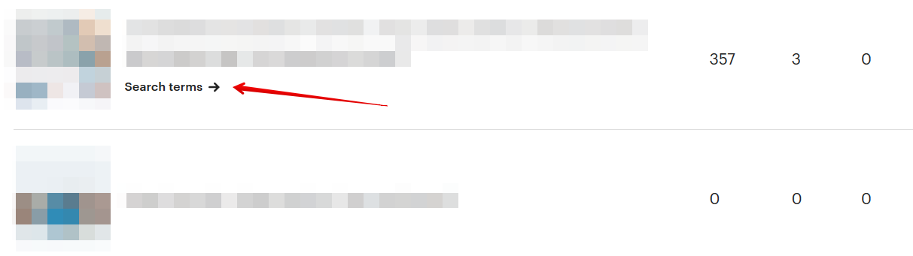
Как считается продажа по рекламному листингу
Etsy считает, что продажа совершена после клика на рекламный листинг Etsy
Ads, если в течение 30 дней после клика этот же человек купил данный товар
или любой другой в вашем магазине.
Например, вы рекламируете зелёное платье. Покупатель кликнул на ваш ре-
кламный листинг, но в итоге заказал красное платье. В этом случае в статистике
рекламы заказ будет всё равно “приплюсован” к статистике зелёного платья.
По каким ключевым словам показывался мой листинг
Чтобы узнать, по каким ключевым фразам находили ваш рекламный листинг,
нужно перейти к списку рекламируемых товаров и нажать кнопку Search terms
возле нужного товара.
Если ключевые фразы отсутствуют (такое бывает, если объявление в рекламе
недавно и его ещё мало показывали), тогда этой ссылки у листинга не будет.
На открывшейся странице показана история поисковых фраз, по которым за
последние 30 дней показывали данный рекламный листинг.
272

Имейте в виду, что скорее всего не все запросы будут отображаться. Как гово-
рят сами Etsy, статистика обновляется с задержкой в пару дней.
Также в статистику попадают только запросы, по которым объявление показы-
вали более 5 раз. То есть Etsy не расскажут о малозапрашиваемых фразах.
Плюс в статистику не попадают фразы, которые посетители искали в мобильном
приложении Etsy.
Если вы хотите собрать перечень поисковых фраз всех листингов из рекламы,
перейдите на следующую страницу:
https://www.etsy.com/your/shops/me/advertising/analytics/
Как узнать, какие рекламные листинги были показаны по кон-
кретному запросу
Такой возможности на Etsy нет. Можно сделать только обратное – посмотреть
по каким фразам показан конкретный листинг.
273

Можно ли не показывать рекламу жителям определенной
страны
Посетитель Etsy увидит ваше рекламное объявление, если:
• вы отправляете товары в страну, где находится данный человек
• вы отправляете товары в страну, которую посетитель указал в поисковом
фильтре Ship to
Например, вы не отправляете товары в Австралию. В этом случае жители Ав-
стралии не увидят вашу рекламу на Etsy.
Но если австралиец хочет заказать подарок другу из США (куда вы отправля-
ете), то он выставит в поисковом фильтре Ships to значение United States (то
есть показывать товары, которые отправляют в США). В этом случае он увидит
ваш рекламный листинг.
Как понять, выгодно ли мне давать рекламу
Сравнить затраты на рекламу с её доходностью можно на странице Marketing –
Etsy Ads.
Нас здесь интересуют значения Revenue from ads (прибыль от рекламы) и You
spent XXX on ads (вы потратили на рекламу).
274


В данном случае, потрачено 79 долларов, а заработано 247.
Только вы можете оценить, насколько данное соотношение выгодно для вас.
Так как необходимо учитывать расходы на материалы, отправку, упаковку и т.п.
Кто-то из продавцов считает неплохим соотношение 1-к-3 (то есть на 1 потра-
ченный доллар приходится $3 прибыли). А для кого-то и 1-к-10 – это очень
невыгодно.
Если вы понимаете, что реклама для вас невыгодна – можно или вовсе от неё
отказаться, или попробовать рекламировать другие товары, или изменить вели-
чину дневного бюджета, или изменить SEO рекламируемых листингов.
Такой анализ эффективности рекламы лучше проводить хотя бы через один-
два месяца.
Как отключить Etsy Ads
Чтобы отключить Etsy Ads, нажмите кнопку Other options - Turn off ads.
После чего подтвердите своё решение.
275

Снова включить рекламу можно в любой момент.
Что такое реклама Offsite Ads
Помимо рекламы внутри Etsy, площадка может рекламировать ваши товары и
на других сайтах: Google, Facebook, Bing, Pinterest, Instagram.
Например, в Google реклама выглядим следующим образом:
Когда покупатель вводит определенную фразу, которую Google считает «про-
дающей», ему показываются рекламные объявления над результатами поиска.
Так рекламируются не только Etsy, но и многие другие онлайн-магазины.
Какие комиссии у Offsite Ads
В отличие от Etsy Ads, в рекламе Offsite Ads продавец платит комиссию только
в том случае, если у него что-то купили.
276
То есть, даже если к вам зашли 100 человек по этой рекламе, но ничего не
купили – вам ничего платить не нужно.
Если же продажа произошла, то продавец оплачивает дополнительную комис-
сию 15% с общей суммы заказа, которую оплатил покупатель.
У магазина, который за последние 12 месяцев продал товаров больше чем на
10 000 долларов США, процент комиссии снижается до 12%. А если доход в
какой-то момент снизится, то всё равно комиссия с продажи будет 12%.
Максимальный размер комиссии Offsite Ads с одного заказа не может превы-
шать 100 долларов.
Как считается продажа Offsite Ads
Комиссия будет начислена, если покупка в вашем магазина произошла в тече-
ние 30 дней после клика по вашему рекламному объявлению.
Если этот же покупатель совершит повторную покупку у вас в течение этих 30
дней – то нужно снова оплатить комиссию Offsite Ads.
Если человек кликнул на вашу рекламу, но купил у конкурента – комиссию ни-
кто не платит.
Если человек кликнул на рекламу конкурента, но купил у вас – комиссию также
никто не платит.
Как включить Offsite Ads
Offsite Ads включается у всех магазинов автоматически.
Если магазин за прошедшие 12 месяцев продал товаров меньше, чем на 10 000
долларов, то он может отключиться от рекламы Offsite Ads (и снова к ней под-
ключаться по своему желанию).
При этом, если за прошедшие 12 месяцев магазин продал товаров на общую
сумму 10 000 долларов США или больше, то он подключается к рекламе Offsite
Ads навсегда.
Доход за последние 12 месяцев пересчитывается в начале каждого месяца.
277

То есть, если ваш магазин в какой-то момент превысит доход в 10 000 долларов
за 12 месяцев, то вы не сможете отключиться от Offsite Ads. Даже если впослед-
ствии ваш доход опустится ниже 10 000 долларов.
Как отключить Offsite Ads
Вы можете отключить Offsite Ads только в том случае, если ваш магазин никогда
не продавал товаров больше, чем на 10 000 долларов за последние 12 месяцев.
Если это так, то рекламу Offsite Ads отключить можно.
Также учитывайте, что Etsy отключает рекламные листинги не сразу, а в течение
3-х дней. Поэтому, клики и продажи могут происходить и после отключения ре-
кламы. И если случится продажа – за неё нужно будет заплатить комиссию.
Чтобы отключить рекламу Offsite Ads, перейдите на странице Settings – Offsite
Ads и нажмите кнопку Stop promoting my products.
В открывшемся окне снова нажмите Stop promoting my products, а потом ещё раз
(в итоге нужно нажать 3 раза).
Если вы потом решите вновь включить этот рекламный инструмент, снова зай-
дите на страницу Settings – Offsite Ads и нажмите кнопку Restart Offsite Ads.
278


В открывшемся окне снова нажмите кнопку Restart Offsite Ads. После этого ре-
клама снова запустится.
Как выбрать, какие листинги рекламировать в Offsite Ads
Продавцы не могут самостоятельно выбирать, какие листинги рекламировать в
Offsite Ads. Etsy сами выбирают, что, когда и на каких рекламных сайтах пока-
зывать.
Как отследить продажи Offsite Ads
Статистика по Offsite Ads находится на следующей странице (доступна из раз-
дела Stats): https://www.etsy.com/your/shops/me/stats/offsite-ads
Здесь можно посмотреть, на какие объявления кликали (Advertised item), когда
кликнули и на каком сайте (Date clicked), что купили (Item shopper bought), когда
купили (Date of sale), сколько оплатили (Sale value) и размер комиссии (Ad fee).
279

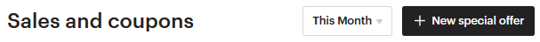
11. Скидки и распродажи
Что такое купоны на скидку (Coupon Code)
На Etsy есть возможность создать коды скидки (Coupon Code), введя которые
во время заказа покупатели получат скидку.
Чтобы его создать, перейдите на страницу Shop Manager – Marketing – Sales and
coupons.
Здесь показан список созданных купонов и распродаж.
Возле каждой акции указано:
• срок действия Duration (например, May 16, 2018 – no end date, то есть с 16
августа 2018 и без даты окончания)
• сколько отправлено писем с купонами Sends (для купонов Abandoned Cart
и Recently favorited)
• сколько покупателей воспользовались скидкой/купоном (Uses)
• сколько заработано на продажах по этому купону (Revenue)
• значок «Active» означает, что купон активен и им можно воспользоваться
• купоны, срок действия которых завершился, выделены серым цветом
Чтобы создать новый купон, нажмите кнопку New special offer.
В открывшемся окне выберите вариант Create coupon.
280
Задаём условия действия купона:
• Тип скидки или «I’d like to offer shoppers» — может быть трех видов: про-
цент от текущей цены (Percentage off) от 10 до 90%, конкретная сумма
(Fixed amount off) или бесплатная доставка (Free shipping).
• Минимальный размер заказа или «Minimum order to qualify» — укажите
сумму заказа (Order total) или количество товаров (Quantity), начиная с
которых купон будет действовать. Выберите None, если хотите, чтобы
купон действовал на любые покупки в магазине
• Отправить купон покупателям после любой покупки или «Send as a
thank you»
• Срок действия или «Duration». Если купон бессрочный, то поставьте га-
лочку «No end data»
• Название купона или «Customize your coupon code» — вводится без про-
белов, только цифры и буквы, все символы автоматически становятся
заглавными.
281

Под полем с названием купона есть ссылка, которую можно отправить покупа-
телю – и его купон автоматически применится при оплате.
Если выбрать тип скидки Percentage off (то есть скидка в процентах) и Minimum
order – None, то будет доступен дополнительный шаг Choose listings for discount,
на котором можно выбрать листинги, участвующие в акции.
На этом шаге нужные листинги можно выбрать двумя способами:
• Указать секцию магазина (Add multiple listings)
• Найти листинг по названию (Search for a single listing)
Чтобы исключить товар, нажмите крестик в правой части нужной строки.
282

На последнем шаге проверьте параметры купона. Если всё верно – нажимайте
кнопку Confirm and create discount. Готово!
После того, как купон создан, вы можете предложить его своим клиентам. Ука-
жите о возможности скидок в Announcement, а также в описании нужных ли-
стингов, поощряйте текущих клиентов и привлекайте новых через соцсети.
Удалить купон нельзя. Но можно остановить его действие. Для этого кликните
на название нужного купона, после чего нажмите кнопку Deactivate coupon.
Можно ли сделать купон на конкретный товар или секцию
Да, вы можете создать купон на скидку, который будет действовать только на
конкретные товары.
283
Для этого в параметрах купона укажите тип скидки Percentage off (скидка в про-
центах) и Minimum order – None. На следующем шаге выберите товары, которые
участвуют в акции.
Других вариантов создать купон для конкретного товара на Etsy пока нет.
Можно ли создать купон для конкретного покупателя
Технически это сделать нельзя (чтобы им мог воспользоваться только один кон-
кретный человек).
Но вы можете создать новый купон (например, с именем покупателя) и отпра-
вить его клиенту через личные сообщения.
Сколько раз можно воспользоваться купоном
Это количество не ограничено. Если вы хотите, чтобы скидкой можно было вос-
пользоваться лишь раз, тогда придётся отслеживать это и вручную деактивиро-
вать «использованный» купон.
Может ли покупатель воспользоваться сразу несколькими ку-
понами
При покупке в корзине можно ввести только один скидочный купон. Поэтому
покупателю нужно выбрать тот, который выгоднее.
Единственный вариант, когда две акции могут суммироваться – бесплатная до-
ставка и скидка.
Купон со скидкой в процентах действует только на товар или
товар+доставка
«Процентный» купон действует только на стоимость товара. Стоимость до-
ставки останется неизменной.
284


Как сделать скидку за отличный отзыв
Если покупатель оставил вам отличный отзыв, вы можете не только поблагода-
рить его, но и отправить купон на скидку.
Для этого создайте новый купон и отправьте покупателю вместе в благодар-
ственным текстом в личном сообщении.
Как сделать купон для акции BUY 2 GET 1 FREE
На Etsy нет технической возможности создать купон с такими условиями.
Выйти из положения можно двумя способами:
1. Если у вас товары примерно равны по стоимости, то создайте купон на
скидку 33% (Percentage off). И укажите в поле Quantity, что им можно вос-
пользоваться только при покупке от 2-х товаров.
2. Просить покупателя при заказе 2-х товаров указать в комментарии к за-
казу, какой 3-й товар он хочет получить бесплатно.
Как провести распродажу товаров
Чтобы провести распродажу, нужно перейти в раздел Shop Manager – Marketing
– Sales and coupons. После чего нажать кнопку New special offer.
Далее выбрать пункт Run sale.
285
На втором шаге нужно выбрать основные параметры распродажи:
• Тип скидки или «I’d like to offer shoppers» — процент от текущей цены
(Percentage off) от 10 до 70% или бесплатную доставку (Free standard
shipping)
• Покупатели из какой страны увидят скидку или «Where is this offer valid»:
нужно выбрать определенную страну или указать Everywhere, если рас-
продажа действует по всему миру.
• Минимальный размер заказа или «Minimum order to qualify»: None, если
скидка действует на все покупки в магазине, Quantity – скидка дей-
ствует при заказе определенного количества товаров, Order total –
сумма заказа, начиная с которой действует скидка
• Срок действия или «Duration». Распродажу, в отличие от купона, нельзя
сделать бессрочной (единственное исключение – бесплатная доставка)
• Особые условия распродажи или «Terms and conditions» – если у акции
есть особенные условия, то их нужно указать здесь, чтобы покупатели
были в курсе (этот текст показываются в начале описания товара).
Можно ничего не указывать.
• Название распродажи или «Name your sale» — вводится без пробелов,
только цифры и буквы, все символы автоматически становятся заглав-
ными. Это название видите только вы.
286

Если в пункте «Minimum order to qualify» выбрать None, то станет доступен ещё
один шаг – выбор товаров (Choose listings for discount), на которые распростра-
няется скидка. Варианты Quantity и Order total такой возможности не предостав-
ляют.
На шаге Choose listings for discount нужные листинги можно выбрать двумя спо-
собами:
• Указать секцию магазина (Add multiple listings)
• Найти листинг по названию (Search for a single listing)
287

Если вы хотите исключить какой-то товар, то нажмите крестик в правой части
нужной строки.
На последнем шаге нужно перепроверить условия действия распродажи. Если
всё верно – нажимайте Confirm and create discount.
Как предложить бесплатную доставку при заказе от XX дол-
ларов
Для этого необходимо создать распродажу Run a sale.
288


Выберите в графе I’d like to offer shoppers вариант Free standard shipping. А чуть
ниже в Order total укажите сумму заказа, начиная с которой вы предлагаете бес-
платную доставку.
Что такое купоны Abandoned Cart
На Etsy также есть специальные купоны, которые площадка отправляет покупа-
телю на электронную почту.
Один из вариантов таких купонов — это купоны Abandoned Cart.
Etsy отправят купон со скидкой тому покупателю, кто добавил ваш товар в кор-
зину, но не оплатил его в течение 24 часов.
Чтобы его создать, перейдите на страницу Marketing – Sales and coupons и
нажмите кнопку New special offer. Затем Set up offer.
Здесь есть 4 параметра настройки рекламной кампании:
• Who would you like to send this offer to – кому отправлять спец.
предложение, выбираем Abandond cart shoppers
289

• What type of coupon – тип купона (Percent off – скидка в процентах от 10
до 90; Fixed amount off – скидка в долларах, от 1 USD; Free standard ship-
ping – бесплатная доставка; Use an existing coupon – выбрать один из су-
ществующих купонов)
• Choose a coupon code – название купона, который нужно ввести покупа-
телю при оплате заказа
Эффективность рекламы Abandoned Cart можно посмотреть на странице Sales
and Coupons.
Здесь видно, сколько писем отправлено за выбранный период времени (Sends
– 17 писем), сколько человек воспользовались купоном (Uses – 1 человек) и
какую прибыль он принёс (Revenue – $17.85).
Если нажать на название купона, то вы попадёте в его настройки. Здесь можно:
• приостановить отправку купонов – кто их уже получил смогут ими вос-
пользоваться (Stop sending offers)
• деактивировать купон – он больше не будет отправляться, а уже отправ-
ленные купоны действовать больше не будут (Deactivate coupon)
290


Что такое купоны Recently Favorited
Второй тип купонов, которые Etsy отправляет по электронной почте, помимо
Abandoned Cart, – это Recently Favorited.
Etsy высылает их тем покупателям, кто добавил любой ваш товар в избранное
48 часов назад.
Чтобы его создать, перейдите на страницу Marketing – Sales and coupons и
нажмите кнопку New special offer. Затем Set up offer.
Здесь есть 4 параметра, аналогичные Abandoned Cart:
• Who would you like to send this offer to – кому отправлять спец.
предложение, выбираем Recently favorited shoppers
291


• What type of coupon – тип купона (Percent off – скидка в процентах от 10
до 90; Fixed amount off – скидка в долларах, от 1 USD; Free standard ship-
ping – бесплатная доставка; Use an existing coupon – выбрать один из су-
ществующих купонов)
• Choose a coupon code – название купона, который нужно ввести покупа-
телю при оплате заказа
Если нажать на название купона, то вы попадёте в его настройки.
Здесь можно:
• приостановить отправку купонов – кто их уже получил смогут ими вос-
пользоваться (Stop sending offers)
• деактивировать купон – он больше не будет отправляться, отправленные
купоны действовать больше не будут (Deactivate coupon)
292
Какие ещё акции можно провести в магазине
Более подробно о скидках и распродажах в Etsy-магазине можно прочитать в
моей книге «Скидки и распродажи на Etsy: 45 вариантов акций и распродаж,
которые привлекут новых клиентов, удержат старых и увеличат ваш доход».
• Зачем проводить акции
• Где рассказать о своих акциях
• Как создать/отредактировать/завершить акцию на Etsy
• Варианты акций
o Лёгкие акции (простые в реализации – «сделал и забыл»)
o Акции средней сложности (часто требуют общения с покупателем)
o Экспериментальные акции (требуют контроля и ручной работы)
Бонус для читателей – скидка 20% по промокоду ETSYBOOK
293

12. Прочее
Есть ли у Etsy мобильное приложение
У Etsy есть 2 варианта приложений:
• для покупателей (Etsy)
• для продавцов (Sell on Etsy)
В первом можно просматривать и покупать товары, вести диалоги с продав-
цами, оставлять отзывы. Во втором – управлять своим магазином, следить за
продажами, фаворитами и т.п.
Скачать приложения можно в App Store и Google Play или найти по ссылке
https://www.etsy.com/mobile/
Как написать в техподдержку Etsy
Если у вас есть какой-то вопрос по работе сайта, то вы можете написать Этси
письмо.
Для этого перейдите на страницу https://www.etsy.com/help/contact (или меню
Shop Manager – Community and Help – Contact us).
Выберите подходящую категорию вопроса (для продавцов Selling on Etsy).
294


Затем выберите подкатегорию обращения.
В конце у вас появится список готовых ответов от Etsy.
Если вы не нашли в них ответа на свой вопрос – нажмите I still need help (мне
всё ещё нужна помощь).
После этого появится перечень способов связаться с техподдержкой: онлайн-
консультант (Chat with us), звонок (Call us) или сообщение по электронной почте
(Email us). Выберите то, что вам больше подходит.
295


Если это вариант Email us, то у вас откроется новая страница. Напишите тему
письма (Subject) и текст проблемы/вопросы (Description). Если необходимо, при-
крепите файл (Add file).
После этого нажмите кнопку Send — сообщение отправлено администрации.
Если выбрать пункт Call us, то появится список номеров техподдержки для Се-
верной Америки, Великобритании и Австралии.
Ещё одним вариантом для связи со службой поддержки является обращение к
конкретному администратору через личное сообщение на Этси. Можно выбрать
кого-то из специалистов, например, в данном разделе форума и написать ему:
https://community.etsy.com/t5/Announcements/bd-p/announcements
Администратор Etsy имеет оранжевую букву E рядом со своей аватаркой
296
В службу поддержки Etsy нужно писать на русском или ан-
глийском
У Этси нет русскоязычной службы поддержки. Поэтому все сообщения необхо-
димо писать на английском языке.
Хотя кто-то из продавцов пишет на русском. В этом случае бывает, что специа-
лист Etsy переводит вопрос с помощью онлайн-переводчиков, а затем присы-
лает 2 варианта ответа – на английском и русском (также переведённом с по-
мощью онлайн-переводчика).
Etsy закрыли мой магазин – что делать
У Etsy есть свод правил, их политика, о том, что можно продавать на их пло-
щадке, а что нельзя. Чаще всего именно по причине нарушения их общих пра-
вил и блокируются магазины. Если с вашим магазином случилось то же самое
– вот, что можно сделать.
Магазин могут закрыть по какой-то конкретной причине, а могут просто отпра-
вить письмо с сообщением, что вы нарушили правила. Более того, порой даже
и писем никаких не приходит – просто однажды вы обнаруживаете, что вашего
магазина нет на Etsy.
Чаще всего эти наказания справедливы. Но далеко не всегда. И если вы счита-
ете, что никаких правил не нарушали, то можно попытаться сделать следующее:
• написать
админам
Этси
сообщение
через
форму
https://www.etsy.com/help/contact
• написать электронное письмо в ответ на их письмо
• создать тему на форуме Etsy и обрисовать всю ситуацию
• написать личное сообщение знакомому вам админу Этси (например, вы с
ним общались на форуме)
Бывали случаи, что магазины открывали заново – либо продавцы доказывали,
что у них всё «чисто», либо их просто закрыли по ошибке.
Но бывает и так, что все ваши сообщения Этси игнорирует, отвечая лишь прось-
бой больше не создавать новые магазины – иначе и их заблокируют.
297
Etsy требуют доказать, что я сам делаю свои товары - как это
сделать
Чаще всего такая проверка встречается у новых магазинов, которые продают
что-то необычное и выглядящее очень профессионально. Например, кожаные
сумки или театральные костюмы.
В таких случаях Этси просит вас доказать, что именно вы – автор этих изделий.
Конкретно указывая, что им нужно в виде доказательств. Обычно, это фотогра-
фии вас за работой. Ваш рабочий кабинет/студия.
Будьте терпеливы и отправляйте всё, что они просят – тогда с вас «снимут по-
дозрения».
Есть ли на Etsy покупатели-мошенники
Конечно, как и повсюду в интернете, на Этси также есть свои мошеннические
схемы. Какими-то пользуются чаще, каким-то реже. Но лучше знать о них зара-
нее, чтобы не попасться на удочку подобному покупателю.
• несанкционированный платёж, или chargeback через банк (после получе-
ния товара покупатель заявляет своему банку, что он не делал эту покупку
– чаще всего банк встаёт на сторону своего клиента)
• нигерийские письма, или деньги скоро придут (платёж не проходит на
PayPal или на почту приходит письмо 1-в-1 похожее на сообщение от
Пайпала – при этом покупатель всё время торопит вас)
• пустая посылка (покупатель заявляет, что ему пришла пустая коробка без
товара)
• потерянная посылка (если посылка без трек-номера или не отслежива-
ется в стране получателя, то он может сказать, что ничего не получал)
• поврежденный товар (покупатель говорит, что товар сломался во время
пересылки и просит выслать повторный или вернуть деньги)
• подарите ваш товар, или обзор товара (приходит личное сообщение с
просьбой подарить товар больному ребёнку или выслать на обзор для
раскрученного аккаунта в соцсетях)
298
К сожалению, не во всех случаях продавцы могут себя обезопасить от подоб-
ных покупателей. В то же время, мы может сделать довольно многое: фотогра-
фировать процесс упаковки и отправки посылки, а также всегда высылать за-
казы только с трек-номером.
Что такое фаватоны и кликатоны и стоит ли в них участвовать
У многих команд на Этси есть свои игры, которые они используют для раскру-
чивания магазинов. Например, поставить лайк 10 товарам, которые запостили
выше вас. Или зайти в магазин и открыть на 10-20 секунд нужное количество
товаров.
Раньше такие игры хорошо работали, но сейчас большинство из них уже неэф-
фективны, так как Etsy постоянно ищут способы отслеживать подобные
накрутки.
Кроме того, в Sellers Policy написано, что такие действия могут расцениваться
как нарушения правил площадки:
take any other action (such as manipulating clicks, carts or sales) for the purpose of
shilling, manipulating search or circumventing Etsy's policies
Как сделать бэкап магазина
Бэкап – это резервное сохранение настроек магазина и листингов.
Например, вы случайно удалили нужный листинг или изменили заголовок то-
вара, после чего у него пропали просмотры. Вернуть всё в «рабочее» состояние
поможет бэкап магазина.
Есть несколько вариантов сделать бэкап.
1. Официальный от Etsy. Его можно сделать, если перейти на страницу Shop
Manager – Settings — Options — Download data.
299

2. Сторонние сервисы и сайты. Из известных мне сайтов такой функционал
есть у Seller Tools и Backtsy.
Подробнее о плюсах и минусах каждого варианта вы можете прочитать в статье
https://proetsy.ru/backup-magazina/
Какие в США главные праздники
В США, как и во многих странах, есть крупные праздники, на которые принято
дарить подарки. Мы все знаем про Рождество, Новый год и День святого Ва-
лентина. Но также есть и другие примечательные праздники и события:
• Пасха
• День матери
• День отца
• День независимости
• День труда
• День Колумба
• Хэллоуин
• День благодарения
• Чёрная пятница и Киберпонедельник
Подробнее об этих праздниках и о том, что на них принято дарить, вы можете
почитать в статье в блоге:
https://proetsy.ru/kalendar-gotovimsya-k-sobyitiyam-v-ssha-etsi/
300

Что такое команды (Teams) на Etsy и зачем они нужны
Команды – это раздел на Этси (Shop Manager – Community and Help – Teams),
где общаются друг с другом в основном продавцы (и иногда, покупатели).
https://community.etsy.com/t5/Etsy-Teams/ct-p/teams
Участники команд делятся информацией о ведении бизнеса в своём го-
роде/стране, дают советы и получают их от более опытных участников, а также
просто общаются на наболевшие темы. Также в командах зачастую организу-
ются игры, вроде фаватонов/кликатонов и т.п.
Участником команды можно стать автоматически, подписавшись на неё, или по-
дав заявку, которую рассмотрит Капитан команды.
Форум Etsy
Форум Этси – это отличная возможность найти ответ на возникший вопрос, а
также просто побеседовать с такими же, как и мы, продавцами – у которых
точно такие же проблемы (Shop Manager – Community and Help – Forums).
https://community.etsy.com/t5/Etsy-Forums/ct-p/forums
301

На форуме есть несколько разделов:
• Announcements — объявления Этси о важных изменениях на сайте
• Etsy Success — вопросы админам Etsy и их ответы
• Creative Process — здесь можно обсудить всё, что связано с созданием то-
варов (дизайн, материалы, техники, рабочее место, оборудование)
• Managing Your Shop — открытие и развитие магазина (о работе мобильных
приложений, платные подписки Etsy, продажи в оффлайне)
• Photography Tips — советы по фотографиям (свет, съёмка, обработка и
прочее)
• All Things Finance — какую цену поставить своим товарам, как вести буху-
чёт и платить налоги
• Marketing Your Business — о продвижении магазина на Etsy и за его пре-
делами (обсуждение SEO, работы поиска, статистики магазина, соцсетей,
рекламы, распродаж и т.п.)
• Providing Great Customer Service — общение с покупателями (как их удивить
и обрадовать, как общаться в личных сообщениях, работы под заказ, воз-
враты и обмены)
• All About Shipping — отправка заказов
• Shop Critiques – здесь можно спросить совета других продавцов о том, что
улучшить в своём магазине
• Technical Issues — если возникла ошибка на сайте, то можно написать
сюда (но ответят вам только другие участники форума, а не админы)
302

Какие есть рассылки Etsy и как на них подписаться
У Этси есть много email рассылок для продавцов. На большинство из них можно
подписаться (или отписаться) из личного кабинета на странице You – Account
settings – Emails.
https://www.etsy.com/your/account/email
Как узнать, показываются ли мой магазин и товары в Google
Чтобы узнать, находят ли ваш магазин или товары через Google, необходимо
зайти в статистику магазина (Shop Manager – Stats).
How shoppers found you – это источники переходов, то есть откуда заходили в
ваш магазин.
303


Для просмотра переходов из поисковых систем, нажмём Etsy marketing & SEO.
На открывшейся странице дойдём до пункта Traffic source breakdown.
Напротив строки www.google.com указана цифра 11 – то есть за выбранный
период времени в магазин из англоязычного поиска Гугл перешли 33 раза.
Ещё 5 переходов было из немецкого google.de.
Чуть ниже находится раздел Search terms – список ключевых слов, по которым
люди находили магазин через поисковые системы.
Помимо этого, вы можете ввести в поиск Google следующую фразу:
site:etsy.com/shop/название_вашего_магазина
Например: site:etsy.com/shop/ThinkPinkBows
304

Так вы узнаете, видит ли главную страницу вашего магазина Google.
То же самое можно сделать с конкретным товаром:
site:etsy.com/listing/номер_товара
Например: site:etsy.com/listing/509192483/
Как сделать красивую ссылку на магазин
Есть 2 варианта написания веб-адреса вашего магазина:
1) etsy.com/shop/CreatingUnkamen
2) CreatingUnkamen.etsy.com
Они оба равнозначны. Перейдя по второй ссылке Etsy автоматически перебро-
сит вас на первый вариант.
Как продавать на Etsy оптом
Долгое время на Etsy был специальный раздел, посвященный оптовым прода-
жам – Etsy Wholesale.
305


Но в июле 2018 года его закрыли. Теперь продавать оптом необходимо напря-
мую на самом сайте Etsy.com, договариваясь об условиях в личной переписке.
Что такое admirers и followers и чем они отличаются
Admirers – люди, которые подписаны на ваш магазин. Они видят у себя на глав-
ной странице обновления, которые у вас происходят.
Узнать количество подписчиков магазина можно на его главной странице – под
списком категорий/секций.
Followers – это люди, которые подписаны лично на вас (а не на магазин).
Можно ли отправлять сообщения людям, которые добавили
в избранное мои товары или магазин
Да, такая возможность есть – на Этси вы можете отправить личное сообщение
любому пользователю.
306
Но если вы и решите так поступать, то стоит делать это с большой осторожно-
стью – человек может расценить ваше сообщение как спам и пожаловаться на
вас Этси. А спам на площадке не приветствуется.
Но можно отправлять специальные купоны Recently Favorited — это абсолютно
легально и не нарушает правил площадки.
В какой момент стоит нанимать помощника
Если вы чувствуете, что магазин занимает у вас слишком много времени – то
можно подумать о том, чтобы нанять себе помощника.
Можно отдать ему ту работу, которая меньше всего вам нравится или отнимает
больше всего времени. Например, походы на почту или закупку материалов.
Главное посчитайте, будет ли это для вас выгодно. Если в освободившиеся
время вы можете сделать что-то, что принесёт магазину дополнительную при-
быль – то это будет отличное вложение.
У меня цифровые товары. Покупатель просить изменить раз-
мер/цвет в файле. Стоит ли брать за это деньги
Всё зависит от того, сколько времени у вас это займёт. Если минут 5-10, то мо-
жете сделать бесплатно. Если же требуется поработать достаточно долго, то ко-
нечно стоит просить дополнительную плату.
Плюс от такого редактирования в том, что вы можете выложить получившийся
результат как новый листинг – вдруг кому-то ещё понравится такой вариант, и
он его купит. В результате ваша бесплатная работа окупится.
Какие дни недели самые активные на Etsy
По моим наблюдения – это выходные, с субботы по воскресенье. В это время у
меня больше всего просмотров и продаж.
После выходных обычно спад – особенно в середине недели, в среду-четверг.
Но у разных магазинов эта статистика может быть разной.
307


Какое время дня самое активное на Etsy
Так как основная аудитория Etsy – это жители США, то пик посещаемости при-
ходится на то время, когда там день.
Узнать часовую разницу между вашим городом и, например, Нью-Йорком,
можно на различных сайтах. Я для этой цели использую
https://yandex.ru/time
Можно ли закрыть в магазине раздел проданных товаров
Да, это можно сделать. Для этого зайдите в меню Shop Manager – Settings – Op-
tions и в самом низу в разделе Sold Listings выставите значение No, hide them.
После этого посетители вашего магазина (включая конкурентов) не смогут уви-
деть, что вы продали – ссылка на эту страницу пропадёт.
308

Как скрыть магазин от покупателей из определенных стран
На Etsy это сделать невозможно. Ваши товары видят абсолютно все посетители
сайта.
Что такое Social Media
В мобильном приложении для продавцов и на сайте Etsy есть инструмент Social
Media (Marketing – Social media). C его помощью можно упростить наполнение
своих аккаунтов в социальных сетях.
Чтобы начать с ним работать, сначала необходимо подключить к Etsy ваши со-
циальные сети (Marketing –Social media – Social accounts). На настоящий момент
доступны Facebook, Pinterest, Twitter и Instagram.
С помощью Social media вы можете рассказать в соцсетях:
• о своих товарах (например, о новинках)
• о важных событиях в жизни магазина (например, 100-я продажа)
• о скидках, купонах и распродажах
• о новом 5-звёздочном отзыве
• о других продавцах, которые вам нравятся
Например, чтобы разместить в соцсетях информацию о новом товаре, нажмите
кнопку Share на нужной фотографии.
309


Затем выберите подходящую фотографию и напишите текст в поле Add a caption
(можно взять тот, что предлагает сам Etsy – Start with this caption).
На следующем шаге выберите подходящую социальную сеть и нажмите Post and
continue, а затем Done. Несколько кликов – и пост для соцсетей готов!
Что такое Etsy Plus
Это платный тариф для продавцов, который даёт дополнительные возможности
и настройки магазину.
Стоимость Etsy Plus составляет 10 долларов.
Чтобы подключить платный тариф, необходимо перейти на страницу Settings —
Your subscription и нажать кнопку Upgrade.
310

Что даёт Etsy Plus:
• 15 бесплатных листингов для добавления новых или обновления старых
товаров (сгорают по истечении месяца подписки)
• 5 долларов на рекламу Etsy Ads (сгорают по истечении месяца подписки)
• возможность купить доменное имя со скидкой 50% или бесплатный до-
мен .store – при переходе по купленному web-адресу покупатель попадёт
в ваш Etsy магазин
• два дополнительных типа баннера: карусель (до 4-х фотографий, которые
сменяют друг друга) и коллаж (до 4-х фотографий товаров на баннере)
• крупная дополнительная 5-я фотография в разделе Featured Items
• в Featured Items можно разместить ссылки на секции, а не только на от-
дельные листинги
• кнопка “Сообщить мне, когда проданный товар снова появится в мага-
зине” — с её помощью покупатели первыми узнают, когда какой-то товар
вновь появится на вашей витрине
• скидки у партнёров Etsy
Более подробно об Etsy Plus вы можете прочитать в этой статье:
https://proetsy.ru/etsy-plus/
311

Что такое Pattern
Если у вас в магазине подключен Etsy Payments, то вы можете создать на основе
Этси-магазина свой собственный сайт с уникальным дизайном, где будут про-
даваться ваши изделия.
Товары в интернет-магазин можно подгружать из Etsy-магазина. А все продажи
и наличие позиций будет синхронизироваться автоматически.
https://www.etsy.com/pattern
Стоимость ежемесячной подписки на данную платформу составляет 15 долла-
ров. Первые 30 дней ей можно пользоваться бесплатно.
Нужно учитывать, что так как это будет отдельный сайт в интернете, то привле-
кать посетителей на него необходимо самостоятельно.
Более подробно о сервисе Pattern вы можете прочитать в этой статье:
https://proetsy.ru/etsy-pattern-sobstvennyiy-internet-magazin-za-5-minut/
Что такое раздел Updates
В правом верхнем углу сайта есть кнопка Updates.
Если её нажать, то вы увидите новые товары и акции в магазинах, которые вы
добавили себе в избранное.
312
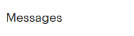
Плюс этого раздела в том, что и ваши клиенты/посетители магазина, кто доба-
вил его в Favorites, увидят новшества в вашем магазине.
Используйте это для повторного привлечения людей, которым уже интересен
ваш магазин и ваши изделия.
Что такое раздел Integrations
В личном кабинете продавца есть раздел Integrations. Там перечислены попу-
лярные программы и сервисы, которые помогают работать на Etsy
Они разделены по категориям, чтобы проще было среди них ориентироваться.
Вход в эти сервисы происходит через аккаунт Etsy, при этом ваши данные за-
щищены – никто не узнает ваши логин-пароль от магазина.
313

Например, вы можете анализировать свои листинги с помощью приложений
Marmalead или eRank. А редактировать фотографии через FotoFuze или Vela.
Часть сервисов платные, а часть – бесплатные.
Если вы не хотите большое пользоваться каким-то из приложений и давать им
данные своего магазина, то достаточно перейти на вкладку Manage и нажать
кнопку Disconnect справа от нужного сервиса.
Можно ли на Этси вести свой блог
На Etsy такой возможности нет. Но вы можете:
1. Вести свой блог на отдельном сайте и указать ссылку на него в профиле
магазина.
2. Использовать для этой цели Shop Updates (учитывая, что максимальный
размер сообщения там всего 255 символов)
Как и зачем подключать к магазину Google Analytics
На Этси есть возможность подключить к магазину Google Analytics и получать с
его помощью расширенную статистику по заходам и просмотрам.
Зачем это нужно? Например, вы можете узнать средний возраст посетителей.
Или сколько времени они проводят в магазине.
Для подключения нужно зайти в GA под вашим Google аккаунтом.
https://www.google.com/intl/ru_ru/analytics/
Введите данные своего магазина.
314
Галочки, которые есть на этой форме, можно оставить как есть. В конце нажмите
кнопку Get Tracking ID.
После этого вы перейдёте на страницу управления аккаунтом. Скопируйте ваш
Tracking ID (выделен красной рамкой).
315

Теперь переходим на Etsy, Shop Manager – Settings – Options, вкладка Web Ana-
lytics. Вставьте ваш ID в поле, как показано ниже.
Всё, вы подключили аккаунт Google Analytics к своему магазину. Примерно че-
рез 24 часа вы получите свои первые данные.
316


Как узнать, сколько человек заходит в мой магазин
Это можно посмотреть в разделе статистики личного кабинета продавца (Shop
Manager – Stats).
Нужный нам показатель статистики – это Visits. В данном случае Этси показы-
вает, что магазин посетили 516 человек.
Также это можно посмотреть с помощью привязанного к Etsy аккаунта Google
Analytics.
Выберите отчёт Аудитория – Обзор. Справа сверху укажите день, за который
вам интересно посмотреть статистику (или диапазон дней). После чего снизу вы
увидите графу Пользователи – это и есть число людей, которые посетили ваш
магазин в указанный отрезок времени.
317
Чуть ниже вы можете посмотреть страны ваших посетителей.
Хочется отметить, что число визитов в статистике Etsy и Google Analytics почти
никогда не совпадают. С чем это связано – не известно. Видимо, каждая си-
стема считает по-своему.
318
Заключение
Если после прочтения книги у вас остались вопросы, вы можете задать их на
страницах блога proetsy.ru или в личном письме на почту book@proetsy.ru с
пометкой «Настольная книга».
Также рекомендуем подписаться на наши социальные сети
• Телеграм-канал ПроЭтси
• Инстаграм ПроЭтси
• Вконтакте ПроЭтси
чтобы следить за последними новостями Etsy.
Хотим обратить ваше внимание, что сайт Этси может изменить свои правила в
любой момент. По мере того, как у нас будут появляться новые вопросы от про-
давцов, а также при нововведениях и изменениях на Etsy, мы будем постепенно
дополнять книгу. Чтобы у вас под рукой всегда было полное руководство по
превращению вашего любимого хобби в дополнительный источник дохода.
319